- ІСТОРІЯ РОЗВИТКУ ОПЕРАЦІЙНИХ СИСТЕМ
- Ранні обчислювальні пристрої
- Електромеханічні і релейні машини
- Послідовна обробка даних
- Прості пакетні системи
- Багатозадачні пакетні системи
- Системи з режимом розподілу часу
- Операційні системи і глобальні мережі
- Операційні системи міні-комп’ютерів
- Основні досягненняя
- Сучасні системи UNIX
- Маленький UNIX виростає в LINUX
- Операційна система OS/2
- Нові досягнення Microsoft Windows
- Історія операційних систем Apple
- Операційні системи для мобільних пристроїв
- ОС для хмарних обчислень
- Операційні системи СРСР
- Контрольні питання і тести до розділу
- Тести
- ПРИЗНАЧЕННЯ І КЛАСИФІКАЦІЯ ОС
- СУЧАСНІ ТЕХНОЛОГІЇ ПРОЕКТУВАННЯ ОС
- Вимоги, що пред’являються до операційної системи
- Розширюваність
- Переносимість
- Сумісність
- Надійність, захист інформації і безпека
- Структура побудови ОС. Архітектура ядра
- Множинні прикладні середовища
- Концепція віртуальних машин
- Мережеві і розподілені ОС
- Мультипрограмування
- Багатопоточність
- Симетрична багатопроцесорна обробка
- Контрольні питання
- Тести
За основу взято навчальний посібник “основи операційних систем” Авраменко В. С., Авраменко А. С.
ІСТОРІЯ РОЗВИТКУ ОПЕРАЦІЙНИХ СИСТЕМ
Серед усіх системних програм, з якими доводиться мати справу користувачам комп’ютерів, особливе місце займають операційні системи. Операційна система (ОС) – це програма, яка запускається відразу після включення комп’ютера і дозволяє користувачеві управляти комп’ютером.
Операційна система управляє комп’ютером, запускає програми, забезпечує захист даних, виконує різні сервісні функції за запитами користувача і програм. Кожна програма користується послугами ОС, а тому може працювати тільки під управлінням тієї ОС, яка забезпечує для неї ці послуги.
Історія розвитку операційних систем тісно пов’язана з історією розвитку комп’ютерів, оскільки ОС з’явилися і розвивалися в процесі конструювання комп’ютерів. Тому, щоб представити як виглядали ОС, ми коротко і послідовно обговоримо покоління деяких моделей комп’ютерів, для яких, в основному, створювалися ОС.
Ранні обчислювальні пристрої
В якості першої в історії обчислювальної машини називають механічний арифмометр Вільгельма Шиккарда, створений в 1623 році. Машина була названа «рахунковими годинником», оскільки була заснована на механічних деталях, характерних для годинника. «Рахунковий годинник» оперував шестирозрядними цілими числами і здатний був робити додавання і віднімання. Переповнювання відзначалося дзвоном дзвоника. До наших днів машина не збереглася, але в 1960 році була створена працююча копія .
Найстарішою з рахункових машин, що збереглися до наших днів, є арифмометр Блеза Паскаля, створений в 1645 році. Паскаль почав роботу над машиною в 1642 році у віці 19 років. Батько винахідника працював збирачем податків і змушений був проводити довгі виснажливі підрахунки. Своїм винаходом Блез Паскаль сподівався полегшити роботу батька.
Перший зразок мав п’ять десяткових дисків, тобто міг працювати з п’ятизначними числами. Пізніше були створені машини, що мали до восьми дисків. Додавання на машині Паскаля виконувалося легко, що ж до віднімання, то для нього доводилося використати метод дев’ятичних доповнень. Через тридцять років Лейбніц побудував механічну машину, здатну виконувати додавання, віднімання, множення і ділення, а також обчислення квадратного кореня. Окрім цього, саме Лейбніц запропонував двійкову систему представлення чисел, яка зараз використовується в усіх обчислювальних машинах.
У 1820 році Чарльз Томас створив машину, названу просто «арифмометр». Арифмометр мав пристрій, схожий з машиною Лейбніца, і виконував ті ж операції. Робота Томаса цікава в основиому тим, що саме його арифмометр став першою рахунковою машиною, запущеною в серійне виробництво. Англійський математик Чарлз Беббідж (1792-1871) в 1823 році почав роботу над складнішою машиною – різницевою. Ця машина повинна була
реалізовувати метод кінцевих різниць для побудови математичних таблиць. Робота частково фінансувалася англійським урядом. Спочатку Беббідж планував побудувати машину, яка працювала з шестирозрядними числами і обчислювала різниці другого порядку.
У 1830 році в результаті конфлікту Беббіджа з інженером Йозефом Клементом, найнятим раніше для роботи над машиною, створення машини призупинилося. Самого Беббіджа це не збентежило. Тепер він планував створення машини, яка працювала з двадцятирозрядними числами з використанням різниці шостого порядку. Більше того, в 1834 році Беббідж зовсім втратив інтерес до різницевої машини, дійшовши до висновку, що будувати слід машину універсальну, не обмежену у своїй роботі одним завданням. Цю машину він назвав аналітичною. Це була чисто механічна машина, але Беббідж розумів, що для аналітичної машини йому необхідно програмне забезпечення.
На жаль, аналітична машина так і не була побудована. Роботи над різницевими машинами обійшлися англійському уряду в 17000 фунтів стерлінгів (таку ж кількість грошей Беббідж витратив зі свого бюджету). Не отримавши ніякої працюючої машини, уряд відмовився фінансувати подальші дослідження Беббіджа. Беббідж встиг виконати повні креслення майбутньої машини і навіть утілити «в металі» деякі її вузли. Попри те, що машина так і не була побудована, саме вона стала першою спробою створити програмовану обчислювальну машину.
Подорожуючи по Італії Беббідж познайомився з італійським математиком Луїджі Меиабрі, який у 1842 році опублікував французькою мовою статтю з описом машини Беббіджа. Статтю переклала на англійську в 1843 році леді Ада Аугуста Лавлейс, дочка поета Байрона. Леді Лавлейс забезпечила свій переклад розгорнутими коментарями, що значно переважали за розміром саму статтю. В одному з розділів цих коментарів наводиться повний набір команд для обчислення на аналітичній машині чисел Бернуллі. Цей набір команд вважається першою в історії комп’ютерною програмою, а сама Ада Лавлейс – першим програмістом. В її честь названа мова програмування Ada.
Електромеханічні і релейні машини
У кінці 1930-х років німецький інженер Конрад Цузе почав роботу над електромеханічними обчислювальними машинами. Перша машина, яка була створена в 1937 році і названа Zl, яка сприймала інструкції з кінострічки (перфострічки), була електромеханічним калькулятором з обмеженими можливостями програмування.
Наступна машина Конрада Цузе, Z2, була заснована на телефонних реле. У 1941 році Цузе завершив роботу над машиною Z3. що була першим повністю функціонуючим програмованим обчислювальним пристроєм. Машина мала 2200 реле, працювала з тактовою частотою 5-10 Гц і мала довжину машинного слова 22 біти. Z3 використовувала двійкову арифметику.
Ідею використання реле для реалізації двійкової арифметики приписують Клоду Шеннону, що запропонував відображення булевої алгебри на електромагнітні реле у своїй магістерській дисертації в 1937 році. Так або інакше, Конрад Цузе уперше успішно застосував двійкову арифметику в реально працюючій машині.
Оригінал Z3 був знищений в 1944 році при бомбардуваннях Берліна авіацією союзників. Знищені були приміщення заснованої Цузе компанії Zuse Apparatebau. На щастя, майже завершена на той час машина Z4 була раніше евакуйована в безпечне місце. У 1960 році машина Z3 була відтворена в якості експоната для Німецького технічного музею. У 1950 році завершена машина Z4 стала першим у світі комп’ютером, проданим за гроші. Якщо Аду Лавлейс слід вважати першим програмістом-теоретиком, то Конрад Цузе, мабуть, є першим програмістом-практиком.
Друга світова війна перешкодила роботам Цузе зробити серйозний вплив на світові наукові розробки в області автоматизації обчислень, що, проте, не зменшує його заслуги як творця першої працюючої програмованої обчислювальної машини.
Тим часом в США, в Bell Labs Джордж Стібітс також розробляв обчислювальні машини на основі реле. Перша працююча машина була створена в 1938 році. У 1940 році Стібітс продемонстрував машину, що виконувала обчислення над комплексними числами. Ця розробка відома також як перша машина, управляти якою можна було віддалено по телефонній лінії за допомогою телетайпу. Машина була продемонстрована на конференції, серед учасників якої були Джон Фон Нейман, Джои Моушлі і Норберт Вінер.
Послідовна обробка даних
Перше покоління комп’ютерів (1943-1955): механічні реле, електронні лампи і комутаційні панелі. У 1938 році Вінсент Атанасов і Кліффорд Беррі (університет штату Айова) створили спеціалізовану машину для розв’язання систем лінійних рівнянь, уперше застосувавши радіолампи. У певному значенні саме їх комп’ютер, названий ABC (Atanasoff Berry Computer), став першою в історії електронно-обчислювальною машиною.
Друга світова війна також зіграла певну роль в розвитку обчислювальної техніки. Так, у Великобританії за участю Алана Т’юринга була створена повністю електронна машина Colossus (1943), що призначалася для розшифровки перехоплених німецьких повідомлень. Colossus розроблялася і експлуатувалася в обстановці строгої секретності; подробиці проекту стали доступні громадськості тільки через 30 років.
У певному значенні більше повезло американському проекту ENIAC, виконаному в університеті штату Пенсильванія Джоном Преспером Еккертом і Джоном Уільямом Моушлі. Створення ENIAC фінансувалося з військового бюджету США і мало на меті автоматизацію розрахунку таблиць наведення важкої артилерії. Роботи над машиною були завершені тільки в 1946 році, коли війна вже закінчилася. Можливо, саме цим обумовлена доступність інформації про проект ENIAC для наукової громадськості.
У проекті ENIAC брав участь Джои фон Нейман. Первинна версія ENIAC вимагала перемонтування дротів для зміни програми. У 1948 році машина була за рекомендацією фон Неймана забезпечена спеціальним пристроєм для зберігання програми, а один з регістрів був пристосований для виконання функцій лічильника команд. Переробка понизила швидкодію машини приблизно в шість разів, проте при цьому середня тривалість перепрограмування знизилася з декількох днів до декількох годин, так що зміна була визнана прогресивною.
Пізніше Джои фон Нейман покинув проект ENIAC, щоб очолити розробку комп’ютера IAS (Immediate Address Storage). Розробку комп’ютера почали у 1951 році, а повністю закінчили у 1952.
Деякі автори стверджують, що саме IAS став першою в історії машиною фон Неймана – термін, якому відповідають практично усі нині існуючі комп’ютери.
Під машиною фон Неймана розуміється обчислювальна машина, що має однорідний запам’ятовуючий пристрій, призначений як для зберігання даних, так і для зберігання команд програми. Архітектурний принцип фон Неймана іноді називають також принципом програми, що зберігається. Сам принцип був сформульований фон Нейманом в 1945 році в статті, присвяченій ще одному проекту, названому EDVAC.
Є відомості про те, що принцип програми, що зберігається, був сформульований раніше фон Неймана. Так, схожі принципи згадуються в патентній заявці Конрада Цузе датованій 1936 роком. Зустрічаються твердження і про те, що IAS був далеко не першою обчислювальною машиною, що зберігала програму в тому ж просторі пам’яті, що і дані. При цьому згадують такі проекти, як IBM SSEC (1948), Manchester SSEM (1948), BIN AC (1949) та інші.
Так або інакше, словосполучення «машина фон Неймана» є сталим терміном, використовуваним для позначення обчислювальних машин, що відповідають принципу програми, що зберігається.
Поява принципу програми, що зберігається, зробила можливою появу спочатку систем програмування, включаючою компілятори, а потім і операційних систем.
Появу архітектурного принципу фон Неймана слід вважати одним з найсерйозніших досягнень періоду лампових ЕОМ, що називаються традиційно ЕОМ першого покоління.
За цей період про операційні системи ніхто і не чув. Програми безпосередньо взаємодіяли з апаратним забезпеченням машини. Ці комп’ютери управлялися безпосередньо з пульта управління (панелі), що складалась з сигнальних ламп і тумблерів. Звичайний режим роботи програміста був такий: записатися на певний час, потім спуститися до машинної кімнати (чи залу), вставити свою комутаційну панель в комп’ютер і проводити різні маніпуляції на панелі для розв’язання свого завдання за допомогою кнопок, перемикачів і індикаторів.
На початок 50-х років, з випуском перфокарт ситуація дещо покращилась. Стало можливим замість використання комутаційних панелей записувати іпрочитувати програми з перфокарт, але в усьому іншому процедура обчислень залишалася колишньою.
Такий режим роботи можна назвати послідовною обробкою даних. Ця назва відображає той факт, що призначені для користувача програми виконувалися на комп’ютері послідовно. Через деякий час в спробі підвищити ефективність послідовної обробки були розроблені різні системні інструменти. До них належать бібліотеки функцій, редактори зв’язків, завантажувачі і драйвери введення-виведення, які існували у вигляді програмного забезпечення, яке було загальнодоступним для всіх користувачів.
Прості пакетні системи
Друге покоління (1955-1965): транзистори і системи пакетної обробки. В середині 50-х років винахід і застосування транзисторів радикально змінили всю картину. Комп’ютери стали досить надійними, з’явилася висока ймовірність того, що машина працюватиме досить довго, виконуючи при цьому корисні функції. Саме у цей період сталося розділення персоналу на програмістів і операторів, експлуатаційників і розробників обчислювальних машин. Обчислювальні машини, що побудовані на основі транзисторів, прийнято називати ЕОМ другого покоління.
До цього періоду належать початок масового виробництва обчислювальних машин. Так, компанія Digital Equipment Corporation продала близько 50000 екземплярів комп’ютера PDP-8. До речі, ця машина знаменита ще і тим, що саме в її архітектурі був уперше застосований принцип загальної шини (архітектура фон Неймана).
До епохи комп’ютерів другого покоління належать такі важливі інновації, як поява мов програмування високого рівня (першою мовою програмування вважається Фортран, розроблений Бекусом, 1954-1957 рр.), і, нарешті, поява операційних систем.
Машини, які називали мейнфреймами (від англ. mainframe – комп’ютер загального призначення зі значними ресурсами введення-виведення, великим об’ємом оперативної і зовнішньої пам’яті), розташовувалися в спеціальних кімнатах з кондиціонованим повітрям, де ними управляв цілий штат професійних операторів. Тільки великі корпорації могли дозволити собі техніку, ціна якої обчислювалася мільйонами доларів. Щоб виконати завдання, програміст спочатку повинен був записати його на спеціальні бланки (Фортрану або Асемблера), а потім перенести на перфокарти. Після цього принести колоду перфокарт до кімнати введення даних, передати операторові та йти чекати результатів. Потім оператор брав одну з колод перфокарт і вводив в комп’ютер.
Якщо враховувати високу вартість устаткування, не дивно, що люди досить скоро зайнялися пошуком способу підвищення ефективності використання машинного часу. Простої, що відбувалися із-за неузгодженості розкладу, а також час, витрачений на підготовку і розв’язання задачі, – усе це було занадто дорого. Загальноприйнятим рішенням стала система пакетної обробки. Задум полягав у тому, щоб зібрати декілька завдань (колод перфокарт),
переписати їх на магнітну стрічку (барабан). Потім оператор завантажував спеціальну програму (прообраз сьогоднішньої ОС), яка прочитувала перше завдання із стрічки і запускала його. Вихідні дані видавалися або впродовж роботи, або також записувалися на стрічку, а потім окремо роздруковувалися на менш дорогому комп’ютері або спеціальному пристрої.
У ході реалізації систем пакетної обробки була розроблена формалізована мова управління завданнями, за допомогою якої програміст повідомляв систему, яку роботу він хоче виконати на обчислювальній машині. Сукупність декількох завдань, як правило, у вигляді колоди перфокарт, дістала назву пакету завдань.
Головна ідея, що лежить в основі простих пакетних схем обробки, полягала у використанні спеціальної програми, відомої під назвою монітор (на вітчизняних машинах – диспетчер). Використовуючи ОС такого типу, користувач не мав безпосереднього доступу до машини.
Робота з точки зору монітора виглядала таким чином. Монітор управляв послідовністю подій. Щоб це було можливо, основна його частина розташовувалася в основній пам’яті і завжди була готова до роботи. Цю частину називали резидентним монітором. Іншу частину складали утиліти і загальні функції, які завантажувалися у вигляді підпрограм програмами користувача і монітором. Монітор прочитував з пристроїв введення-виведення поточне завдання і розміщував його в області пам’яті, призначеної для програм користувача, і передавав управління програмі. Після закінчення завдання воно повертало управління монітору, який відразу ж починав прочитувати наступне завдання.
З точки зору процесора він в деякий момент виконував команди монітора. Монітор після причитування завдання віддавав процесору команду переходу, за якою процесор повинен почати виконувати програму користувача. Процесор переходив до обробки програми користувача і виконував її команди до тих пір, поки не доходив до кінця або доки не виникала збійна ситуація.
Таким чином, монітор, або пакетна ОС, – це звичайна комп’ютерна програма. Її робота була заснована на здатності процесора вибирати команди з різних областей пам’яті, при цьому відбувалася передача і повернення управління.
Багатозадачні пакетні системи
Але як би швидко і надійно не працювали оператори, вони ніяк не могли змагатися в продуктивності з роботою пристроїв комп’ютера. Велику частину часу процесор простоював в очікуванні, поки оператор запустить чергове завдання. А оскільки процесор був дуже дорогим пристроєм, то низька ефективність його використання означала низьку ефективність використання комп’ютера в цілому. Для розв’язання цієї проблеми були розроблені перші системи багатозадачної пакетної обробки, які автоматизували усю послідовність дій оператора з організації обчислювального процесу. Ранні системи пакетної обробки стали прообразом сучасних операційних систем. Вони стали першими системними програмами, призначеними не для обробки даних, а для управління обчислювальним процесом. Але щоб реалізувати режим багатозадачної пакетної обробки, необхідно було при використанні монітора використати також і інші можливості апаратного забезпечення, такі як:
- Захист пам’яті. Під час роботи програма користувача не повинна вносити зміни в область пам’яті монітора. Якщо це станеться, то апаратне забезпечення процесора повинне виявити помилку і передати управління монітору.
- Таймер. Таймер використовувався для того, щоб запобігти ситуації, коли одне завдання захопить безмежний контроль над системою. Таймер виставлявся на початку кожного завдання, і після закінчення певного проміжку часу програма користувача зупинялася і управління передавалося монітору.
- Привілейовані команди. Деякі команди повинні мати підвищені привілеї і виконуватися тільки монітором. Це, наприклад, команди введення- виведення. Якщо програмі користувача треба зробити уведення- виведення, вона повинна запросити для виконання цих операцій монітор.
- Переривання. Ця можливість надає ОС велику гнучкість при передачі управління програмі користувача і його відновленні.
Постачальники комп’ютерів скоро зрозуміли, що без таких можливостей апаратного забезпечення навіть прості пакетні ОС можуть призвести до хаосу.
Третє покоління (1965-1980): інтегральні схеми і багатозадачність. В цей час у технічній базі обчислювальних машин стався перехід від окремих напівпровідникових елементів типу транзисторів до інтегральних мікросхем, що відкрило шлях до появи наступного покоління комп’ютерів. Великі функціональні можливості інтегральних схем зробили можливою реалізацію на практиці складної комп’ютерної архітектури.
У цей період були реалізовані практично усі основні механізми, властиві сучасним ОС: мультипрограмування, мультипроцесування, підтримка багатотермінального розрахованого на багато користувачів режиму, віртуальна пам’ять, файлові системи, розмежування доступу і мережева робота.
У ці роки починається розквіт системного програмування. З напряму прикладної математики, що представляє інтерес для вузького кругу фахівців, системне програмування перетворюється на галузь індустрії, що робить безпосередній вплив на практичну діяльність мільйонів людей. Революційною подією цього етапу стала промислова реалізація мультипрограмування в двох варіантах – в системах пакетної обробки і розподілу часу.
На початок 60-х років, в основному, у світі переважали комп’ютери типу IBM-7094 для числових обчислень в науці і техніці, і IBM-1401, що широко використовувались банками для сортування і друкування даних. Розвиток і підтримка цих двох ліній для виробників були досить дорогим задоволенням. Тому фірма IBM спробувала вирішити ці проблеми разом, випустивши єдину серію універсальних машин IBM/360, що задовольняли потребам усіх покупців. Машини мали однакову структуру і набір команд, відрізнялися вони тільки ціною і продуктивністю (об’ємом пам’яті, швидкодією процесора, кількістю пристроїв введення-виведення і тому подібне), і були програмно-сумісними.
Корпорація IBM добилася миттєвого успіху, а ідею сімейства сумісних комп’ютерів прийняли й усі інші основні виробники. Програмна сумісність вимагала і сумісності операційних систем. Такі операційні системи повинні були б працювати і на великих, і на малих обчислювальних системах, з великою і з малою кількістю різноманітної периферії, в комерційній області і в області наукових досліджень. Тому, щоб управляти усім цим сімейством комп’ютерів, була створена єдина операційна система OS/360, яка повинна була добре працювати на усіх цих моделях.
Ні IBM, ні інши фірми не могли написати програмне забезпечення (ПЗ), яке б задовольняло багатьох суперечливих вимог. У результаті з’явилася величезна і надзвичайно складна ОС. Вона складалася з мільйонів рядків, написаних на асемблері тисячами програмістів, і містила тисячі помилок.
Незважаючи на свої величезні розміри і недоліки, OS/360 і подібні до неї ОС 3-го покоління насправді непогано задовольняли вимоги клієнтів.
Іншим важливим плюсом ОС 3-го покоління стала здатність зчитувати завдання з перфокарт (або з стрічки, або диску) і записувати на диск у міру того, як їх приносили в машинний зал. Потім, як тільки закінчувалося поточне завдання, з диска (стрічки) прочитувалося наступне завдання. Цей технічний прийом називається «підкачуванням» даних або спулінгом (spooling, від Simultaneous Peripheral Operation On Line – спільна периферійна операція в інтерактивному режимі). З появою підкачування стали більше не потрібні спеціальні пристрої і багатократні перенесення магнітних стрічок.
Ефективність роботи процесора в ОС 3-го покоління значно підвищилася. Тепер в пам’яті комп’ютера було достатньо місця для операційної системи і двох або більше програм користувачів. Тепер, коли одне із завдань чекає завершення операцій введення-виведення, процесор може перемикатися на інше завдання і так далі. Такий режим відомий як багатозадачність і є основною рисою сучасних ОС.
Робота багатозадачної пакетної системи і деяких простих пакетних систем базувалася на деяких апаратних особливостях комп’ютера. Найбільш найзначнішим доповненням, корисним для багатозадачності, стало апаратне забезпечення, що підтримує переривання введення-виведення. Використовуючи цю можливість, процесор генерує команду введення-виведення для одного завдання і переходить до іншого на той час, поки контролером пристрою виконується введення-виведення. Після завершення операції введення- виведення процесор отримує переривання, і управління передається програмі обробки переривань із складу ОС. Потім управління передається іншому завданню. Багатозадачні ОС складніші за системи послідовної обробки завдань, хоч би через те, щоб обробити декілька завдань одночасно, вони повинні знаходитися в основній пам’яті, а для цього потрібна система управління пам’яттю.
Системи з режимом розподілу часу
При системах 3-го покоління ще залишався різновид пакетної обробки. Багато програмістів сумували за першим поколіннчм машин, коли вони могли годинами розпоряджатися усією машиною і досить швидко відлагоджувати свої програми.
Бажання скоротити час очікування відповіді, і для того щоб хоч би частково повернути користувачам відчуття безпосередньої взаємодії з комп’ютером, був розроблений інший варіант мультипрограмних систем – системи розподілу часу, варіант багатозадачності, при якому в кожного користувача є свій термінал.
Варіант мультипрограмування, який застосовувався в системах розподілу часу, був націлений на створення для кожного окремого користувача ілюзії одноосібного володіння обчислювальною машиною за рахунок періодичного виділення кожній програмі своєї частки процесорного часу. Якщо двадцять користувачів зареєстровані в системі, що працює в режимі розподілу часу, і сімнадцять з них думають, розмовляють або п’ють каву, то центральний процесор (ЦП) по черзі надається трьом користувачам, що працюють в цей час на машині, і забезпечує швидке інтерактивне обслуговування цих користувачів. При цьому він може працювати над великими пакетами у фоновому режимі, коли ЦП не зайнятий іншими завданнями.
Перша серйозна система з режимом розподілу часу CTSS (Compatible Time Sharing System – сумісна система розподілу часу) для управління обчислювальними ресурсами комп’ютера IBM 7090 була розроблена на початку 60-х років групою програмістів під керівництвом професора Фернандо Корбато в Массачусетському технологічному інституті (МТІ). Головним розробником був математик Джон Маккарти.
Після успіху системи CTSS та ж група з МТІ, дослідницька лабораторія Bell Labs і корпорація General Electric у 1965 почали розробку машини, яка повинна була підтримувати одночасно сотні користувачів в режимі розподілу часу. Проектувальники цієї системи, відомої як MULTICS (MULTiplexed Information and Computing Service – мультиплексна інформаційна і обчислювальна служба), уявляли собі одну величезну машину, скористатися послугами якої могла кожна людина в районі Бостона. Думка про те, що набагато потужніші машини, чим їх мейнфрейм GE-645, продаватимуться мільйонами за ціною тисяча доларів і менше за штуку усього лише через тридцять років, здавалася чистісінькою науковою фантастикою.
Існувало багато причин, в яких система MULTICS не захопила весь світ. Не останню роль зіграв той факт, що система була написана мовою високого рівня PL/1, а нормальний компілятор мови PL/1 з’явився лише через декілька років. У результаті, система MULTICS подала багато конструктивних ідей комп’ютерним теоретикам, але перетворити її на серйозний продукт і добитися комерційного успіху виявилося набагато важче, ніж очікувалося. Саме розробники MULTICS почали застосовувати термін «процес» в його сучасному значенні в контексті ОС.
Уперше в MULTICS почали застосовувати віртуальну пам’ять – метод управління пам’яттю комп’ютера, що дозволяє виконувати програми, що вимагають більше оперативної пам’яті, чим є в комп’ютері, шляхом автоматичного переміщення частин програми між основною пам’яттю і вторинним сховищем (наприклад, жорстким диском).
Але усі спроби налагодити в системі відносно дружній інтерфейс провалилися. Було вкладено багато грошей, а результат був дещо іншим, ніж хотілося б керівництву з Bell Labs. Проект був закритий. До речі, учасниками проекту значилися Кен Томпсон і Денніс Рітчі. Попри те, що проект був закритий, вважається, що саме ОС MULTICS дала початок ОС Unix.
До основних досягнень цього періоду в області розробки систем, що працюють в режимі розподілу часу, належать також TSS (Система з розподілом часу), розроблена компанією IBM, і CP/CMS (діалогова моніторна система, IBM), яка потім перетворилася на ОС віртуальних машин (VM). MULTICS, TSS і CP/CMS – усі ці системи мали вже віртуальну пам’ять.
За свій вклад в розробку CTSS і MULTICS в 1990 році Ф. Корбато був удостоєний престижної премії Т’юринга.
Незабаром Bell Labs вибула з проекту, а корпорація General Electric зовсім залишила комп’ютерний бізнес. Проте Массачусетський технологічний інститут проявив завзятість і з часом отримав працюючу систему. Вона була продана як комерційний виріб компанії Honeywell, що купила комп’ютерний бізнес в General Electric, і встановлена приблизно у вісімдесяти великих компаніях і університетах по всьому світу. Незважаючи на свою нечисленність, користувачі системи були відчайдушно віддані їй. Так, наприклад, компанії General Motors, Ford залишили свої системи в кінці 90-х років, через 30 років після їх виходу. Останній комп’ютер під управлінням MULTICS працював до 2000 року.
Ще одним важливим моментом розвитку за часів 3-го покоління було феноменальне зростання міні-комп’ютерів, починаючи з випуску PDP-1 корпорацією DEC у 1961 році. Ці комп’ютери мали оперативну пам’ять, що складалась усього лише з 4К 18-бітових слів, але коштували вони всього по 120 тисяч доларів (близько 5% від ціни IBM-7094). За цією машиною послідувала ціла серія інших, і як кульмінація – PDP-11.
У 1969 році Кен Томпсон (Ken Thompson), один з розробників MULTICS з Bell Labs, знайшов міні-комп’ютер PDP-7, яким ніхто не користувався, і вирішив написати усічену, розраховану на одного користувача, версію системи MULTICS. Пізніше ця система розвинулася в ОС UNIX, що стала популярною в академічному світі і в урядових установах. Системний час реалізації UNIX відлічують з 1 січня 1970 року.
Надалі ще один дослідник лабораторії Bell Labs, Брайан Керніган, якось жартома назвав цю систему UNICS (UNiplexed Information and Computing Service – примітивна інформаційна і обчислювальна служба). Призвисько, дане Керніганом, міцно пристало до нової системи, хоча написання цього слова стало злегка коротше при цій же вимові, перетворившись на UNIX.
Робота Томпсона справила на його колег з Bell Labs таке сильне враження, що незабаром до нього приєднався Денніс Рітчі, а трохи пізніше і увесь його відділ. Незабаром система UNIX була перенесена на потужніші комп’ютери PDP-11/20,45,70.
У 1974 році Рітчі і Томпсон опублікували статтю про ОС UNIX, яка стала важливою віхою в історії комп’ютерів. За роботу, описану в цій статті, їм пізніше асоціацією з обчислювальної техніки АСМ була присуджена премія Т’юрінга.
Експериментальні системи з розподілом часу в 70-х роках перетворилися на успішний комерційний продукт. Зв’язок між комп’ютерними системами США ставав все інтенсивнішим у міру того, як усе ширше застосування отримували комунікаційні стандарти TCP/IP Міністерства Оборони. Зв’язок локальною мережою став можливим і недорогим завдяки стандарту Ethernet, розробленому компанією Xerox.
Зросла і кількість проблем, пов’язаних з безпекою, завдяки збільшенню об’ємів інформації, що передається уразливими лініями зв’язку. Величезну увагу почали приділяти шифруванню, украй необхідним стало кодування персональної і захищеної правами власності інформації.
Багатотермінальний режим використовувався не лише в системах розподілу часу, але і в системах пакетної обробки. При цьому не лише оператор, але і усі користувачі одержували можливість формувати свої завдання і управляти їх виконанням зі свого терміналу. Такі операційні системи одержали назву систем віддаленого введення завдань.
Термінальні комплекси могли розташовуватися на великій відстані від процесорних стійок, з’єднуючись з ними за допомогою різних глобальних зв’язків – модемних з’єднань телефонних мереж або виділених каналів. Для підтримки віддаленої роботи терміналів в операційних системах з’явилися спеціальні програмні модулі, що реалізовують різні протоколи зв’язку. Такі обчислювальні системи з віддаленими терміналами, зберігаючи централізований характер обробки даних, якоюсь мірою були прообразом сучасних мереж, а відповідне системне програмне забезпечення – прообразом мережевих операційних систем.
Декілька слів хотілося б сказати про системи реального часу, що застосовуються для управління різними технічними об’єктами, такими, наприклад, як верстат, супутник і тому подібними. В усіх цих випадках існує гранично допустимий час, впродовж якого має бути виконана та або інша програма, що управляє об’єктом, інакше може статися аварія (наприклад, супутник вийде із зони видимості).
Таким чином, критерієм ефективності для систем реального часу є їх здатність витримувати заздалегідь задані інтервали часу між запуском програми і отриманням результату (керуючої дії). Цей час називається часом реакції системи, а відповідна властивість системи – реактивністю. Для цих систем мультипрограмна суміш є фіксованим набором заздалегідь розроблених програм, а вибір програми на виконання здійснюється виходячи з поточного стану об’єкту або відповідно до розкладу планових робіт.
Операційні системи і глобальні мережі
На початку 70-х років з’явилися перші мережеві операційні системи, які на відміну від багатотермінальних ОС дозволяли не лише розосередити користувачів, але і організувати розподілене зберігання і обробку даних між декількома комп’ютерами, пов’язаними електричними зв’язками. Будь-яка мережева операційна система, з одного боку, виконує усі функції локальної операційної системи, а з іншого боку, має деякі додаткові функції, що дозволяють їй взаємодіяти по мережі з операційними системами інших комп’ютерів.
Програмні модулі, що реалізовують мережеві функції, з’являлися в операційних системах поступово, у міру розвитку мережевих технологій, апаратної бази комп’ютерів і виникнення нових задач, що вимагають мережевої обробки.
Хоча теоретичні роботи зі створення концепцій мережевої взаємодії велися майже з самої появи обчислювальних машин, значимі практичні результати з об’єднання комп’ютерів в мережі були отримані в кінці 60-х. За допомогою глобальних зв’язків і техніки комутації пакетів вдалося реалізувати взаємодію машин класу мейнфреймів і суперкомп’ютерів. Ці дорогі комп’ютери часто зберігали унікальні дані і програми, доступ до яких необхідно було забезпечити широкому колу користувачів, що знаходилися в різних містах на значній відстані від обчислювальних центрів.
Ще в лютому 1958 року в США було створено потужне відомство, що зіграло ключову роль в історії комп’ютерних мереж. Перед цим відомством було поставлено завдання забезпечити стратегічну перевагу США у сфері високих технологій. Воно працювало при міністерстві оборони і називалося Управлінням перспективних досліджень (Advanced Research Projects Agency – ARPA).
У 1969 році Міністерство оборони США ініціювало роботи по об’єднанню суперкомп’ютерів оборонних і науково-дослідних центрів в єдину мережу. Ця мережа дістала назву ARPAnet і стала відправною точкою для створення найвідомішої нині глобальної мережі – Інтернету. Мережа ARPAnet об’єднувала комп’ютери різних типів, що працювали під управлінням різних ОС з доданими модулями, які реалізовують комунікаційні протоколи, загальні для усіх комп’ютерів мережі.
У 1974 році компанія IBM оголосила про створення власної мережевої архітектури для своїх мейнфреймів, що отримала назву SNA (System Network Architecture). Ця багаторівнева архітектура, багато в чому подібна до стандартної моделі OSI, що з’явилася дещо пізніше, забезпечувала взаємодію типу «термінал- термінал», «термінал-комп’ютер» і «комп’ютер-комп’ютер» глобальними зв’язками. Нижні рівні архітектури були реалізовані спеціалізованими апаратними засобами, найважливішим з яких є процесор телеобробки. Функції верхніх рівнів SNA виконувалися програмними модулями. Один з них складав основу програмного забезпечення процесора телеобробки. Інші модулі працювали на центральному процесорі в складі стандартної операційної системи IBM для мейнфреймів.
В цей же час в Європі велися активні роботи із створення і стандартизації мереж Х.25. Ці мережі з комутацією пакетів не були прив’язані до якої-небудь конкретної операційної системи. Після отримання статусу міжнародного стандарту в 1974 році протоколи Х.25 стали підтримуватися багатьма операційними системами. З 1980 року компанія IBM включила підтримку протоколів Х.25 в архітектуру SNA і у свої операційні системи.
Операційні системи міні-комп’ютерів
До середини 70-х років разом з мейнфреймами широке поширення отримали міні-комп’ютери, такі як PDP-11, HP (Hewlett Packard). Міні- комп’ютери першими використали переваги великих інтегральних схем, що дозволили реалізувати досить потужні функції при порівняно невисокій вартості комп’ютера.
Архітектура міні-комп’ютерів була значно спрощена в порівнянні з мейнфреймами, що знайшло відображення і в їх операційних системах. Багато функцій мультипрограмних ОС мейнфреймів, розрахованих на багато користувачів, було усічено, враховуючи обмеженість ресурсів міні-комп’ютерів.
Операційні системи міні-комп’ютерів часто стали робити спеціалізованими. Наприклад, операційні системи тільки для управління в реальному часі або тільки для підтримки режиму розподілу часу (RSX-11M для тих же комп’ютерів). Ці операційні системи не завжди були розрахованими на багато користувачів, що в багатьох випадках виправдовувалося невисокою вартістю комп’ютерів.
Важливою віхою в історії міні-комп’ютерів і в історії операційних систем явилося створення ОС UNIX. Спочатку ця ОС призначалася для підтримки режиму розподілу часу в міні-комп’ютері PDP-7. З середини 70-х років почалося масове використання ОС UNIX. До цього часу програмний код для UNIX був на 90% написаний мовою високого рівня С.
Широке поширення ефективних С-компіляторів зробило UNIX унікальною для того часу ОС, яка мала можливість порівняно легкого перенесення на різні типи комп’ютерів. Оскільки ця ОС поставлялася разом з початковими кодами, то вона стала першою відкритою ОС, яку могли удосконалювати прості користувачі-ентузіасти. Хоча UNIX була спочатку розроблена для міні-комп’ютерів, гнучкість, елегантність, потужні функціональні можливості і відкритість дозволили їй зайняти міцні позиції в усіх класах комп’ютерів: суперкомп’ютерах, мейнфреймах, міні-комп’ютерах, серверах і робочих станціях на базі RISC-процесорів, персональних комп’ютерах. Доступність міні-комп’ютерів і як результат цього їх поширеність на підприємствах послужили потужним стимулом для створення локальних мереж. Підприємство могло собі дозволити мати декілька міні-комп’ютерів, що знаходяться в одній будівлі або навіть в одній кімнаті. Природно, виникала потреба в обміні інформацією між ними і в спільному використанні дорогого периферійного устаткування.
Перші локальні мережі будувалися за допомогою нестандартного комунікаційного устаткування, в простому випадку – шляхом прямого з’єднання послідовних портів комп’ютерів. Програмне забезпечення також було нестандартним і реалізовувалося у вигляді призначених для користувача застосувань. Перше мережеве застосування для ОС UNIX – програма UUCP (UNIX-to-UNIX Copy program) – з’явилася в 1976 році і почала поширюватися з версією 7 AT&T UNIX з 1978 року. Ця програма дозволяла копіювати файли з одного комп’ютера на інший в межах локальної мережі через різні апаратні інтерфейси – RS-232 і, крім того, могла працювати через глобальні зв’язки, наприклад модемні.
Основні досягненняя
Четверте покоління комп’ютерів (з 1980 року): персональні комп’ютери. Наступний період в еволюції ОС пов’язаний з появою Великих Інтегральних Схем (ВІС або LSI – Large Scale Integration) – кремнієвих мікросхем. Початок 80-х років пов’язаний з ще одною знаменною для історії операційних систем подією – появою персональних комп’ютерів
З точки зору архітектури персональні комп’ютери (що спочатку називалися мікрокомп’ютерами) були багато в чому схожі на міні-комп’ютери класу PDP- 11, але відрізнялися за ціною, що дозволило відділам компаній і факультетам університетів мати власні комп’ютери. Комп’ютери стали широко використовуватися неспеціалістами, що зажадало розробки «дружнього» програмного забезпечення, і надання цих «дружніх» функцій стало прямим обов’язком операційних систем. Персональні комп’ютери послужили також потужним каталізатором для бурхливого зростання локальних мереж, створивши для цього відмінну матеріальну основу у вигляді десятків і сотень комп’ютерів, що належали одному підприємству і розташованих в межах однієї будівлі.
У 1974 році компанія Intel випустила Intel 8080 – перший універсальний 8- розрядний процесор. Для цього процесора знадобилася ОС, за допомогою якої можна було б протестувати новинку. Компанія Intel залучила до розробок і написання потрібної ОС одного зі своїх консультантів Гарі Кілдолла (Gary Kildall). Спочатку Кілдолл з другом сконструювали контролер для 8-дюймового гнучкого диска, нещодавно випущеного компанією Shugart Associates, і підключили цей диск до процесора Intel 8080. Таким чином, з’явився перший мікрокомп’ютер з диском. Потім Кілдолл створив дискову операційну систему, названу CP/M (Control Program for Microcomputers).
У 1977 році компанія Digital Research переробила CP/M, щоб зробити цю систему придатною для роботи на мікрокомп’ютерах не лише з процесорами Intel 8080, а також з іншими процесорами. Потім було написано багато прикладих програм, які працювали в CP/M, що дозволило CP/M зайняти високу позицію у світі мікрокомп’ютерів упродовж 5 років.
На початку 80-х корпорація IBM розробила IBM PC і почала шукати для нього програмне забезпечення. Фірма IBM почала вісті переговори з Кілдоллом про розробку нової ОС. Але після того, коли він полетів у двотижневу відпустку, співробітники IBM зв’язалися з Білом Гейтсом (Bill Gates), щоб отримати ліцензію на право використання інтерпретатора мови Бейсик. Вони також поцікавилися, чи не знає він ОС, яка працювала б на РС. Гейтс порадив звернутися до Digital Research. Фірма IBM почала вести переговори з Кілдоллом про розробку нової ОС, але Кілдолл запропонував перенести переговори на час після його відпустки (за іншими відомостями – він відмовився підписати строгі договори про нерозголошування, як того вимагала IBM). Корпорація IBM знову звернулася до Гейтса з проханням забезпечити її операційною системою.
Після повторного запиту IBM Гейтс з’ясував, що у місцевого виготівника комп’ютерів Seattle Computer Products (SCP) є відповідна ОС 86-DOS. У 1980 році компанії SCP знадобилася ОС для їх модуля пам’яті, орієнтованого на новий 16-розрядний процесор Intel 8086. Вона попросила Тіма Патерсона (Tim Paterson) написати нову ОС, яку назвали QDOS (Quick and Dirty Operating System у буквальному перекладі це звучить, як «швидка і брудна ОС»). У повній відповідності з назвою, вона була написана всього за декілька місяців, але не була повністю протестована і відлагоджена. До кінця року Патерсон удосконалив свою ОС, яка була випущена як 86-DOS.
При створенні ОС 86-DOS переслідувалися декілька цілей. Вона мала бути сумісною з програмами, написаними для ОС CP/M, щоб дати можливість використати безліч прикладних програм. Тому 86-DOS повинна була мати той же API (Application Programming Interface – інтерфейс прикладного програмування). Щоб зробити 86-DOS ефективнішою, ніж CP/M, Патерсон написав її на асемблері і вбудував в неї модуль роботи з накопичувачами FAT.
Біл Гейтс запропонував компанії SCP викупити DOS за 50 тис. доларів. Коли корпорація IBM зажадала деяких вдосконалень в програмі, Біл Гейтс запросив для цієї роботи Тіма Патерсона. Фірма IBM уклала контракт з компанією MicroSoft, яку очолював Біл Гейтс, на розробку ОС.
Нова видозмінена система, перейменована в MS-DOS (MicroSoft Disk Operation System), була добре прийнята багатьма виробниками персональних комп’ютерів, сумісних з IBM PC. Система MS-DOS, створена компанією Microsoft, узурпувала місце, яке раніше належало СР/М, завоювавши до того ж ширший ринок.
Коли в 1983 році з’явився IBM PC/АТ з центральним процесором Intel 80286, система MS-DOS вже міцно стояла на ногах. Пізніше система MS-DOS широко використовувалася на комп’ютерах з процесорами 80386 і 80486. Хоча первинна версія MS-DOS була досить примітивна, подальші версії системи виходили зі все краще розробленими властивостями, включаючи багато чого, запозиченого від CP/M і UNIX.
CP/M, MS-DOS і інші ОС для перших мікрокомп’ютерів повністю грунтувалися на введенні команд з клавіатури. Потім, завдяки дослідженням, проведеним в 60-і роки Дагом Енгельбартом (Doug Engelbart), ця властивість ОС змінилася. Енгельбарт винайшов графічний інтерфейс користувача (GUI, Graphical User Interface), що складався з вікон, значків, різних меню і миші. Цю ідею перейняли розробники з Xerox і вбудували в сконструйовані ними машини.
Коли Стів Джобс (Steve Jobs), той самий, який винайшов комп’ютер Apple, відвідав компанію Xerox, де побачив GUI і усвідомив його потенційну цінність, відразу ж приступив до створення Apple з графічним інтерфейсом. Це привело до проекту Lisa, який був занадто дорогий і потерпів комерційну невдачу.
Друга спроба Джобса, Apple Macintosh, мала величезний успіх, не лише через дешевизну, але і тому, що на ньому працював дружній інтерфейс, тобто призначений для користувачів, які нічого не знають про комп’ютери і, більше того, зовсім не бажають чому-небудь навчатися. На 1989 рік операційна система Macintosh MacOS не мала собі рівних з простоти використання. Правда, до цього часу фірмі IBM вдалося власними зусиллями колективом з 5000 програмістів за 5 років розробити ОС OS/2, що містила близько 1 млн рядків коду (згодом OS/2 Warp, як і Windows NT, буде сучасною багатозадачною багатопотоковою ОС).
Коли корпорація Microsoft вирішила створити нову ОС, яка б замінила MS- DOS, вона перебувала повністю під впливом успіхів компанії Macintosh. Історія нової ОС бере свій початок у 1985 році, коли з’явилася перша версія системи під назвою Windows 1.0, базою для якої послужив GUI. Система Windows 1.0 спочатку працювала поверх MS-DOS. Наприклад, в Windows 1.0 вікна не могли перекриватися, що було вже усунено в Windows 2.0.
Найважливишою особливістю Windows 2.0 стала поява підтримки захищеного режиму (protected mode) для програм DOS, який забороняв програмам записувати дані в простір пам’яті інших програм, завдяки чому була підвищена стабільність роботи системи. Упродовж 10 років, з 1985 по 1995 рік, система Windows виконувала роль графічного середовища поверх MS-DOS. За цей час при розробці нових версій усі зусилля були спрямовані на підвищення надійності, а також на підтримку засобів мультимедіа (версія 3.1) і роботу в комп’ютерних мережах (версія 3.11). Так, в Windows 3.1 з’явився розширений режим (enhanced mode), який дозволив додаткам Windows використати більше пам’яті, ніж могли собі дозволити програми DOS.
Проте в 1995 році вийшла автономна версія Windows 95, що стала новим етапом в історії Windows. Windows 95 включала багато особливостей ОС MS- DOS, але тільки для завантаження і виконання старих програм.
В порівнянні з Windows 3.1 значно змінився інтерфейс, збільшилась швидкість роботи програм. Однією з нових можливостей Windows 95 була можливість автоматичного налаштування додаткового устаткування комп’ютера для роботи без конфліктів один з одним. Іншою важливою особливістю системи стала можливість роботи з Інтернетом без використання додаткових програм.
Продовженням розвитку Windows 95 стала злегка змінена версія цієї системи – Windows 98, що з’явилася в 1998 році. Проте і Windows 95, і Windows 98 все ще містили велику кількість програм 16-розрядного асемблера Intel.
Паралельно з розробкою Windows компанія Microsoft у 1988 році почала роботу над новою ОС, названою Windows NT (NT означає New Technology – нова технологія), яка на певному рівні сумісна з Windows 95, але її ядро було написане повністю наново. Під впливом ОС OS/2 корпорацією Microsoft спочатку була зроблена невдала спроба розробити цю систему спільно з фірмою IBM. Але потім, ця повністю 32-розрядна система, була розроблена самостійно.
Девід Кетлер (David Catler), головний розробник Windows NT, був також одним з творців ОС VMS для комп’ютерів PDP-11 і VAX. У 1988 році він прийняв від Біла Гейтса пропозицію стати одним з керівників проекту розробки наступника OS/2 – Windows NT. Тому деякі ідеї VMS є присутніми і в Windows NT. Кетлер настояв на прийнятті 20 розробників з корпорації DEC, де розроблялася ОС VAX, щоб сформувати нову команду.
Система Windows NT використовувала всі можливості сучасних мікропроцесорів і забезпечувала багатозадачність з одним користувачем або в багатокористувацькому середовищі. У ній уперше була реалізована підтримка інтерфейсу Win32, проте Кетлеру довелося частково займатися і підтримкою API DOS, POSIX і OS/2 на додаток до забезпечення виконання програм для Windows 3.0. Натхненна успіхом ОС Mach на основі мікроядра, команда Кетлера розробила нову ОС, що має досить компактне ядро з багаторівневою модульною структурою для обробки різних інтерфейсів. Корпорація Microsoft очікувала, що вже перша версія NT витіснить MS-DOS і усі інші версії Windows, оскільки це була система, що набагато перевершувала попередні, але надія не виправдалася. І тільки системі Windows NT 4.0 нарешті вдалося відносно широке поширення, особливо в корпоративних мережах.
Нова версія Windows NT 5.0 в 1999 році була перейменована в Windows 2000 (скорочений варіант – W2K, 2K – це, власне, і є 2000: «два кіло»). Єдина річ, якої немає в Windows 2000, – це MS-DOS. Її просто не було ні в якому вигляді (як і не було в NT). Був інтерфейс командного рядка, але це була нова 32- розрядна програма, що включає функціональність старої системи MS-DOS. 16- розрядного коду в NT дійсно немає, але це не заважає запускати в NT і Windows 2000 більшість старих 16-розрядних програм. Для цього в системі міститься спеціальна система емуляції 16-розрядної машини. Windows 2000 успадкувала від NT високу надійність і захищеність інформації від стороннього втручання.
Windows 2000 повинна була стати наступником і Windows 98, і Windows NT 4.0. Але цьому також не судилося статися, тому корпорація Microsoft випустила ще одну версію Windows 98, названу Windows Ме (Millenium edition випуск тисячоліття). В порівнянні з Windows 98 Ме набула багато нових можливостей. Передусім, це удосконалена робота із засобами мультимедіа, можливість записувати не лише аудіо, але й відеоінформацію, потужні засоби відновлення інформації після збоїв і багато що інше.
Поступово різниця між різними системами Windows стирається, і на арену виходить нова операційна система версії NT 5.1, відоміша як Windows XP, призначена для заміни як Windows 2000, так і Windows Me.
Букви ХР в назві нової версії популярної ОС Windows є частиною англійського слова eXPerience, яке перекладається як життєвий досвід, знання. При створенні операційної системи Windows XP був використаний багаторічний досвід розробників найпопулярніших комп’ютерних програм і систем, а також знання, накопичені в результаті спілкування з численними користувачами. Без сумніву, нова версія Windows була значним кроком вперед, в порівнянні з попередніми версіями.
Сучасні системи UNIX
Головним суперником Windows у світі персональних комп’ютерів все ж була і залишається система UNIX (і її різні похідні). UNIX є найсильнішою системою для робочих станцій і інших комп’ютерів старших моделей, таких як мережеві сервери. Вона стала особливо популярна на машинах з високопродуктивними RISС-процесорами (RISС, Reduced Instruction Set Computer – комп’ютер із скороченим набором команд).
В процесі розвитку ОС UNIX з’явилося багато її реалізацій, кожна з яких має свої корисні можливості. Згодом виникла необхідність створити реалізацію, в якій було б уніфіковано багато важливих нововведень, додані можливості інших сучасних ОС. Розглянемо деякі приклади сучасних ОС UNIX.
System V Release 4(SVR4). Версія SVR4 (1989 рік), розроблена спільно компаніями АТ&Т і Sun Microsystems, поєднує в собі особливості версій SVR3, Microsoft Xenix System і SunOS. Внаслідок чого з’явилася очищена від усього зайвого, хоча і складна в реалізації ОС. Серед нових можливостей цієї версії слід зазначити підтримку обробки даних в реальному часі, наявність класів планування процесів, динамічно розподілювані структури даних, управління віртуальною пам’яттю, наявність ядра з витісненням.
Solaris 4.x. Система Solaris (правильніше говорити SunOS 4.x) – це версія ОС UNIX, що розроблена фірмою Sun на основі SVR4. На час цього огляду останньою версією, що вийшла, була Solaris 4.х. Solaris версії 2.х мають усі можливості системи SVR4, а також деякі додаткові, такі як повне витеснення, наявність багатопотокового ядра, напівфункціональна підтримка SMP (Symmetric MultiProcessing – технологія симетричної багатопроцесорності) і об’єктно-орієнтований інтерфейс файлових систем. Solaris – це найширше застосовувана реалізація ОС UNIX, що користується комерційним успіхом.
Маленький UNIX виростає в LINUX
У 1985 році був створений Portable Operating System Interface for Computing Environment, скорочено POSIX (переносний інтерфейс операційної системи для обчислювального середовища). На сьогодні більшість операційних систем задовольняють (повністю або частково) стандарту POSIX.
Linux – це сучасна POSIX-сумісна і Unix-подібна 32-х розрядна (64-х розрядна на платформі DEC AXP) операційна система для персональних комп’ютерів і робочих станцій. Це розрахована на багато користувачів мережева операційна система з мережевою віконною графічною системою X Window System. ОС Linux підтримує стандарти відкритих систем і протоколи мережі Internet, і сумісна з системами Unix, DOS, MS Windows. Усі компоненти системи, включаючи початкові тексти, поширюються з ліцензією на вільне копіювання і установку для необмеженого числа користувачів.
ОС Linux широко поширена на платформах Intel PC 386/486/Pentium/Pentium Pro і завойовує позиції на ряду інших платформ (DEC AXP, Power Macintosh та ін.).
Історія створення Linux
Спочатку розробка ОС Linux була виконана Лінусом Торвалдсом (Linus Torvalds), 21-річним студентом університету з Хельсінкі, як хобі. Його надихнула операційна система Minix – маленька UNIX-система, створена Енді Таненбаумом (Andy Tanenbaum). Він став серйозно обмірковувати маніакальну ідею, як зробити ОС Minix краще. Потім ОС Linux розвивалася великою командою з тисячі користувачів мережі Internet, співробітників дослідницьких центрів, фондів, університетів тощо.
5 жовтня 1991 року Лінус оголосив першу «офіційну» версію Linux, версія 0.02. Після версії 0.03 Лінус стрибком перейшов в нумерації до версії 0.10, оскільки над проектом стало працювати багато програмістів. Після декількох переглядів версій, Линус присвоїв черговій версії номер 0.95, щоб тим самим показати своє враження про те, що скоро можлива вже «офіційна» версія. (Зазвичай програмам не дають номер версії 1.0 до того, як вона теоретично завершена і відлагоджена). Це було в березні 1992 року. Приблизно через півтора року – в грудні 1993 версія ядра все ще була Linux 0.99.pl14 – асимптотично наближаючись до 1.0. Потім послідували версія ядра 1.1 patchlevel 52 і версія 1.2.
Лінус також вирішив, що ОС Linux повинна відповідати специфікаціям POSIX для забезпечення здатності до взаємодії з іншими UNIX-подібними системами. Згадаємо, що POSIX (Portable Operating System Intreface – інтерфейс переносних операційних систем) визначає стандарти прикладних інтерфейсів служб ОС.
Сьогодні Linux – це повноцінна ОС сімейства UNIX, здатна працювати з X Windows, TCP/IP, Emacs, UUCP, mail і USENET. Практично всі найважливіші програмні пакети поставлені і на Linux, тобто для Linux тепер доступні і комерційні пакети. Все більша різноманітність устаткування підтримується в порівнянні з первинним ядром.
Системні характеристики Linux
ОС Linux підтримує більшість властивостей, притаманних іншим реалізаціям UNIX, а також ряд таких, яких не було в інших ОС. Linux – це повна багатозадачна ОС, яка розрахована на багато користувачів.
ОС Linux досить добре сумісна з рядом стандартів для UNIX на рівні початкових текстів, включаючи IEEE POSIX.1, System V і BSD. Крім того, усі початкові тексти для Linux, включаючи ядро, драйвери пристроїв, бібліотеки, програми користувача і інструментальні засоби поширюються вільно.
Linux підтримує різні типи файлових систем для зберігання даних. Деякі файлові системи, такі як файлова система ext2fs, були створені спеціально для Linux. Підтримуються також інші типи файлових систем, такі як Minix-1 і Xenix. Реалізована також файлова система MS-DOS, що дозволяє прямо звертатися до файлів MS-DOS на жорсткому диску. Підтримується також файлова система ISO 9660 CD-ROM для роботи з дисками CD-ROM.
Linux забезпечує повний набір протоколів TCP/IP для мережевої роботи. Це включає драйвери пристроїв для багатьох популярних карт Ethernet, SLIP (Serial Line Internet Protocol, що забезпечують доступ по TCP/IP при послідовному з’єднанні), PLIP (Parallel Line Internet Protocol), PPP (Point - to - Point Protocol), NFS (Network File System) тощо.
Ядро Linux було відразу створене з урахуванням спеціального захищеного режиму для процесорів Intel 80386 і 80486. Ядро Linux підтримує завантаження тільки потрібних сторінок. Тобто з диска в пам’ять завантажуються ті сегменти програми, які дійсно використовуються. Можливе використання однієї сторінки, фізично один раз завантаженої в пам’ять, декількома виконуваними програмами. Для збільшення об’єму доступної пам’яті Linux здійснює також розбиття диска на сторінки: тобто на диску може бути виділено до 256 Мб «простору для свопінгу» (swap space). Коли системі потрібна більше фізичної пам’яті, то вона за допомогою свопінгу виводить неактивні сторінки на диск. Це дозволяє виконувати об’ємніші програми і обслуговувати одночасно більше користувачів. Проте свопінг не виключає нарощування фізичної пам’яті, оскільки він знижує швидкодію, збільшує час доступу. Ядро підтримує універсальний пул пам’яті для програм користувача і дискового кешу. При цьому для кешу може використовуватися вся пам’ять, і навпаки, кеш зменшується при роботі великих програм.
Система X Window (чи просто – Х) – стандартний графічний інтерфейс для UNIX-машин. Це потужне середовище, що підтримує багато додатків. Використовуючи X Window, користувач може одночасно мати на екрані декілька вікон, при цьому кожне має незалежний login. Часто використовується миша, хоча вона необов’язкова. Було написано багато специфічних Х-додатків, таких як ігри, графічні утиліти, інструментарій для програмування тощо.
Ось деякі можливості, які має ОС Linux:
- ОС Linux дає можливість безкоштовно і легально мати сучасну ОС для використання як на роботі, так і вдома;
- має високу швидкодію;
- працює надійно, стійко, абсолютно без зависань;
- стійка до вірусів;
- ефективно управляє багатозадачністю і пріоритетами, фонові завдання (тривалі обчислення, передача електронної пошти модемом, форматування дискети тощо) не заважають інтерактивній роботі;
- дозволяє легко інтегрувати комп’ютер в локальні і глобальні мережі, у тому числі в Internet;
- працює з мережами на базі Novell і MS Windows;
- дозволяє виконувати представлені у форматі завантаження прикладні програми інших ОС – різних версій Unix, DOS і MS Windows;
- забезпечує використання величезного числа різноманітних програмних пакетів, накопичених у світі Unix і вільно поширюваних разом з початковими текстами.
Відмінності між Linux і іншими ОС
Свого часу MS-DOS не використала повністю функціональні можливості 80386 і 80486 процесорів. З іншого боку, Linux повністю працює в захищеному режимі процесора і реалізує усі можливості процесора. Linux забезпечує повний UNIX-інтерфейс, відсутній в MS-DOS. На Linux можна писати і відлагоджувати прикладні програми для UNIX.
Існує інструментарій, що дозволяє взаємодіяти Linux, MS-DOS і Windows 9.х. Наприклад, просто отримати доступ до файлів MS-DOS з Linux. Є також емулятори MS-DOS і Windows 9.х, що дозволяють виконувати багато популярних прикладних пакетів MS-DOS і Microsoft Windows.
Ряд інших ОС. таких як OS/2 фірми IBM і Windows NT фірми Microsoft, стають усе популярніші, у міру відходу користувачів з MS-DOS.
І OS/2, і Windows NT є повними багатозадачними операційними системами, як і Linux. Чисто технічно OS/2, Windows NT і Linux дуже схожі. Вони мають схожі інтерфейси користувача, систему захисту і тому подібне. Але головна відмінність полягає в тому, що Linux є різновидом UNIX, а звідси усі переваги належності до UNIX-співтовариства.
UNIX – це не лише найпопулярніша операційна система для розрахованих на багато користувачів машин, це також база для більшої частини програм, що вільно поширюються у світі.
Розвиток системи Linux
У університеті Карнеги-Меллона був розроблений проект Mach – мікроядерна архітектура операційної системи (1985-1994 рр). Проектом керував Річард Ф. Рашид, головний віце-президент компанії Microsoft з досліджень. ОС Mach була включена в пізніші системи, такі як Mac OS X, NeXT, а також значною мірою вплинула на Windows N і на Windows ХР.
Мікроядро ОС Mach управляє процесами, обміном повідомлень між ними, віртуальною пам’яттю і драйверами пристроїв. Інша частина ОС реалізується у вигляді серверів – програм, які виконуються в призначеному для користувача режимі. Зокрема, це означає, що користувач може замінити сервер власною реалізацією.
Мікроядро – це сучасна технологія, що орієнтована на роботу на багатопроцесорних системах, має високу міру незалежності від апаратної платформи і пристосовність під потреби користувача.
З 3 по 6 листопада 1994 р. в Бухаресті відбулася друга Румунська конференція з Відкритих Систем (ROSE'94), на якій виступав Річард Столлман (Richard Stollman), засновник і президент фонду Free Software Foundation (FSF – це організація програмістів). Він повідомив про поточний стан проекту Hurd.
Hurd – це вільна ОС, яка реалізована у вигляді серверів над мікроядром Mach як розширений варіант Unix. Hurd – це завершальна стадія проекту Hurd – створення вільного стандартного середовища ОС Unix, – який розробляє фонд FSF. Ось що говорить Луї-Домінік Дюбо (Louis-Dominique Dubeau) розробник
сервера файлової системи Linux: «Hurd відмінно спроектований і, думаю, виправдає очікування. Використання технології Hurd для того щоб реалізувати Linux на базі мікроядра – це краще з можливих рішень у наш час». Таким чином, Linux і Hurd йдуть один назустріч одному. Це сервери над мікроядром Mach.
Фірма Apple спонсорує розробку MkLinux (Linux on the OSF Microkernel) сервера Linux над мікроядром OSF. Розробку виконує OSF Research Institute. Усі початкові тексти для платформ Intel і Power Macintosh поширюються вільно. Сервер Linux поширюється під ліцензією GNU GPL, мікроядро і інші сервери поширюються під ліцензією OSF Free Copyright. Нині версію MkLinux на платформі Intel і Power Macintosh можна отримати через мережу Internet.
У найзагальнішій постановці задачею FSF є усунення обмежень з копіювання, поширення, вивчення і модифікації програм для комп’ютерів. Для досягнення цього загального завдання FSF стимулює розробку і використання вільного програмного забезпечення, орієнтованого на широкий клас додатків. Конкретніше, FSF веде розробку програм у рамках проекту GNU (абревіатура GNU розкривається рекурсивно – GNU’s Not Unix). Метою проекту GNU є створення повної інтегрованої програмної системи, засоби якої сумісні з можливостями середовища ОС UNIX.
У 2011 році ОС Linux відмічала свій ювілей. Щоб оцінити увесь 20-річний шлях ОС Linux, портал Business Insider публікує надані Linux Foundation дані, платформи, що наочно демонструють досягнення.
Згідно Linux Foundation, з 1992 по 2010 роки число розробників, що використовують ядро Linux, збільшилося десятиразово. Крім того, з моменту створення значно збільшились розміри програмного коду ядра Linux. Якщо в 1995 році в ньому налічувалося 250 тисяч рядків, то в 2010 році їх число збільшилось до 14 мільйонів.
Платформа значно посилила свої позиції в різних областях, зокрема, в сегменті супер-комп’ютеріов. За даними на 2011 рік, 413 з 500 провідних супер- комп’ютерів працюють під управлінням Linux. Зміцнюються позиції Linux і в ПК-секторі. Якщо в 1994 році у світі було поставлено 37 млн ПК на базі Linux, то в 2010 році їх відвантаження досягли 351 млн штук.
Операційна система OS/2
Історія появи, розквіту і практичного відходу зі сцени ОС за загальною назвою OS/2 (перша версія системи – 1987 р.) і дивна і повчальна. Будучи однією з найкращих ОС на ПК, вона проте не стала найпоширенішою, хоча і могла б з легкістю. Головна причина тому – закони бізнесу, а не якість самої ОС. По- перше, IBM не просувала свою систему на ринок ПЗ, орієнтованого на кінцевого користувача, а вирішила продовжувати свою практику роботи з корпоративними клієнтами, ринок яких істотно вужчий. По-друге, основні доходи компанія отримувала від продажу дорогих серверів і іншого устаткування. Для успіху на ринку ОС для ПК необхідно було забезпечити всебічну підтримку своєї ОС навчальною літературою, широкою рекламою тощо. На жаль, цього не сталося, і сьогодні вже мало хто знає про системи OS/2.
Аналітики, що займаються 32-х бітовими операційними системами для персональних комп’ютерів, завжди концентрують свою увагу на «битві» між Microsoft Windows і IBM OS/2, припускаючи, що Microsoft має перевагу. Але не усі згодні з такою точкою зору.
OS/2 v.2.0 була першою доступною і працюючою 32- бітовою операційною системою для персональних комп’ютерів. І вона першою почала черговий круг змагань. Версія OS/2 Warp, призначена для клієнтських машин мереж клієнт- сервер і однорангових мереж, з’явилася на ринку раніше Windows 95. OS/2 Warp була також першою системою, що включила набір засобів підтримки Internet, а також засобів об’єктної орієнтації.
Коли бета-тестери отримали Chicago, першу публічну версію Windows 95, то ті, хто вже використав OS/2, відмітили надзвичайну схожість двох систем. Наприклад, обидві запрошують користувача до роботи за робочим столом; обидві системи розглядають іконки і програми як об’єкти; обидві використовують праву кнопку миші для управління поведінкою об’єктів. Призначений для користувача інтерфейс обох систем має однаковий рівень витонченості. Вимоги до апаратних ресурсів комп’ютера схожі і грунтуються на використанні однакового набору технологій, що лежать в основі системи. Ці технології включають багатозадачність і багатопотчность, здатність виконувати DOS-програми (у основі OS/2 знаходилась DOS) за допомогою віртуальних машин процесорів Intel 80x86, повну 32-х бітову організацію.
І це не випадковість. Через деякий час компанії IBM і Microsoft розійшлися в думці з приводу розвитку і напряму OS/2, оскільки Microsoft хотіла присвятити більше часу ОС Windows, чим OS/2. У 1990 році IBM і Microsoft вирішили працювати незалежно над двома гілками проекту OS/2. IBM взялася контролювати усі подальші версії OS/2 1 і OS/2 2, а Microsoft приступила до розробки OS/2 3. Незабаром, після підписання цієї угоди, компанія Microsoft перейменувала OS/2 3 в Windows NT.
Відколи IBM випустила версію 2.0 OS/2 (1992 р.), а Microsoft вирішила позиціонувати Windows NT як корпоративну ОС самостійно, стала ясно видна прогалина в лінії операційних систем Microsoft, яку і заповнила IBM. Спроби Microsoft висунути Windows 3.1 на ту ж роль розвиненої ОС для настільних систем, що і OS/2, мали обмежений успіх.
У результаті Microsoft стала нести втрати в об’ємах продажів, і, що важливіше, втрачати твердий грунт для своїх операційних систем. Коли стало ясно, що Windows NT навряд чи в повній мірі стане лідером настільних ОС вищого класу, маркетингова машина Microsoft стала менше говорити про можливості Windows NT і почала говорити про можливості Windows 95. Ясно, що IBM і OS/2 мали значний вплив на стратегію Microsoft в області операційних систем.
IBM, у свою чергу, постійно створює здорову конкуренцію для лінії Windows. Windows 95 не порівнянна з OS/2 2.2. Швидше конкурувати почали Windows 95 і OS/2 Warp 3/0. Warp – це постріл з далеким прицілом, спрямований на витіснення Windows. І, хоча Warp має деякі початкові переваги і як система виглядає «краще», Windows як і раніше була надійним вибором.
Імена операційних систем можуть змінюватись, але рівновага в битві IBM/Microsoft залишиться тією ж. Існують дві причини – фактична і емоційна, які заважають встановленню перемир’я між цими двома компаніями.
Фактично IBM була в цій області першою. OS/2 перетворилася на працюючий продукт зі своєю версією 2.0 в 1992 році. З того часу вона стала багатозадачною, багатопотоковою системою із зручним об’єктно-орієнтованим інтерфейсом. Зусилля із розвитку OS/2 були неквапливими і постійними, і система отримувала похвали і підтримку на всьому шляху свого розвитку. Проте Windows, як і раніше, тримала найбільшу частку ринку.
Емоційно IBM почуває себе «зрадженою» Microsoft, яка втекла з лав розробників OS/2. Це не зовсім справедливо стосовно до Microsoft, оскільки компанія має право вкладати свої капітали в ту сферу діяльності, яка, на її думку, принесе найбільший прибуток. Хоча Microsoft могла б поводитися тактовніше і продовжувати партнерство з OS/2.
Хоча зараз IBM далеко не та компанія, якою вона була в ті далекі дні, коли вона домінувала на ринку персональних комп’ютерів, їй теж бракує такту. Ця компанія була першою так довго, що вона не вміє виступати на других ролях. Тому з моменту появи версії OS/2 2.0 IBM змінила свою стратегію. Вона стала грати за тими ж правилами, що і інші компанії.
У кінці 1994 року IBM випустила третю головну версію OS/2, яку назвала OS/2 Warp 3 (warp – основа). Зараз ми маємо справу вже з версією OS/2 Warp 4. OS/2 Warp має добре продуманий об’єктно-орієнтований інтерфейс із застосуванням техніки drug-and-drop при виконанні операцій копіювання, видалення, друку, а також деяких інших операцій. Переліки властивостей об’єктів легко доступні в меню, що викликаються клацанням правої клавіші миші. Є спеціальна панель для розміщення часто використовуваних документів або прикладних програм.
До складу OS/2 Warp входить набір утиліт BonusPack, який містить IBM Works – інтегрований програмний пакет початкового рівня. Internet Access Kit, Web Browser і пошта Internet Mail – найповніший набір засобів для мережі Internet з усіх засобів, що поставляються в складі операційних систем. У публікаціях зустрічаються твердження, що він досконаліший, ніж набір для доступу до Internet, реалізований в Windows 95. У лютому 1995 року IBM почала продавати пакет OS/2 Warp 3 Full Pack, який містить бібліотеки Win-OS/2. Ці бібліотеки дають можливість виконувати Windows-програми без придбання ліцензійних копій Microsoft Windows.
Одним з часто критикованих недоліків OS/2 Warp є ті, що вона не підтримує 32-х бітові додатки Windows. Точніше, вона підтримує API Win32s, але не підтримує повний API Win32, який майже повністю підтримує Windows 9х. Ще одним з недоліків OS/2 вважається ті, що вона була спроектована і розроблена без урахування вимог із захисту від несанкціонованого доступу. Це позначається передусім на файловій системі і програмах користувача, які мають можливість боронуй переривань. Отже, сертифікація OS/2 на відповідність якомусь класу захисту(наприклад, класу С2 Помаранчевій книзі, див. підрозділ 3.5 Надійність, захист інформації і безпека) не представляється можливою.
В той же час в OS/2 Warp було недостатньо мережевих функціональних можливостей. Але стан змінився, оскільки влітку 1995 року IBM почала продавати наступну версію OS/2-Warp Connect, яка містила найважливіші драйвери і утиліти. Крім того, Warp Connect надає давно очікувані в OS/2 засоби однорангового мережевого зв’язку. Згідно з повідомленням фірми IBM, в цю версію входило велике число власних драйверів, які могли працювати більш ніж з 70% існуючих адаптерів Ethernet, і більш ніж з 90% адаптерів Token Ring.
Фірма IBM істотно удосконалила свою серверну операційну систему LAN Server версії 4.0, яка може працювати з новою версією OS/2 2.11, що підтримує симетричне мультипроцесування, яке забезпечує його хорошу масштабованість. Версія OS/2 2.11 for SMP перевершила за продуктивністю деякі системи з 3 або 4 процесорами. Так, однопроцесорний OS/2 Warp Server обганяє за продуктивністю двохпроцесорну Windows NT.
Будова OS/2 вважається практично ідеальною і дотопер практично незмінна. Цей факт говорить про глибоку продуманість архітектури системи, адже і до цього дня OS/2 є однією з найпотужніших і найпродуктивніших ОС, особливо серверів.
Нові досягнення Microsoft Windows
Після грандіозного успіху Windows XP компанія Microsoft випускає Windows Vista (Vista – перспектива) під кодовою назвою Longhorn. Реліз системи відбувся в 2007 році. Нова ОС була свого роду спробою вчинити революцію в оформленні графічного інтерфейсу. Також в Microsoft постаралися усунути недоліки в системі безпеки, що так докучали користувачам XP. ОС Longhorn включала вдосконалений тривимірний інтерфейс користувача, надійнішу систему безпеки і підтримку записуваних універсальних цифрових дисків.
Проте нова система вийшла вкрай посередньою. Про це говорить хоч би те, що ОС зайняла перше місце в конкурсі «Провал року» в 2007 році. Користувачі також були розчаровані в новому продукті від Microsoft. Особливо виділяють проблеми зі швидкодією, несумісністю з багатьма старими програмами, а також завищені системні вимоги, які перевершують заявлені. Після виходу Windows 7 у 2009 році Vista, яка і так не користувалася популярністю, практично повністю «відмерла».
Наступна операційна система компанії Microsoft – Windows 7 – була представлена 22 жовтня 2009 року. Вона повинна була усунути усі недоліки, що були в Vista. Дизайн Aero був доопрацьований, реалізована підтримка старих програм, недоступних для запуску на Windows Vista. Також в Windows 7 з’явився режим Windows XP mode, що дозволяє запускати старі додатки у віртуальній машині Windows XP, чим забезпечується практично повна підтримка старих додатків. Важливою особливістю нової системи є тісніша інтеграція з виробниками драйверів, більшість з яких визначаються автоматично. Нова операційна система припала до смаку великій кількості користувачів. За перші вісім годин кількість попередніх замовлень перевищила попит, який Windows Vista мала за перші 17 тижнів.
Основним недоліком системи є знову ж таки високі системні вимоги, через що автономність ноутбуків в деяких випадках знижувалася до 30%. Незважаючи на це, система залишається популярною. Наприклад, на вересень 2015 року доля Windows 7 займала більше 55% ринку.
У жовтні 2012 року Microsoft представляє черговий продукт – Windows 8. Нова система отримала кардинально новий інтерфейс, більше «заточений» під використання на планшетах. Так, в Windows 8 зникла кнопка «Пуск», на місці якої розташувався доступ до інтерфейсу Metro.
Основними нововведеннями Windows 8, окрім нового інтерфейсу, можна вважати підтримку USB 3.0, вдосконалений пошук і новий диспетчер завдань. Проте велика частина користувачів не оцінила систему. Нова версія Windows 8.1 була спробою виправити недоліки. На своє законне місце повернулася кнопка «Пуск» і стало можливим встановити запуск стандартного робочого столу за умовчанням. Незважаючи на спробу виправити помилки, здійснені в Windows 8, оновлення також було сприйняте без ентузіазму.
Останньою на даний момент ОС Microsoft є Windows 10, яка була представлена в липні 2015 року. Windows 10 повинна об’єднати усі пристрої, включаючи вбудовані системи, смартфони, планшети, ноутбуки, ПК і ігрові консолі. У Windows 10 Microsoft збирає дані про використання комп’ютера. Через це на Microsoft обвалився шквал критики. Windows по праву можна назвати невід’ємною частиною цілого покоління користувачів ПК, вона в будь- якому випадку залишиться актуальною ще не один рік.
Історія операційних систем Apple
Компанія Apple була заснована 1 квітня 1976 року Стівом Джобсом, Стівом Возняком і інженером компанії Atari Рональдом Уейном (Ronald Wayne). Першим продуктом компанії було дітище Возняка – комп’ютер Apple I. Apple I був заснований на восьмибітовому процесорі 6502 від компанії MOS Technology, який міг ефективно працювати тільки на частоті менше 1 Мгц. Apple I можна було безпосередньо підключати до телевізора за допомогою радіочастотного модулятора, що дозволяло відображати на екрані 24 рядки по 40 символів у кожному. Комп’ютер був запущений в продаж за ціною 666,66 долара. У комплект також входили модулі RAM на 4 КБ і Apple BASIC.
Прошивка Apple I включала System Monitor – програму, яку можна було вважати операційною системою. Розмір програми складав 256 байт, вона використовувла клавіатуру і екран, щоб демонструвати користувачеві командний рядок для перегляду вмісту пам’яті і запуску програм.
Тоді як Apple I протягнув менше року, його наступник Apple II затримався на ринку куди більше і став однією з самих культових машин Apple. Apple II став першим персональним комп’ютером, що підтримував кольорову графіку. У результаті комп’ютер Apple II виявився таким популярним, що згодом вийшло ще декілька його моделей. Для сімейства комп’ютерів Apple II були доступні декілька операційних систем.
Після випуску в 1977 році Apple II усі зрозуміли, що перехід на дисководи був для комп’ютерів життєво важливою задачею. Возняк розробив конструкцію дисковода під назвою Disk II, і разом з цим виникла потреба в дисковій операційній системі (DOS). Перша версія DOS від Apple була випущена в липні 1978 року під назвою Apple DOS 3.1. Ця ОС не мала ніякого відношення до популярної MS-DOS від Microsoft.
У 1980 році був випущений комп’ютер Apple III. Він отримав нову ОС під назвою SOS. Буква S означала «sophisticated» (витончений), хоча спочатку абревіатура розшифровувалася як «Sara’ s Operating System» (операційна система Сари), на честь дочки інженера-програміста.
У 1984 році компанією Apple був представлений легендарний комп’ютер Macintosh. Розповідаючи про програмну начинку цих комп’ютерів, було б несправедливо не згадати про те, чим надихалися їх розробники під час творчого процесу. Для цього повернемося в 1968 рік, коли ще не було UNIX, а Apple і Microsoft не існували навіть у проекті.
9 грудня 1968 року в Конференц-центрі Сан-Франциско відбулося технологічне представлення. Інженер Дуглас Енгельбарт (Douglas Engelbart) і його команда з 17 співробітників, що працювали в його науковому центрі при Стенфордскому дослідницькому центрі, продемонстрували систему NLS (oNLine System), над якою вони працювали з 1962 року.
Того ж дня Енгельбарт продемонстрував першу комп’ютерну мишу – трьохкнопковий «вказівний пристрій» з точкою на екрані, що переміщається, і названу «жучком». На нижній стороні корпусу миші були два коліщатка, які могли кататися або ковзати по плоскій поверхні. Кожне коліщатко управляло потенціометром. Користувач рухав мишкою, а відповідні рухи викликали зміни в напрузі, які трансформувалися у відповідні координаи «жучка» на екрані.
Ще однією прибудовою введення даних, яку Енгельбарт продемонстрував у рамках тієї історичної презентації, стала акордна клавіатура – п’ятипальцевим еквівалент повнорозмірної клавіатури. Акордна клавіатура, як пристрій введення даних, мала усього п’ять кнопок. Символи або команди формувалися натисненням декількох клавіш одночасно, як при добуванні акордів на піаніно. Таку клавіатуру можна було тримати однією рукою і набирати будь-які символи. Вона могла використовуватися для введення до 31 текстового символу.
На початку сімдесятих років компанія Xerox задалася ідеєю створення персонального комп’ютера. В результаті вийшов легендарний комп’ютер Alto. Система складалася із вбудованого 16-бітового процесора, растрового графічного екрану з роздільною здатністю 606x808 пікселів, клавіатури з п’ятипальцьовим комплектом клавіш, трьохкнопкової миші (цього разу з одним коліщатком) і корпусу, де знаходився процесор, диски і система електроживлення. Машина оснащувалася портами для підключення принтерів і плотерів, а також портом інтерфейсу ETHERNET із швидкістю 2,94 Мбіт/с для підключення до інших комп’ютерів Alto і лазерних принтерів.
ОС Alto включала драйвери для дисків, клавіатури і монітора, функцію управління пам’яттю, годинником, перериваннями та інші функції.
Xerox офіційно представив комп’ютер 8010 STAR Information System на виставці в Чикаго в квітні 1981 року. Апаратне забезпечення STAR було засноване на Alto, але мало удосконалені компоненти (більше пам’яті, більш місткіші диски, збільшена роздільна здатність дисплею).
У січні 1983 року, за рік до виходу Macintosh, компанія Apple випустила свій комп’ютер Lisa, що продавався за захмарною ціною, – 9995 доларів. Цей комп’ютер був оснащений 5-мегагерцовим 32-бітовим процесором Motorola 68k, а його операційна система була схожа на ОС машини Xerox Alto. Доступ в лабораторію Xerox PARC Стіву Джобсу свого часу вдалося отримати в обмін на невеликий пакет акцій Apple.
ОС комп’ютера Lisa, Lisa Office System(OS), мала повністю графічний інтерфейс користувача. В її складі був файловий менеджер з активними іконками, на які можна було натискати курсором миші. У систему було вбудовано додаток для складання динамічних таблиць (LisaCalc) та інструмент для підготовки статичних таблиць (LisaGraph).
Стів Джобс продемонстрував Macintosh 24 січня 1984 року, пізніше відомий як Mac 128K (завдяки 128 кілобайтам вбудованої пам’яті RAM). Він оснащувався 8-мегагерцовим процесором Motorola MC68000. Цей комп’ютер мав вбудований 9-дюймовий монітор з роздільною здатністю 512x342 пікселів і чорно-білою матрицею. Крім того, машина мала один 3-дюймовий дисковод гнучких дисків, що підтримував 400-кілобайтні дискети.
Macintosh працював на розрахованій на одного користувача однозадачній ОС, яка називалася Mac System Software і поміщалася на одній дискеті на 400 Кб. Macintosh ROM містив код низького рівня (для ініціалізації, діагностики апаратного забезпечення, установки драйверів тощо) і «Toolbox» більш високого рівня. Toolbox був колекцією системних програм і загальної бібліотеки, якою могли користуватися програмісти у своїх додатках. Функціонал Toolbox включав управління діалоговими вікнами, шрифтами, іконками, меню, подіями, процесами введення і редагування тексту.
Додаток, який запускався відразу ж після завантаження системи, називався Finder. Він був інтерфейсом для огляду файлової системи і запуску додатків. Однозадачна суть ОС вимагала, щоб користувач закривав працюючий додаток для продовження роботи в Finder. При цьому Macintosh File System (MFS) була плоскою файловою системою: усі файли зберігалися в одній-єдиній директорії. Кожен диск у своєму корені містив теку під назвою «Empty Folder» (порожня тека). Нові теки створювалися шляхом перейменування цієї теки, після чого в директорії з’являлася нова Empty Folder.
Впродовж наступних років після виходу комп’ютера Macintosh компанія Apple займалася удосконаленням його операційної системи, яка була далека від досконалості. За цей період було створено декілька інших систем: System Software Release, System Version, Finder Version, MultiFinder Version, LaserWriter Version та інші.
Одне з найістотніших удосконалень з’явилося, коли Apple зробила можливою спільну багатозадачність за допомогою функції MultiFinder. Ця функція дозволяла користувачеві одночасно відкривати декілька програм, а також виділяти для цих програм RAM.
Через чотири роки після виходу Macintosh декілька інженерів і менеджерів Apple в березні 1988 року провели збори. На них вони влаштували мозковий штурм, присвячений питанню про подальший розвиток операційній системи Mac розвиватися далі. У ході цього процесу вони записали свої ідеї на картках трьох кольорів: синій, рожевій і червоній.
На синій картці описувався проект з удосконалення існуючої ОС Macintosh. Згодом у процесі розвитку цього проекту буде сформовано ядро System 7.
На рожевій картці був представлений проект революційної операційної системи Apple. Ця система повинна була мати об’єктний характер, повний захист пам’яті, легковагові процеси (потоки), багатозадачність і багато інших сучасних функцій. На червоній картці були викладені ще зухваліші і амбітні ідеї, ніж на рожевій.
System 7, що була розроблена в результаті «синього» проекту, стала найзначимішою ОС Apple. Проте, у світ вона вийшла лише в 1991 році, а до цього Apple встигла випустити ще дві дуже цікаві системи: GS/OS і A/UX.
Apple II виявилася дуже довговічною моделлю. Навіть після виходу Macintosh у 1984 році комп’ютер Apple II як і раніше був присутнім на ринку. У 1986 році був випущений Apple IIGS, що став своєрідним мостом між старим і новим. Це була перша і єдина 16-бітова модель Apple II, що мала вражаючі мультимедійні можливості. Букви «GS» означали графіку (graphics) і звук (sound). Операційна система Apple ProDOS стала доступна в 8- і 16-бітовій версіях, щоб підтримувати Apple IIGS.
У кінці 1988 року Apple представила ОС A/UX – власну версію Unix, сумісну з POSIX. Ранній варіант A/UX був заснований на 4.2BSD і AT&T UNIX System V Release 2. ОС A/UX включала такі функції як контроль робіт, сигнали, мережу (AppleTalk, STREAMS, TCP/IP, сокети, NFS з YP тощо), файлову систему Berkeley (ffs).
Цікаво, що в A/UX багато функцій операційної системи Macintosh було взято з ОС Unix. ОС A/UX 2.x використала System 6, тоді як A/UX 3.x була комбінацією вищезгаданого середовища Unix і System 7. Файлова система A/UX виглядала як іконка з дисководом в System 7 Finder. Був можливий одночасний запуск додатка Macintosh, додатка Unix (командний рядок і X Window) і навіть додатків DOS.
Коли в 1991 році вийшла ОС System 7, вона була велетенським стрибком вперед порівняно з попередніми версіями операційних систем для Macintosh. До числа основних її функцій входили такі:
- Вбудований MultiFinder.
- Вбудовані мережеві служби і служби обміну файлами.
- Підтримка роботи з 32-бітовою пам’яттю.
- Використання віртуальної пам’яті.
Перший комп’ютер Macintosh з блоком управління пам’яттю (MMU) був випущений у 1987 році, і називався Macintosh II. System 7 стала першою операційною системою, яка скористалася його перевагами. Macintosh II став першим комп’ютером Macintosh, що підтримував кольорову графіку. Завдяки використанню кольорової карти Apple, Mac II міг відображати 8-бітовий колір з роздільною здатністю 640x480 пікселів і підтримувати 256 кольорів.
З виходом ОС System 7 уперше з’явилися такі технології як AppleScript (макромова на системному рівні для автоматизації завдань), ColorSync (система управління кольором), PowerTalk (програма для спільної роботи і використання електронної пошти), QuickTime (мультимедійний додаток для перегляду, копіювання і вставки відео, анімацій, зображень і аудіофайлів), TrueType (шрифтова технологія) і WorldScript (підтримка декількох мов на рівні системи). Проте, з виходом першої версії System 7 ці додатки не були інтегровані в систему.
В цей же час Apple створила альянс з компаніями IBM і Motorola, у рамках якого в планах з розвитку апаратного забезпечення Apple з’явилися процесори PowerPC. Для реалізації цієї задачі були потрібні фундаментальні зміни в структурі операційної системи Macintosh.
У 1991 році Apple, IBM і Motorola об’єднали зусилля і створили альянс AIM Alliance, метою якого була розробка спільної апаратної платформи CHRP. У результаті співпраці була створена архітектура PowerPC. Першим процесором PowerPC став 601, який був спроектований як 64-бітова архітектура, яка повинна була динамічно перемикатися між 64- і 32-бітовим режимами. У комп’ютерах Apple процесор PowerPC проіснував достатньо довго.
ОС System 7.1.2 була першою системою, що підтримувала PowerPC. Для управління PowerPC використовувалося наноядро (ядро, що своїм розміром поступалося навіть мікроядру), яке працювало в захищеному режимі.
Через декілька років, у 1996 році, Apple представила продукт під назвою Apple Network Server, який прожив дуже недовге життя. Цей сервер на базі PowerPC мав такі особливості структури, як відсіки приводів з можливістю гарячої заміни (з використанням RAID), системи живлення і вентилятори з можливістю гарячої заміни, підтримку підключення додаткових SCSI-пристроїв і PCI плат.
Network Server оснащувався операційною системою AIX для серверів Apple Network Servers, заснованою на AIX від IBM, і не підтримував Mac OS. В ОС AIX з’явилися такі функції як захист пам’яті, випереджаючий мультипроцесінг, багатопотоковость, підтримка різних мережевих протоколів тощо. Користувач мав можливість вибрати роботи з командним рядком або двома варіантами графічного інтерфейсу: AIXwindows або Common Desktop Environment(CDE).
Лінійка Network Server була знята з виробництва в 1997 році, коли в компанію повернувся Стів Джобс. У той час Apple знаходилася на межі банкрутства, і було прийнято рішення зосередити свою увагу на мінімальній кількості продуктів. Серверні рішення до їх числа не входили.
По мірі того, як Apple на початку дев’яностих продовжувала здавати свої позиції, пальму першості перехопила Microsoft. ОС Windows 3.x, випущена в 1993 році, мала величезний успіх. Наступне покоління системи, що проходило під кодовою назвою «Chicago», спочатку було заплановане до випуску в тому ж році. Проте, розробка системи затягнулася, і в результаті вона вийшла тільки через два роки під назвою Windows 95. 1993 рік був ознаменований ще одним знаковим релізом – Windows NT. Це була система з ширшим функціоналом і підвищеною продуктивністю, розрахована на потужніші професійні машини і сервери.
Apple необхідно було прореагувати на домагання Microsoft. Новий проект, під назвою Star Trek, який реалізовувався спільно з компанією Novell, був спробою портировать (адаптувати) Mac OS на процесори x86. На початку 1994 року компанія Apple оголосила, що планує використати десятирічний досвід розробок для створення своєї нової операційної системи Mac OS 8, яка проходила під кодовою назвою «Copland». Реалізовуючи цей проект, компанія планувала досягти декількох своїх цілей.
- Адаптувати RISC в якості ключової технології, зробивши систему повністю натівною (рідною) для PowerPC.
- Інтегрувати, удосконалити і зміцнити такі наявні технології як OpenDOC QuickDraw GX (графічна архітектура для введення тексту, графіки, кольору і друку), ColorSync, QuickDraw 3D, а також інструменти спільної роботи: PowerTalk і PowerShare.
- Зберегти і удосконалити простоту використання інтерфейсу Mac OS, зробивши цю систему сумісною з розрахованим на багато користувачів режимом.
- Розширити сумісність з такими платформами як DOS і Windows.
- Зробити системи Mac OS кращими мережевими клієнтами.
На початку 1990-х робота над Copland прискорилася, і до середини останнього десятиліття минулого століття інженери Apple чекали дива, яке перетворить компанію. Проте, процес розробки постійно пробуксовував. За першу половину дев’яностих років встигло вийти декілька версій комплекту розробки драйверів (DDK), проте плани з випуску системи в 1996 році представлялися усе більш нереальними.
У травні 1996 року Apple нарешті приймає рішення про відмову від реалізації проекту Copland. Було заявлено, що найвдаліші компоненти Copland будуть включені в майбутні релізи наявної операційної системи. Було вирішено почати готуватися до випуску System 7.6, яка на момент релізу була офіційно перейменована в Mac OS 7.6.
В якийсь момент Apple розглядала можливість співпраці з корпорацією Microsoft у створенні операційної системи, заснованої на Windows NT. Серед інших можливих варіантів розглядався продукт Solaris від Sun Microsystems і BeOS від компанії Be. Насправді, Apple мала велике бажання купити Be. Компанія Be була заснована колишнім главою відділу Apple з розробки продуктів Жаном-Луї Гассе (Jean-Louis Gassée), який очолював сильну команду, що розробила вражаючу операційну систему. BeOS мала все те, чого так пристрасно бажала Apple: захист пам’яті, пріоритетну багатозадачність, симетричний мультипроцесінг і навіть могла працювати на PowerPC (а згодом і на x86). BeOS була спроектована так, щоб ефективно обробляти мультимедіа. В той же час BeOS була ще незавершеним і неперевіреним продуктом.
Гассе був обізнаний про те, як сильно Apple хоче одержати Be, і тому виставив за свою компанію ціну більше 500 мільйонів доларів. Загальний об’єм інвестицій в Be складав всього 20 мільйонів доларів, а Apple оцінювала цю компанію в 50 мільйонів. В процесі переговорів Apple погодилася збільшити ціну до 125 мільйонів доларів, тоді як Гассе погодився понизити свою ціну до 300 мільйонів. Зрештою Apple виступила з пропозицією про придбання компанії за 200 мільйонів доларів. Проте, жадність узяла верх, і глава Be запропонував Apple «остаточну» ціну в 275 мільйонів доларів і був у повній упевненості, що Apple погодиться. Проте, цього так і не сталося: угода зірвалася.
Ще однією потенційною мішенню Apple у той час була нова компанія Стіва Джобса NeXT, чия операційна система, на відміну від BeOS, була вже готова і доступна на ринку. Попри те, що NeXT у той час ще не могла похвалитися приголомшливими успіхами, ОС OPENSTEP зустріла дуже теплий прийом на ринку. Джобс активно пропонував Apple скористатися своєю технологією і запевняв, що вона у своєму розвитку випередила конкурентів на декілька років.
У результаті Apple уклала угоду з NeXT. У лютому 1997 року компанія придбала NeTX за ціною більше 400 мільйонів доларів. Хоча ця ціна була значно вища за ту, що Apple могла б заплатити за Be, зрештою це придбання виявилося для компанії доленосним і радикально змінило в кращу сторону її долю. І ось через 12 років, придбавши NeXT, компанія Apple повернула у свої ряди свого «блудного» директора Джобса. Джобсу вистачило одного року, щоб повністю реструктурувати діяльність компанії і змусити її рости. Багато в чому це пов’язано з новими і дуже успішними продуктами, які почали з’являтися після повернення Джобса.
31 травня 1985 року Стіва Джобса «попросили» з компанії Apple, і йому довелося починати все спочатку. Зрештою він прийняв рішення заснувати нову компанію разом ще з п’ятьма співробітниками Apple, які пішли разом з ним. Його план полягав у створенні ідеального комп’ютера для університетів, коледжів і лабораторій, за допомогою якого можна проводити складні наукові дослідження. Рада директорів Apple була дуже розсерджена, коли дізналася, що Джобс переманив у свій стартап п’ять працівників своєї колишньої компанії. Керівництво Apple в зв’язку з цією ситуацією навіть подало на Стіва до суду, проте менш ніж через рік позов було вирішено відкликати. Звичайно, йшлося про компанію під назвою NeXT Computer, Inc.
Початок епохи NeXT був досить вражаючим з інвестиційної точки зору. Джобс вклав в цю компанію 7 мільйонів доларів власних грошей. Компанія Canon вирішила інвестувати в компанію NeXT ще 100 мільйонів доларів. Компанія NeXT прагнула створити комп’ютер, який був би ідеальний як на вигляд, так і з функціональності. Його материнська плата мала дуже практичну конструкцію і привабливий дизайн, а магнієвий корпус системного блоку кубічної форми був у чорному забарвленні і прикрашався матовою обробкою.
Джобс представив комп’ютер NeXT 12 жовтня 1988 року. Його ОС називалася NEXTSTEP і використовувла у своєму ядрі порт CMU Mach 2.0 (з середовищем 4.3BSD). Віконний сервер цієї системи був заснований на Display Postscript – альянсі мови опису сторінок і технологій віконних систем. Порт Mach, використаний в NEXTSTEP, також включав декілька конкретних функцій NeXT і функцій наступних поколінь CMU Mach.
На момент випуску кубічного комп’ютера NeXT операційна система NEXTSTEP була доступна у версії 0.8. Повноцінний реліз 1.0 був випущений через ще один рік. Через рік після виходу версії 1.0 стала доступна операційна система NEXTSTEP 2.0, що пропонувала такі удосконалення як підтримка приводів CD-ROM і кольорових моніторів, перевірка орфографії в реальному часі, драйвери пристроїв, що динамічно завантажуються.
На виставці NeXTWORLD Expo 1992 року була представлена ОС NEXTSTEP 486 для машин на базі x86a. Ціна цієї версії складала 995 доларів США. Остання версія NEXTSTEP, що проходила під номером 3.3, була випущена в лютому 1995 року і включала такі потужні інструменти для розробки програмних додатків як Project Builder, Interface Builder і багато інших. Ці інструменти були доповнені величезними бібліотеками інтерфейсів користувача, баз даних, розподілених об’єктів, мультимедіа, мережевих функцій тощо.
Незважаючи на всі переваги NEXTSTEP і елегантність апаратного забезпечення, NeXT виявився економічно нерентабельним, унаслідок непідйомної ціни комп’ютера. На початку 1993 року Стів Джобс оголосив, що компанія виходить з бізнесу з виробництва пристроїв і зосереджує всю свою увагу на продовженні розробки ОС NEXTSTEP.
Разом з операційною системою NeXT було розроблено ядро Mach, яке згодом послужило фундаментом для операційних систем Apple.
Mach – мікроядро операційної системи, розроблене в Carnegie Mellon University при проведенні дослідницьких робіт в області операційних систем для розподілених і паралельних обчислень. Це один з найперших прикладів мікроядра, але й досі він є стандартом для інших подібних проектів.
Коли була розроблена система Mach, UNIX вже встигла відмітити свій 15- річний ювілей. Хоча розробники Mach погоджувалися з тим, що UNIX є дуже значимою і дуже корисною платформою, в той же час вони відмічали, що UNIX вже не відрізняється минулою легкістю і простотою налаштування. В цілому мета створення Mach полягала в реагуванні на складність, що неухильно збільшувалася, і заплутаність UNIX. Зокрема, при розробці системи розробники поставили перед собою задачу добитися такого:
- Повна підтримка мультипроцесінгу.
- Використання інших функцій сучасної апаратної архітектури, яка з’явилася в той час.
- Скорочення кількості функцій ядра, що повинне було зробити його простішим. В той же час функції повинні були мати досить загальний характер для того, щоб дозволити розробляти на базі Mach декілька операційних систем.
- Повна сумісність з UNIX.
- Виправлені недоліки попередніх систем.
У 1986 році система Mach називалася «Новим ядром-фундаментом для розробки на базі UNIX». І хоча далеко не всі так вважали, Mach зрештою стала досить успішною операційною системою. Пізніше провідний розробник проекту Mach Річард Рашид згадував, що після серії невдалих спроб дати своєму дітищу ім’я він вирішив назвати систему MUCK (Multiprocessor Universal Communication Kernel – мультипроцесорне універсальне комунікаційне ядро). А один з його колег, італієць Даріо Джузе (Dario Giuse), ненавмисно вимовляв MUCK як «Mach». Цей варіант сподобався розробникам більше, і вирішили залишити його. Версія Mach 2.0, а також ще успішніша версія 2.5 мали монолітні системи: BSD і Mach розташовувалися в одному і тому ж адресному просторі. Проект з розробки Mach 3 стартував в університеті Carnegie Mellon і згодом був продовжений в OSF (Open Software Foundation – Фонд відкритого програмного забезпечення). Це була перша версія зі «справжнім мікроядром» в тому сенсі, що BSD запускався в якості простору користувача задачі Mach, причому тільки фундаментальні функції виконувалися ядром Mach. Багато операційних систем були перенесені на концептуальну «віртуальну машину», створену на базі Mach API. Крім того, декілька операційних систем режиму користувача мали можливість виконувати команди на базі Mach.
Apple і OSF почали проект з розробки порту Linux, призначеного для різних платформ Power Macintosh, на яких використовувалася версія Mach, створена OSF. В результаті розробки було створено ядро під назвою «osfmk», а ОС, що вийшла, отримала найменування MkLinux. Перша версія цього «Linux на базі Mach», заснованого на Mach і Linux 1.3.x, вийшла у світ на початку 1996 року під назвою MkLinux DR1. У новіших версіях системи вже використовувалася платформа Linux 2.0.x. Mac OS X як свою основу використовує osfmk (а частиною ядра при цьому є BSD) і включає багато функцій, що з’явилися в системі з виходом MkLinux. Організація OSF незабаром була перейменована в Open Group, а потім – в Silicomp.
Стратегія Apple у сфері операційних систем після придбання NeXT носила подвійний характер. З одного боку компанія планувала продовжити удосконалювати Mac OS для ринку споживчих комп’ютерів, а з іншого – створювати нову високопродуктивну ОС під назвою Rhapsody, засновану на технології від NeXT. ОС Rhapsody була розрахована на ринок серверних машин і корпоративний сегмент.
Першою ОС, що вийшла після купівлі NeXT, стала ОС версії 7.6. Після цього планувалося випустити версію 7.7, яка згодом була перейменована в Mac OS 8.0.
Mac OS 8 отримала багатопотоковий додаток Finder, який дозволяв одночасно запускати декілька файлових операцій, підтримував запуск контекстного меню при натисненні Control і кліка миші, персональний веб- хостинг, а також відрізнявся важливими вдосконаленнями в області управління електроживленням. У комплект ОС входили браузери Microsoft Internet Explorer і Netscape Navigator. Версія ОС Mac 8.5 була розрахована на використання тільки на машинах, які були оснащені процесором PowerPC.
Mac OS 9 вийшла у світ у 1999 і позиціонувалася Apple як «краща у світі операційна система для Інтернету». Пов’язано це було, головним чином, з тим, що ця система стала першою версією Mac OS, яку можна оновлювати через Інтернет. У систему входили різні корисні функції безпеки, такі як шифрування файлів і механізм Keychain для зберігання паролів.
Ще одним важливим компонентом була інсталяція Carbon API, на яку в той час доводилося приблизно 70 відсотків від усіх Mac OS API. Цей набір інструментів розробки пропонував сумісність з Mac OS 8.1 і пізнішими системами. Останнім релізом «старої» Mac OS (названої «Classic») стала версія 9.2.2, яка вийшла в кінці 2001 року.
У 1997 році на Всесвітній конференції розробників WWDC була уперше продемонстрована операційна система Rhapsody, яка складалася з таких основних компонентів:
- Ядро і відповідні підсистеми, засновані на Mach і BSD.
- Реалізація розширеного OpenStep API під назвою Yellow Box.
- Віртуальна машина Java.
- Сумісна з Mac OS підсистема, названа Blue Box.
- Призначений для користувача інтерфейс у дусі Mac OS з деякими функціями OPENSTEP.
Після Rhapsody DR2 компанія Apple знову змінить свою стратегію розвитку ОС, проте цього разу, нарешті, вирішить рухатися в бік створення «нової» системи. Щоб досягти цієї мети, компанії знадобиться цілих три роки.
До виходу версії Rhapsody DR3, Apple в березні 1999 року представила систему Mac OS X Server 1.0, яка розглядалася як удосконалена версія Rhapsody. Система мала інтегровані WebObjects, стрим-сервер QuickTime, веб-сервер Apache, засоби для завантаження і адміністрування через мережу.
Для Mac OS X було випущено чотири попередні версії системи Developer Preview, призначені для розробників і названі DP1-4. У вересні 2000 року вийшла бета-версія нової системи (Mac OS X Public Beta), яка пропонувалася за ціною 29,95 долара. В цій бета-версії з’явилося декілька важливих технологій Apple, які компанія уперше реалізувала, і яких не було у версіях DP.
24 березня 2001 року була випущена Mac OS X 10.0. Незабаром був переглянутий план розвитку Mac OS X Server так, щоб він був синхронізований з розвитком клієнтської системи. Відтоді зародилася тенденція, яка полягала в тому, щоб спочатку випускалася клієнтська версія, а незабаром після неї – серверна. Наступні великі релізи Mac OS X, що встигли вийти до цього моменту, наведені в таблиці.
| Версія | Кодове позначення | Дата випуску |
|---|---|---|
| 10.0 | Cheetah | 24 березня 2001 |
| 10.1 | Puma | 25 жовтня 2001 |
| 10.2 | Jaguar | 24 серпня 2002 |
| 10.3 | Panther | 24 жовтня 2003 |
| 10.4 | Tiger | 29 квітня 2005 |
| 10.5 | Leopard | 26 жовтня 2007 |
| 10.6 | Snow Leopard | 28 серпня 2009 |
| 10.7 | Lion | 20 липня 2011 |
| 10.8 | Mountain Lion | 25 липня 2012 |
| 10.9 | Mavericks | 22 жовтня 2013 |
| 10.10 | Yosemite | 16 жовтня 2014 |
| 10.11 | El Capitan | 30 вересня 2015 |
| 10.12 | Sierra | 20 вересня 2016 |
| 10.13 | High Sierra | 25 вересня 2017 |
| 10.14 | Mojave | 24 вересня 2018 |
| 10.15 | Catalina | 7 жовтня 2019 |
| 11.0 | Big Sur | 12 листопада 2020 |
| 12.0 | Monterey | 25 жовтня 2021 |
На відміну від попередниць, Mac OS X є повноцінною, сертифікованою UNIX'03 операційною системою. Це означає, що більшість програм, написаних для BSD, Linux і інших UNIX-подібних систем скомпілюються і працюватимуть на Mac OS X без додаткових змін у коді.
Версія Mac OS X для PowerPC залишається сумісною із старими Mac OS додатками через емуляцію так званої Classic, яка дозволяє користувачам запускати Mac OS 9 як процес в Mac OS X. Classic не підтримує комп’ютери на процесорах Intel. Незабаром Mac OS X була портирована на iPhone і iPod touch.
Mac OS X – друга за популярністю платформа у світі, її ринкова доля у вересні 2011 року складала 6,03 %. З цього числа 3,46 % доводилося на версію Mac OS 10.6, 1,17 % – на Mac OS 10.5, 1,03 % – на Mac OS 10.7 і ще 0,34 % – на частку Mac OS 10.4.
Згідно зі статистикою використання операційних систем, ОС Mac OS X на грудень 2016 року займала четверте місце в списку найпопулярніших ОС у світі. Як і у випадку з Windows, загальна доля Mac падає під натиском мобільних платформ. У грудні 2016 року система займала усього лише 4,9% ринку проти 6,5% п’ятьма роками раніше (у дужках вказана ринкова доля на десктопах):
- 12.2011 – 6,5% (7,0%);
- 12.2012 – 6,3% (7,7%);
- 12.2013 – 5,7% (7,8%);
- 12.2014 – 5,3% (8,7%);
- 12.2015 – 5,5% (9,8%);
- 12.2016 – 4,9% (11,0%).
На даний момент Mac OS X має власний красивий інтерфейс Aqua. Вона проста у використанні і доброзичлива. У ній використовується середовище програмування Core Foundation, що включає такі компоненти як Carbon API, Cocoa API і Java API. Графічне середовище представлене використанням таких технологій як QuickTime, Quartz Extreme і OpenGL. Важливою перевагою Mac OS X є її безпека при роботі в інтернеті, вона непогано захищена від інтернет- атак, та і кількість вірусів здатних її уразити на сьогодні нікчемно мало.
Операційні системи для мобільних пристроїв
Мобільні пристрої (mobile intelligent devices – мобільні телефони, комунікатори) – це пристрої, якими зараз користуються постійно для голосового зв’язку, а також для запису або обробки інформації або для виходу в Інтернет.
У перше десятиліття після своєї появи більшість смартфонів працювали під управлінням Symbian OS. Цю операційну систему обрали такі популярні бренди, як Samsung, Sony Ericsson, Motorola і Nokia. Але частку ринку Symbian почали відбирати інші операційні системи, наприклад RIM Blackberry OS і Apple iOS (випущена для першого iPhone в 2007 році).
Епоха домінування операційних систем типу Symbian на ринку мобільних телефонів, мабуть, закінчується, і вони поступаються місцем сучаснішим і таким, що забезпечують кращий призначений для користувача інтерфейс ОС Google Android і Microsoft Windows Phone.
Історія ОС Google Android
На момент написання цього посібника платформа Google Android вже є помітним явищем в області програмного забезпечення для мобільних пристроїв. Новою платформою зацікавилися провідні світові виробники мобільної електроніки і стільникові оператори, а багато хто з них вже випускає великий асортимент мобільних пристроїв, що працюють під управлінням Android.
У чому ж полягає унікальність платформи Android? Основна ідея Google полягає в тому, що компанія пропонує у відкритий доступ початкові коди своєї операційної системи. Для розробки Google надає набір зручних інструментів і добре документований комплект SDK. Це повинно з часом призвести до появи великої кількості програмного забезпечення для цієї платформи.
За декілька років Android став найуспішнішим проектом для мобільних телефонів. Android захоплює ринок мобільних телефонів, поступово витісняючи з нього загальновизнаних лідерів. Google Android встановлюється тепер не лише на смартфони, ця платформа підходить і для планшетів і нетбуків.
Великим кроком у розвитку Google Android стало відкриття в жовтні 2008 року онлайн-магазину додатків – Android Market, в якому можна придбати програми і інший софтвер для пристроїв на базі нової платформи. Крім того, тепер для розробників програмного забезпечення з’явилася можливість брати плату за свої додатки в Android Market, що робить розробку додатків під цю платформу ще привабливішою.
На сьогодні Android – це вже не просто операційна система для смартфону, а ціла інфраструктура. На «зеленому роботові» працюють телефони, планшети, телевізори, розумний годинник та інші гаджети, а скоро і автомобілі управлятимуться за допомогою Android.
Остання версія Android має порядковий номер 5 і кодову назву Lollipop. Система отримала значні оновлення в дизайні, функціональності. Проте про новий 5.0 ми розповімо окремо, а почати хочеться все ж ще з тих часів, коли проект Android навіть не належав Google.
Багато хто вважає, що історія Android почалася в 2008 році, коли була випущена перша версія Android 1.0. Але насправді все закрутилося на 5 років раніше. У 2003 році Енді Рубін з товаришами (Нік Сірс, Кріс Уайт і Рич Майнер) вирішив створити мобільну операційну систему і зареєстрували компанію Android Inc. Розробники спочатку зосередилися на пристроях, які могли б постійно знаходитися у користувачів, визначати місце розташування GPS і автоматично підлаштовуватися під потреби людини.
Так і сталося, що до 2005 року Енді і друзі витратили всі свої засоби на розробку системи, але завдяки щасливому випадку до них придивилися з Google і 17 серпня 2005 року корпорація стала повноправним власником маленької Android Inc.
До випуску в 2008 році готується перше складання Android 1.0. Проте на початку 2007 року у Google немає партнера, який випустив би телефон на новій ОС. У Google вибирають між LG і HTC. Корейській LG цікавий ринок США, проте вона боїться співпраці з невідомим партнером і використовує домовленості з Google тільки для того, щоб укласти контракти з Microsoft по створенню смартфонів з Windows Mobile. А ось HTC була готова до спільної роботи, та до того ж тайваньська компанія могла швидко створювати робочі зразки. Перша робоча версія датується 15.05.2007 і називалася вона тоді M3. І тільки до серпня 2008 року в Google розробили версію 0.9, щоб представити версію ОС 1.0 у вересні 2008 року. З 22 жовтня 2008 року, оператор T-Mobile в США починає продажу HTC Dream (T-Mobile G1), першого Android- смартфону. Інтерес до HTC Dream в США був величезний, оператор продав до 23 квітня 2009 року 1 мільйон пристроїв.
У 2010 році Google випустила ще одну версію Android, нову 2.2 Froyo, в якій збільшилась швидкодія додатків, які використовували JIT-компіляцію (англ. Just – in - time compilation, компіляція «на льоту»), і з’явилася підтримка Adobe Flash. На початку 2011 року з’являється перша спроектована спеціально для планшетних ПК версія Android – 3.0 Honeycomb. Восени 2011 року Google випускає версію Android 4.0 Ice Cream Sandwich, яка стає першою кросплатформеною версією для смартфонів і планшетів. Саме з версії 4.0 Android почав набувати звичні контури і нормальну функціональність.
У 2012-2013 роках нічого особливого з Android не сталося після глобальних змін з об’єднанням планшетної і смартфонної версій. У 2013 році на ринку з’являється Nexus 5, знову ж таки, в результаті співпраці з LG. І для нього і інших пристроїв виходить нова версія Android 4.4 KitKat. З виходом KitKat спростився доступ до сервісу Google Now. Тепер його виклик уніфікований – досить лише провести по екрану пальцем зліва направо. Раніше способи доступу до Google Now варіювалися залежно від моделі смартфону (натиснення на кнопку Home, поштовхи тощо).
Таким чином, Android KitKat став практично здійсненою версією системи. Робота усіх сервісів була відлагоджена, зовнішній вигляд наздогнав Apple з інтуїтивності і стилю. Загалом, це була вже хороша допрацьована система. Але Google хотілося більшого. Потрібний був Material Design, Android Wear, робота з автомобілями і багато чого іншого.
У червні 2014 року на конференції Google I/O для розробників була представлена нова версія Android L. Точна назва системи невідома, але ясно, що порядковий індекс у неї буде 5. І ось, лише в жовтні 2014 року Google признається, що буква L – це Lollipop, а два нові пристрої на цю ОС – це Nexus 6 (Motorola) і Nexus 9 (HTC). Найочевидніші зміни в Android 5 включають новий призначений для користувача інтерфейс, названий авторами «матеріальний дизайн». Основними принципами цього дизайну є тіні, інформація, показана в оформленні, що нагадує про шари паперу, яскравого, але в той же час з більшою інформативністю. Удосконалюються і повідомлення, які тепер доступні з екрану блокування, і з будь-якого додатку у вехній частині екрану. До кінця 2014 року більше 53% проданих на ринку смартфонів були на Android- платформі, тоді як на Apple iOs – 41,6%.
На конференції Google I/O 2016 була представлена нова версія ОС Android 7 – Nougat, фінальна версія якої була випущена 22 серпня 2016 року. Нарешті, тестування Android 8.0, яке почалося в березні 2017 року, в серпні 2017 року підійшло до кінця. Як і очікувалося, ОС отримала назву Oreo (Android О), на честь печива.
Операційна система Android 8.0 має цілий ряд поліпшень. Так, Android Oreo зводить до мінімуму будь-яку активність у фоновому режимі, що украй позитивно позначається на енергоспоживанні. Режим «Картинка в картинці» тепер з’явиться на усіх пристроях. Є можливість змінювати розміри кожного вікна. У режимі «Не турбувати» у користувача з’явилася можливість відключати на 15, 30 або 60 хвилин сповіщення для будь-якого конкретного додатку. Крім того, нова мобільна ОС завантажується в два рази швидше і працює з більш високою швидкістю.
На сьогодні (серпень 2017 р.) випущені 14 версій системи Android.
Історія ОС Windows Phone
Історія цієї мобільної операційної системи нерозривно пов’язана як з Windows настільною, так і з її портативними версіями. Її навіть можна назвати результатом багаторічних спроб Microsoft зайняти нішу ОС для портативних пристроїв, і цього разу спроба вийшла вдалою. Втім, прямих попередників цієї ОС теж не можна назвати невдахами. Вони досить успішно освоювали ринок довгі роки, і Windows Phone можна назвати природним еволюційним розвитком мобільної операційної системи від Microsoft.
Все починалося із вбудовуваної ОС Windows CE, яка використовується в промисловості й досі, а також з Windows Mobile, чий розвиток закінчився в кінці 2000-х років версією 6.5.3. В основу шостої Windows Mobile лягла споріднена Windows CE 5.2, ставши фактично її дуже сильно удосконаленою версією.
Можна згадати HTC Touch – він буквально підірвав ринок ранніх смартфонів, ставши першим з тих, що управлявся пальцем, а не стилусом, і він базувався якраз на ОС Windows Mobile шостій версії. Не кажучи вже про численні КПК, які тоді випускалися на тій же Windows Mobile.
У 2008 році була представлена нова версія цієї ОС –Windows Mobile 6.1. Під її управлінням вийшов смартфон, що теж став згодом легендарним, Samsung WiTu. Він отримав нестандартний широкоформатний екран, який в результаті і прижився, а також знамениту оболонку TouchWiz.
Ще рік потому була представлена остання версія Windows Mobile 6.5 з істотним оновленням функціональності, де був оптимізований інтерфейс для управління пальцями. Тоді ж з’явився перший і єдиний смартфон на цій ОС з мультитачем (від англ. Multi-touch – «множинне торкання»): HTC HD2, на якому можна було запускати Android, Windows Phone 7, Ubuntu і навіть Windows RT.
І, нарешті, в 2010 році світ побачив Windows Phone 7. Windows Phone 7 повністю втратила сумісність з попередніми версіями і отримала абсолютно новий «плитковий» інтерфейс Metro UI, повноцінний магазин додатків і багато чого іншого. З’явився повноцінний офісний пакет Microsoft Office Mobile, мобільний браузер Internet Explorer та інші корисні речі. У лютому 2011 році на конференції MWC 2011 з’явилися Internet Explorer Mobile 9 і підтримка HTML5, підтримка фронтальної камери, 19 нових мов, багатозадачність у сторонніх додатках, хмара SkyDrive.
Нова версія (Windows Phone 8), яку можна назвати основною поточною версією 8.1, вийшла 29 жовтня 2012 року. Це було абсолютно інше, нове покоління ОС, засноване на архітектурі Windows NT, не сумісній з попереднім поколінням. Нова версія отримала ідеологію призначеного для користувача інтерфейсу із попередньої версії, але з’явилися новий екран блокування, живі плитки, нова версія Internet Explorer (десята).
У кінці 2012 року побачила світ остання версія «сімки» з індексом 7.8. Ця версія стала останньою в лінійці Windows Phone 7. Для старих смартфонів впровадження цієї версії продовжилося до літа 2013 року.
Нарешті, 2 квітня 2014 року пройшла презентація найсучаснішої версії Windows Phone – 8.1. Найпомітніше оновлення – голосовий помічник Cortana, аналог Siri у iOS і Google Now в Android. Cortana спочатку була доступна тільки англійською мовою для регіону США, версія в Росії для російської мови з’явилася в четвертому кварталі 2014 року.
Серед інших оновлень – перейменування хмарного сервісу SkyDrive в OneDrive, удосконалення роботи багатозадачності, підтримка управління жестами, розділ швидких налаштувань у верхньому випадному меню (по аналогії з Android 5, але набагато простіше і зручніше), роздільне регулювання гучності для дзвінків/повідомлень і додатків, підтримка Bluetooth 4.0LE і двох SIM- карт. Найактуальніша новина 2010 року – вихід операційної системи Windows Ця ОС буде єдиною для усіх гаджетів, від смартфону до десктопа. Тобто, нинішнє розділення Windows на Windows і Phone піде в минуле.
Формально нову ОС назвали Windows 10 Mobile, і її пріоритет в плані синхронізації – розширений набір контенту, що синхронізується, і функцій, універсальні додатки (для мобільної і настільної версій), використання смартфона як ПК з підтримкою миші і клавіатури. Мінімальні вимоги для системи аналогічні як для Windows Phone 8, включаючи оперативну пам’ять і частоту процесора.
ОС для хмарних обчислень
Хмарні обчислення (сloud computing) є одним з найпопулярніших напрямів розвитку ІТ. «Хмара» (cloud) – це представлення сервісів, що надаються через Інтернет або іншу комунікаційну мережу. Хмарні обчислення – модель обчислень, заснована на динамічно масштабованих і віртуалізованих ресурсах (даних, додатках, ОС та ін.), які доступні і використовуються як сервіси через Інтернет і реалізуються за допомогою високопродуктивних центрів обробки даних.
З точки зору користувачів існує сукупність «хмар» (загальнодоступні, корпоративних, приватних та ін.), що надаються різними компаніями, для використання потужних обчислювальних ресурсів, яких немає в індивідуального користувача. Як правило, «хмарні» сервіси платні.
Головною перевагою використання хмарних обчислень, яка покладена в основу технологiї, є балансування робочого навантаження, за рахунок чого досягається бiльш ефективне використання ресурсiв обчислювальної системи.
Недолік хмарних обчислень в тому, що користувач виявляється повністю залежним від використовуваної їм «хмари» (у якій доступні використовувані ним дані і програми) і не може управляти не лише роботою «хмарних» комп’ютерів, але навіть резервним копіюванням своїх даних. У зв’язку з цим виникає ціла низка важливих запитань щодо безпеки хмарних обчислень, збереження конфіденційності призначених для користувача даних тощо. Далеко не усі з цих питань на сьогодні розв’язані.
Jolicloud представляє Joli OS, яку можна скачати і встановити на системі, або використати її через браузер. Joli OS пропонує повноцінний досвід взаємодії з хмарними системами. Joli OS може зберігати і використати ваші додатки в будь-який момент. Jolicloud має більше 15000 веб-додатків, якими можна скористатися, використовуючи цю систему.
Glide OS – це відмінний вибір для групової роботи над проектом. Команда Glide пропонує 30Гб безкоштовного дискового простору. ОС, можливо, не найпривабливіша зовні, але дуже зручна.
SilveOS є хмарною ОС, розробленою за допомогою Silverlight. Її можна запустити в будь-якому браузері на пристрої, де встановлений Silverlight. Тут є певна кількість вбудованих додатків, які дозволяють писати повідомлення, слухати музику, робити замітки. Можна також встановлювати Silverlight- додатки з Інтернету в SilveOS.
Найпопулярніша «хмарна» платформа – Microsoft Windows Azure (хмарна ОС) і Microsoft Azure Services Platform (реалізована на основі Microsoft.NET). Windows Azure можна розглядати як «ОС в хмарі». Користувачеві немає необхідності турбуватися про її інсталяцію на його комп’ютері, який може не мати для цього необхідних ресурсів. Все, що вимагається, це мати Web-браузер для запуску і використання через браузер хмарних сервісів.
Нині усі великі компанії (Microsoft, IBM, HP, Dell, Oracle та ін.) розробляють свої системи хмарних обчислень. Є тенденція до інтеграції цих корпоративних систем в єдину доступну користувачеві «хмару».
Операційні системи СРСР
Вітчизняні розробники, майже нічого не знаючи про аналогічні роботи американських колег, створювали свої оригінальні системи, у тому числі – ОС. Наприклад, ідея багатопоточності (multi-threading) була реалізована в ОС «Ельбрус» ще в кінці 1970-х років, а в популярних зарубіжних ОС (UNIX, Solaris, Windows NT) багатопоточність з’явилася тільки в кінці 1980-х – початку 1990-х років. Серед передових оригінальних розробок в області комп’ютерної апаратури і ОС 1960-х – 1970-х рр. слід виділити передусім ЕОМ БЕСМ-6, її операційні системи ОС ДИСПАК, ОС ДІАПАК і її системне і прикладне програмне забезпечення.
Розробником БЕСМ-6 був Інститут точної механіки і обчислювальної техніки АН СРСР під керівництвом академіка Сергія Олексійовича Лебедєва, засновника усієї вітчизняної обчислювальної техніки.
У Всесоюзному науково-дослідному інституті приладобудування (ВНДІП, 1969-1974, нині Росийський федеральний ядерний центр – ВНДІТФ, Всесоюзний науково-дослідний інститут технічної фізики ім. акад. Б.І. Забабахіна, – під керівництвом В. Ф. Тюріна було розроблено ряд операційних систем для ЕОМ М-20, М-220 (В.Ф. Тюрін, В. С. Авраменко) і БЕСМ-6 (ОС ДИСПАК, ОС ДІАПАК) .
Розробниками операційної системи ДИСПАК (диспетчер пакетної обробки завдань) для сімейства машин БЕСМ-6, в якій уперше в СРСР була реалізована робота з магнітними дисками, були В. Ф. Тюрін, Н. І. Шулепов, Ю. В. Озорнін, Л. В. Шинкарьова, С. А. Зельдінова, І. Д. Бокова, В. І. Зуєв. Три розробники ОС були удостоєні Державної премії.
Плід праці системних програмістів вийшов настільки вдалим, надійним, стабільним в роботі і при цьому простим в експлуатації, що завод-виробник вирішив використовувати ОС ДИСПАК в якості основної серійної операційної системи для всього Радянського Союзу.
Через чотири роки на базі ОС ДИСПАК була створена нова версія ОС ДІАПАК (діалогово-пакетний режим роботи), яка дозволяла автоматизувати практично всі дії оператора. Основний внесок у створення системи ДІАПАК внесли В. Ф. Тюрін, Ю. В. Озорнін, Н. І. Шулепов, С. А. Зельдінова, Л. В. Шинкарьова, В. К. Корякін, Г. П. Охріменко, В. С. Авраменко. Робота була виконана на рівні світових стандартів системного програмування.
До кожної БЕСМ-6 були підключені десятки терміналів, які працювали під управлінням діалогових систем КРАБ, ДЖИН, ПРИМУС та ін. Це при обсязі оперативної пам’яті БЕСМ-6 всього в 32 сторінки по 4096 байт і швидкодії до 1 млн операцій в секунду. Роботу БЕСМ-6 і її ОС відрізняла висока надійність.
Іншою передовою розробкою 1970-х – 1980-х років був багатопроцесорний обчислювальний комплекс (БОК) «Ельбрус-1» і «Ельбрус-2» [1; 3]. Ідейним натхненником проекту «Ельбрус» став сам С. А. Лебедєв, потім ним керували академік В. С. Бурцев, а після нього – член-кор. АН СРСР Б. А. Бабаян.
Комерційним прототипом «Ельбрусу» була відома серія комп’ютерів фірми Burroughs (США): B5000/B5500/B6700/B7700. Однак розробникам «Ельбрусу» і його операційної системи вдалося запропонувати і реалізувати цілий ряд власних оригінальних ідей і методів.
У 1980 році Тюрін В. Ф., Зельдінова С. А. з інстітуту прикладної математики (ІПМ) перейшли в інститут точної механіки і обчислювальної техніки (ІТМіОТ) в проект «Ельбрус». Вони стали відповідальними за проведення випробувань ОС ДИСПАК для БОК ЕЛЬБРУС1-К2. Процесор БОК ЕЛЬБРУС1-К2 був сумісний з БЕСМ-6 за командами для користувача.
У 1985 році почалися роботи по створенню обчислювального комплексу (ОК) ЕЛЬБРУС-Б. Розробка системного ПЗ ОК ЕЛЬБРУС-Б була виконана В. Ф. Тюріним, С. А. Зельдіновой, Н.Є. Балакиревим. М. Г. Чайковський розробив макроассемблер, ФОРТРАН для ОК ЕЛЬБРУС-Б. Державні випробування ОК ЕЛЬБРУС-Б і ОС ДИСПАК успішно пройшли в 1988 році. У 1991 році за створення системного програмного забезпечення для ОК ЕЛЬБРУС- Б колективу розробників (В. Ф. Тюрін, С. А. Зельдінова, Н.Є. Балакірєв, М. Г. Чайковський) була присуджена премія Ради міністрів СРСР.
Однак на початку 1970-х років у розвитку вітчизняної обчислювальної техніки і її системного програмного забезпечення почався новий, несподіваний для більшості користувачів і фахівців, етап. Уряд СРСР ухвалив безпрецедентне рішення про створення в якості основної на досить довгий період часу (як спочатку планувалося, на 20-30 років) вітчизняної серії – Єдиної Системи ЕОМ (ЄС ЕОМ) – шляхом копіювання американських комп’ютерів серії IBM 360. Відповідно, усе базове системне програмне забезпечення, в тому числі і ОС, також було адаптовано до використання в СРСР.
Це рішення викликало великі проблеми з фінансуванням у розробників вітчизняних архітектур ЕОМ. Це також викликало великі труднощі в користувачів і розробників програмного забезпечення, так як далеко не всі добре володіли англійською мовою.
Контрольні питання і тести до розділу
- Дайте найбільш повне визначення операційної системи.
- Назовіть основні задачі системи пакетної обробки.
- У чому полягала головна ідея при використанні спеціальної програми, відомої під назвою монітор (диспетчер)?
- В якому поколінні ОС з’явилися такі поняття, як «спулінг» («підкачування») і «багатозадачність»?
- Як називався варіант багатозадачної системи, при якому в кожного користувача був свій термінал?
- В яких ОС був уперше реалізований режим розподілу часу?
- В якій ОС уперше почали застосовувати віртуальну пам’ять?
- Дайте визначення віртуальній пам’яті.
- Назовіть основні задачі операційних систем реального часу.
- Назовіть основні відмінності перших мережевих операційних систем від багатотермінальних ОС.
- Яка знаменна подія на початку 80-х років пов’язана з історією операційних систем?
- Хто є автором першої дискововой операційної системи CP/M?
- На базі якої ОС була створена видозмінена система MS-DOS?
- Назвіть ім’я винахідника графічного інтерфейсу користувача.
- На базі якої ОС була розроблена ОС Linux?
- Назовіть основні відмінності між Linux і іншими ОС.
- В якій ОС уперше була застосована мікроядерна архітектура операційної системи?
- В якому році з’явилася перша версія ОС під загальною назвою OS/2?
- Чому користувачі без ентузіазму сприйняли ОС Windows 8?
- Які пристрої повинна об’єднати ОС Windows 10?
- Під управлінням якої ОС в перше десятиліття після своєї появи працювали більшість смартфонів?
- У чому ж полягає унікальність платформи ОС Android, яка за пару років стала найуспішнішим проектом для мобільних телефонів?
Тести
- Як була названа перша мобільна ОС, розроблена в 1970 році К. Томпсоном, Б. Керніганом і Д. Рітчі?
- Linux;
- MULTICS;
- UNIX;
- MS DOS.
- Вкажіть перше сімейство програмно-сумісних машин, що працювали під управлінням однієї і тієї ж операційної системи:
- IBM PC;
- IBM/360;
- PowerPC;
- PDP-11.
- Як і в якому середовищі запускалася перша версія Windows?
- як графічна оболонка, командою win в системі MS-DOS;
- як самостійна операційна система на процесорах Intel;
- як частину ОС MacOS;
- як діалект UNIX.
- Яка матеріальна база комп’ютерних систем першого покоління?
- механічні пристрої;
- напівпровідникові елементи;
- інтегральні мікросхеми;
- електронні лампи.
- Хто є творцем операційної системи Linux?
- Пол Аллен;
- Ендрю Таненбаум;
- Кен Томпсон;
- Лінус Торвальдс.
- Можливість інтерактивної взаємодії користувача і програми виникла з появою:
- систем пакетної обробки;
- систем розподілу часу;
- мультипрограмних обчислювальних систем;
- мережевих ОС.
- Яка технічна база характерна для першого періоду обчислювальної техніки (1945-1955 років)?
- напівпровідникова;
- інтегральні мікросхеми;
- лампи.
- Що було прообразом сучасних ОС?
- системи пакетної обробки;
- бібліотеки математичних і службових програм;
- компілятори з символічних мов;
- системи розподілу часу.
- Планування завдань стало можливим:
- з появою систем пакетної обробки;
- з появою попереднього запису пакету завдань на магнітну стрічку;
- з появою попереднього запису пакету завдань на магнітний диск.
- Чому операційна система OS/2 не має права претендувати на відповідністькласу захисту C2?
- тому що в цій ОС неможливо виконати ізоляцію програмних модулів за допомогою механізмів захисту пам’яті;
- тому що програми користувача мають право заборони переривань;
- тому що в ній не забезпечений спільний доступ до файлів.
- У 1968 році Дуглас Енгельбарт продемонстрував першу трьохкнопкову комп’ютерну мишу і перший графічний інтерфейс користувача. В якій ОС були вперше застосовані ці нововведення?
- в ОС Alto для комп’ютера Alto (компанія Xerox);
- в ОС Lisa для комп’ютера Lisa (компанія Apple, 1983 р.);
- в ОС Mac System Software для комп’ютера Macintosh (компанія Apple, 1984 р.).
- Posix – це:
- модуль ядра ОС Unix, працюючий в режимі користувача;
- назва ОС;
- сукупність стандартів, які використовуються в ОС Unix;
- назва архітектури обчислювальної машини.
ПРИЗНАЧЕННЯ І КЛАСИФІКАЦІЯ ОС
Сучасний комп’ютер складається з одного або декількох процесорів, оперативної пам’яті, дисків, принтера, клавіатури, миші, дисплея, мережевих інтерфейсів та інших різноманітних пристроїв введення-виведення. У результаті виходить досить складна система. Якщо кожному програмісту, що створює прикладну програму, потрібно буде розбиратися у всіх тонкощах роботи всіх цих пристроїв, то він не напише жодного рядка коду. Більш того, управління всіма цими компонентами і їх оптимальне використання є дуже непростим завданням. З цієї причини комп’ютери оснащені спеціальним рівнем програмного забезпечення, який називається операційною системою.
Під операційною системою розуміють комплекс управляючих програмних засобів, які, з одного боку, забезпечують інтерфейс між апаратурою комп’ютера і користувачем з його задачами, а з іншого боку – призначені для ефективного використання ресурсів обчислювальної системи і організації надійних обчислень.
ОС виконує функції управління обчислювальними процесами, розподіляє ресурси обчислювальної системи і створює програмне середовище, в якому виконуються програми користувача. Таке середовище називають операційним.
Наприклад, в далекі 50-і роки при розробці перших систем програмування, передусім, створювали програмні модулі для підсистеми введення-виведення, а вже потім – для операцій, що часто зустрічаються, і функцій. Завдяки цьому програмісти могли просто звертатися до функцій введення-виведення та інших функцій і процедур, що позбавляло їх від створення цих програмних компонентів «з нуля», і від необхідності знати усі подробиці роботи контролерів введення- виведення і відповідних інтерфейсів.
Наступний крок в автоматизації створення готових до виконання програм полягав у тому, що транслятор з алгоритмічної мови більш високого рівня вже сам міг підставляти замість операторів типу READ або WRITE усі необхідні виклики до бібліотечних програмних модулів. Зрештою виникла ситуація, коли при створенні програм програмісти могли взагалі не знати багатьох деталей управління конкретними ресурсами обчислювальної системи, а повинні тільки звертатися до деякої програмної підсистеми з відповідними запитами і отримувати від неї необхідні функції і сервіси. Ця програмна підсистема і є ОС, а набір її функцій, сервісів і правила звернення до них якраз і утворюють те базове поняття, яке ми називаємо операційним середовищем.
Паралельне існування термінів «операційна система» і «операційне середовище» викликано тим, що ОС у загальному випадку може підтримувати декілька операційних середовищ. Наприклад, ОС OS/2 Warp може виконувати свої 32-розрядні програми, 16-розрядні програми OS/2 1-го покоління, а також 16-розрядні програми в операційному середовищі MS-DOS і Windows.
Можна сказати, що операційне середовище – це те системне програмне оточення, в якому можуть виконуватися програми, створені за правилами роботи цього середовища.
Різноманітність операційних систем
Історія операційних систем налічує вже понад півстоліття. За цей час було розроблено величезну кількість різноманітних операційних систем, але не всі вони отримали широку популярність. У цьому розділі ми наведемо короткий огляд декількох різних операційних систем.
Операційні системи мейнфреймів. До вищої категорії відносяться операційні системи мейнфреймів (великих універсальних машин) – комп’ютерів, що займають цілі зали і до сих пір ще можна зустріти у великих центрах обробки корпоративних даних. Такі комп’ютери відрізняються від персональних комп’ютерів обсягами введення-виведення даних. Мейнфрейми, мають тисячі дисків і петабайт даних, – це звичайне явище, які знаходить своє застосування в якості потужних веб-серверів, серверів великих інтернет-магазинів і серверів, що займаються міжкорпоративними транзакціями .
Операційні системи мейнфреймів орієнтовані переважно на одночасну обробку певної кількості завдань, більшість з яких вимагає колосальних обсягів введення-виведення даних. Зазвичай вони пропонують три види обслуговування: пакетну обробку, обробку транзакцій і роботу в режимі розподілу часу.
Пакетна обробка – це одна з систем обробки стандартних завдань без участі користувачів. У них немає запитів користувачів, вхідні дані збираються заздалегідь для подальшої обробки. Вхідні дані збираються і обробляються в партіях (пакетах), звідси і назва пакетної обробки.
Системи обробки транзакцій справляються з великою кількістю дрібних запитів, наприклад обробкою чеків у банках або бронюванням авіаквитків. Кожна елементарна операція невелика за обсягом, але система може справлятися з сотнями і тисячами операцій в секунду.
Робота в режимі розподілу часу дає можливість віддаленим користувачів одночасно запускати на комп’ютері свої завдання, наприклад, запити до великої бази даних. Всі ці функції тісно пов’язані один з одним, і часто операційні системи універсальних машин виконують їх у комплексі. Прикладом операційної системи універсальних машин може послужити OS/390.
Мережеві та розподілені операційні системи. Трохи нижче за рівнем стоять мережеві операційні системи, які працюють на серверах, і представлені дуже потужними персональними комп’ютерами, робочими станціями або навіть універсальними машинами. Вони одночасно обслуговують багато користувачів, забезпечуючи їм загальний доступ до апаратних і програмних ресурсів.
Комп’ютерна мережа – це набір комп’ютерів, пов’язаних комунікаційною системою і забезпечених відповідним програмним забезпеченням, що дозволяє користувачам мережі отримувати доступ до ресурсів цього набору. При організації мережевої роботи операційна система відіграє роль інтерфейсу, екрануючого від користувача всі деталі низькорівневих програмно-апаратних засобів мережі. Залежно від того, який віртуальний образ реальної апаратури комп’ютерної мережі створює ОС, розрізняють мережеві і розподілені ОС.
Мережева ОС надає користувачеві якусь віртуальну систему, яка не повністю приховує розподілену природу реального прототипу. Під мережевий ОС розуміють операційну систему окремого комп’ютера, що включає засоби для роботи в мережі.
Користувач мережевий ОС завжди знає, що він має справу з мережевими ресурсами і що для доступу до них потрібно виконати деякі операції. Також повинен знати, де зберігаються його файли, і використати наявні команди для їх переміщення, а також знати, на якій машині виконується його завдання. В ідеальному випадку ОС повинна надавати користувачеві мережеві ресурси так, як якщо б вони були ресурсами єдиної централізованої віртуальної машини. Це магістральний напрям розвитку ОС. Така операційна система носить назву розподіленої ОС.
Розподілена ОС існує як єдина операційна система в рамках обчислювальної системи і змушує набір мережевих машин працювати як віртуальний унікальний процесор. Кожен комп’ютер мережі виконує частину функцій цієї єдиної ОС. Користувач в такому випадку, взагалі кажучи, не має відомостей про те, на якій машині виконується його робота.
Мережеві засоби підрозділяються на три компоненти:
- серверна частина ОС – засоби надання локальних ресурсів і послуг у загальне користування;
- клієнтська частина ОС – засоби запиту доступу до віддалених ресурсів і послуг, які належать іншим комп’ютерам мережі;
- транспортні, або комунікаційні засоби ОС – засоби, які спільно з комунікаційною системою забезпечують обмін повідомленнями в мережі. Сервери можуть надавати послуги друку, зберігання файлів або веб-служб. Інтернет-провайдери для обслуговування своїх клієнтів використовують відразу декілька серверних машин. При обслуговуванні веб-сайтів сервери зберігають веб-сторінки і обробляють запити, що надходять.
Типовими представниками серверних операційних систем є різні варіанти ОС Unix (HP-UX компанії Hewlett-Packard, Solaris компанії Sun, FreeBSD та інші), Linux і ОС Windows Server 201x, починаючи з NT.
Багатопроцесорні операційні системи. Зараз все ширше використовується об’єднання багатьох центральних процесорів в єдину систему, що дозволяє домогтися великої обчислювальної потужності. Залежно від того, як саме відбувається це об’єднання, а також які ресурси загального користування об’єднуються, ці системи називаються паралельними комп’ютерами, мультикомп’ютерами або багатопроцесорними системами. Їм потрібні спеціальні операційні системи, в якості яких часто застосовуються особливі версії серверних операційних систем, оснащені спеціальними функціями зв’язку, сполучення і синхронізації.
З появою багатоядерних процесорів для персональних комп’ютерів і ноутбуків операційні системи стали працювати щонайменше з невеликою багатопроцесорною системою. Згодом, схоже, число ядер буде тільки рости. За роки попередніх досліджень були накопичені великі знання про багатопроцесорні операційні системи, і використання цього арсеналу в багатоядерних системах не повинно викликати особливих ускладнень. На багатопроцесорних системах можуть працювати багато популярних операційних системи, включаючи Windows і Linux.
Операційні системи персональних комп’ютерів. Завданням операційних систем персональних комп’ютерів є якісна підтримка роботи окремого користувача. Всі їх сучасні представники підтримують багатозадачність. При цьому вже в процесі завантаження на одночасне виконання запускаються десятки програм. Типовими прикладами можуть служити операційні системи Linux, FreeBSD, Windows 7-10 і OS X компанії Apple.
Операційні системи кишенькових персональних комп’ютерів. Для планшетів, смартфонів та інших кишенькових комп’ютерів розроблені свої операційні системи – мобільні операційні системи. Мобільна ОС управляє мобільним пристроєм, її дизайн підтримує бездротовий зв’язок і мобільні додатки.
Кишенькові персональні комп’ютери, спочатку відомі як КПК, або PDA (Personal Digital Assistant – персональний цифровий секретар), являють собою невеликі комп’ютери, які під час роботи тримають в руці. Найвідомішими їх представниками є смартфони і планшети. Більшість таких пристроїв начинені багатоядерними процесорами, GPS, камерами та іншими датчиками, достатнім обсягом пам’яті і складними операційними системами. На цьому ринку домінують операційні системи Android від Google і iOS від Apple, але у них є багато конкурентів.
Вбудовані операційні системи. Вбудовані системи працюють на комп’ютерах, які керують різними пристроями. Вони компактні і ефективні, і здатні працювати з обмеженим числом ресурсів. Оскільки на цих системах установка для користувача програм не передбачається, їх зазвичай комп’ютерами не вважають. Прикладами пристроїв, де встановлюються вбудовані комп’ютери, можуть послужити мікрохвильові печі, телевізори, автомобілі, холодильники, звичайні телефони і MP3-плеєри. Найбільш популярними в цій області вважаються операційні системи Embedded Linux, QNX і VxWorks.
Операційні системи реального часу. Ще один різновид операційних систем – це системи реального часу. Ці системи характеризуються тим, що час для них є ключовим параметром. Головним об’єктом операційних систем реального часу є їхня швидка і передбачувана реакція на події. Система управляється подіями, перемикається між завданнями на основі їх пріоритетів, з розподілом часу перемикання завдань. Наприклад, в системах управління виробничими процесами комп’ютери, що працюють в режимі реального часу, повинні збирати відомості про процес і використовувати їх для керування верстатами на підприємстві. Досить часто вони повинні відповідати дуже жорстким тимчасовим вимогам.
Якщо операція повинна бути проведена точно в строк (або в певний період часу), то ми маємо справу з системою жорсткого реального часу. Багато подібних систем зустрічається при управлінні виробничими процесами, в авіаційно-космічному електронному обладнанні, у військовій та інших подібних областях застосування. Ці системи повинні давати абсолютні гарантії того, що певні дії будуть здійснюватися в конкретний момент часу.
Іншим різновидом подібних систем є система м’якого реального часу, в якій хоча і небажано, але цілком допустимо недотримання терміну будь-які дії, що завдає непоправної шкоди. До цієї категорії відносяться цифрові аудіо- або мультимедійні системи. Смартфони також є системами м’якого реального часу.
Категорії операційних систем для КПК, вбудованих систем і систем реального часу в значній мірі перекриваються один з одним за властивими їм ознаками. Практично всі вони мають принаймні деякі аспекти систем м’якого реального часу. Вбудовані системи і системи реального часу працюють тільки з тим програмним забезпеченням, яке заклали в них розробники цих систем. Його користувачі не можуть додати в цей арсенал власне програмне забезпечення, що істотно полегшує вирішення задач захисту.
Призначення і функції операційної системи
Сьогодні існує велика кількість різних типів операційних систем, що відрізняються сферами застосування, апаратними платформами і методами реалізації. Природно, це обумовлює і значні функціональні відмінності цих ОС. Навіть у конкретної операційної системи набір виконуваних функцій частенько визначити не так просто. Та функція, яка сьогодні виконується зовнішнім по відношенню до ОС компонентом, завтра може стати її невід’ємною частиною і навпаки.
Призначення ОС можна розкласти на такі складові:
- Зручність. ОС робить використання комп’ютера простими і зручними.
- Ефективність. ОС дозволяє ефективно використати ресурси комп’ютера.
- Можливість розвитку. ОС має бути організована так, щоб вона дозволяла ефективну розробку, тестування і впровадження нових програм-додатків і системних функцій, причому це не повинно заважати нормальному функціонуванню ОС.
Кінцевий користувач може бути не знайомий з деталями апаратного забезпечення комп’ютера. Комп’ютер для нього є набором апаратних засобів і системного програмного забезпечення. Програму-додаток можна створити на будь-якій системі програмування.
Створення програми-додатка в машинних кодах, яка повністю відповідає за управління апаратним забезпеченням комп’ютера, є досить складним завданням. Для спрощення процедури створення додатків існує набір системних програм, у тому числі утиліти. Останні реалізують функції ОС, які часто використовуються для роботи з файлами і пристроями введення-виведення. Програміст використовує ці засоби для розробки власних програм, а вони під час свого виконання звертаються до утиліт для виконання певних функцій.
Основні функції операційних систем
Оскільки ОС виступає в ролі посередника, що полегшує програмістам і програмам-додаткам доступ до різних можливостей комп’ютерної системи, то при вивченні операційних систем дуже важливо з усього різноманіття виділити ті функції, які властиві всім операційним системам як класу продуктів. Список таких можливостей, які надаються ОС, можна представити таким чином:
- Розробка програм. Сприяє програмістові при розробці програм, ОС надає йому різноманітні інструменти і сервіси. Ці сервіси реалізовані у вигляді спеціальних системних програм (системи компіляції, відладки тощо) і утиліт (обслуговування файлів і тому подібне), які підтримуються операційною системою, але не входять в її ядро. Ці програми є інструментальними засобами для розробки додатків.
- Виконання програм. Для запуску програм необхідно виконати ряд дій. Потрібно завантажити в основну пам’ять коди команд і дані, ініціювати зовнішні пристрої і файли, а також підготувати інші ресурси. ОС виконує цю рутинну роботу замість користувача.
- Доступ до пристроїв введення-виведення. Для управління роботою кожного пристрою введення-виведення потрібний свій особливий набір команд або сигналів управління. ОС надає користувачеві стандартний інтерфейс, який приховує усі ці деталі і забезпечує програмістові доступ до пристроїв введення- виведення за допомогою простих команд читання і запису.
- Контрольований доступ до файлів. При роботі з файлами з боку ОС передбачаються не лише глибокі знання і розуміння роботи пристроїв введення- виведення (диски, CD і тому подібне), але і знання структур даних, які записані у файлах. Багатозадачні ОС, крім того, можуть забезпечувати роботу механізмів захисту при зверненні до файлів.
- Системний доступ. ОС керує доступом до спільно доступної обчислювальної системи в цілому, а також до окремих її ресурсів. Вона може забезпечити захист ресурсів і даних від несанкціонованого звернення до них, а також розв’язувати конфліктні ситуації (у багатозадачних ОС це можуть бути драйвери віртуальних пристроїв).
- Знаходження помилок і їх обробка. При роботі комп’ютерної системи можуть виникати різноманітні збої, до яких можна віднести як внутрішні, так і зовнішні, що виникають в апаратурі. Можливі також програмні помилки (арифметичне переповнювання, спроба звернення до елементу пам’яті, доступ до якої заборонений). Реакція ОС на помилку може бути різною (заміщення сегменту або сторінки пам’яті, просте повідомлення про помилку, аварійне завершення програми).
- Облік використання ресурсів. Сучасна ОС повинна мати засоби обліку різних ресурсів і відображення параметрів продуктивності обчислювальної системи. Така інформація є украй важливою, особливо у зв’язку з підвищенням її пропускної спроможності.
Таким чином, можна зробити висновок, що операційна система комп’ютера є комплексом взаємозв’язаних програм, який діє як інтерфейс між додатками і користувачами з одного боку, і апаратурою комп’ютера з іншого боку. Відповідно до цього визначення ОС виконує в основному дві групи функцій:
- надання користувачеві або програмістові замість реальної апаратури комп’ютера розширеної віртуальної машини, з якою зручніше працювати і яку легше програмувати;
- підвищення ефективності використання комп’ютера шляхом раціонального управління його ресурсами відповідно до деякого критерію. Розглянемо деякі з цих функцій детальніше.
ОС як віртуальна машина
Для того щоб успішно розв’язувати свої задачі, сучасний користувач або навіть прикладний програміст може обійтися без досконального знання апаратних пристроїв комп’ютера. Йому не обов’язково знати, як функціонують різні електронні блоки і електромеханічні вузли комп’ютера. Більше того, дуже часто користувач може не знати навіть системи команд процесора. Користувач- програміст звик мати справу з потужними високорівневими функціями, які йому надає операційна система.
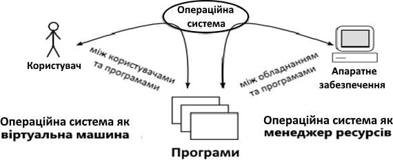
Так, наприклад, при роботі з диском програмістові, що пише додаток для роботи під управлінням ОС, або кінцевому користувачеві ОС досить представляти його у вигляді деякого набору файлів, кожен з яких має ім’я. Послідовність дій при роботі з файлом полягає в його відкритті, виконанні однієї або декількох операцій читання або запису, а потім в закритті файлу.
Такі деталі, як використовувана при записі частотна модуляція або поточний стан двигуна механізму переміщення магнітних головок читання/запису, не повинні хвилювати програміста. Саме операційна система приховує від програміста велику частину особливостей апаратури і надає можливість простої і зручної роботи з необхідними файлами.
Якби програміст працював безпосередньо з апаратурою комп’ютера, без участі ОС, то для організації читання блоку даних з диска програмістові довелося б використати більше десятка команд з вказівкою певної кількості параметрів: номера блоку на диску, номера сектора на доріжці і т. п. А після завершення операції обміну з диском він повинен був би передбачити у своїй програмі аналіз результату виконаної операції.
Враховуючи, що контролер диска здатний розпізнавати більше двадцяти різних варіантів завершення операції, можна вважати програмування обміну з диском на рівні апаратури не найтривіальнішим завданням. Не менш обтяжливою виглядає і робота користувача, якби йому для читання файлу з терміналу потрібно було задавати числові адреси доріжок і секторів.
Операційна система позбавляє програмістів не лише від необхідності безпосередньо працювати з апаратурою дискового накопичувача, надаючи їм простий файловий інтерфейс, але і бере на себе усі інші рутинні операції, пов’язані з управлінням іншим апаратним обладнанням комп’ютера: фізичною пам’яттю, таймерами, принтерами тощо.
У результаті реальна машина, що здатна виконувати тільки невеликий набір елементарних дій, які визначаються її системою команд, перетворюється на віртуальну машину, що виконує широкий набір набагато потужніших функцій. Віртуальна машина теж управляється командами, але це вже команди іншого, вищого рівня: видалити файл з певним ім’ям, запустити на виконання деяку прикладну програму, підвищити пріоритет завдання, вивести текст з файлу на друк. Таким чином, призначення ОС полягає в наданні користувачеві/програмістові деякої розширеної віртуальної машини, яку легше програмувати і з якою легше працювати, чим безпосередньо з апаратурою, що становить реальний комп’ютер.
ОС як диспетчер ресурсів
Операційна система не лише надає користувачам і програмістам зручний інтерфейс до апаратних засобів комп’ютера, але і є механізмом, що розподіляє ресурси комп’ютера.
До числа основних ресурсів сучасних обчислювальних систем можуть бути віднесені такі ресурси: процесори, основна пам’ять, таймери, набори даних, диски, принтери, мережеві пристрої і деякі інші. Ресурси розподіляються між процесами. Процес (завдання) є базовим поняттям більшості сучасних ОС і часто коротко визначається як програма в стадії виконання. Програма – це статичний об’єкт, що є файлом з кодами і даними. Процес – це динамічний об’єкт, який виникає в операційній системі після того, як користувач або сама операційна система вирішує «запустити програму на виконання», тобто створити нову одиницю обчислювальної роботи.
У багатьох сучасних ОС для позначення мінімальної одиниці роботи ОС використовують термін «потік», або «нитка», при цьому змінюється суть терміну «процес». Детальніше це ми розглянемо пізніше. В інших розділах ми будемо дотримуватися спрощеного тлумачення, відповідно до якого для позначення програми, що виконуєтся, тільки термін «процес».
Управління ресурсами обчислювальної системи з метою найефективнішого їх використання є основним призначенням операційної системи. Наприклад, мультипрограмна операційна система організовує одночасне виконання відразу декількох процесів на одному комп’ютері, по черзі перемикаючи процесор з одного процесу на інший, виключаючи простої процесора, що викликаються зверненнями процесів до введення-виведення. ОС також відстежує і розв’язує конфлікти, що виникають при зверненні декількох процесів до одного і того ж пристрою введення-виведення або до одних і тих же даних. Критерій ефективності, відповідно до якого ОС організовує управління ресурсами комп’ютера, може бути різним. Наприклад, в одних системах важливий такий критерій, як пропускна спроможність обчислювальної системи, в інших – час її реакції. Відповідно до вибраного критерію ефективності операційні системи по-різному організовують обчислювальний процес.
Управління ресурсами включає розв’язання наступних загальних, не залежних від типу ресурсу, задач:
- планування ресурсу – тобто визначення, якому процесу, коли і в якій кількості (якщо ресурс може виділятися частинами) слід виділити цей ресурс;
- задоволення запитів на ресурси;
- відстежування стану і облік використання ресурсу, тобто підтримка оперативної інформації про те, зайнятий чи вільний ресурс, і яка доля ресурсу вже розподілена;
- розв’язання конфліктів між процесами.
Для розв’язання цих загальних задач управління ресурсами різні ОС використовують різні алгоритми, особливості яких і визначають вигляд ОС в цілому, включаючи характеристики продуктивності, сферу застосування і навіть призначений для користувача інтерфейс. Наприклад, вживаний алгоритм управління процесором значною мірою визначає чи може ОС використовуватися як система розподілу часу, система пакетної обробки або система реального часу. Задача організації ефективного спільного використання ресурсів декількома процесами є дуже складне, і ця складність породжується в основному випадковим характером виникнення запитів на споживання ресурсів. У мультипрограмній системі утворюються черги заявок від одночасно виконуваних програм до розподілених ресурсів комп’ютера: процесора, сторінки пам’яті, до принтера, до диска. Операційна система організовує обслуговування цих черг за різними алгоритмами: в порядку вступу, на основі пріоритетів, кругового обслуговування тощо.
Таким чином, управління ресурсами складає важливу частину функцій будь-якої операційної системи, особливо мультипрограмної. Більшість функцій управління ресурсами виконуються операційною системою автоматично і прикладному програмістові недоступні.
Управління процесами
Найважливішою частиною операційної системи, що безпосередньо впливає на функціонування обчислювальної машини, є підсистема управління процесами. Для кожного новостворюваного процесу ОС генерує системні інформаційні структури, які містять дані про потреби процесу в ресурсах обчислювальної системи, а також про фактично виділені йому ресурси.
Щоб виконати процес, операційна система повинна призначити йому область оперативної пам’яті, в якій будуть розміщені коди і дані процесу, а також надати йому необхідну кількість процесорного часу. Крім того, процесу може знадобитися доступ до таких ресурсів, як файли і пристрої введення-виведення. В інформаційні структури процесу часто включаються допоміжні дані, що характеризують історію перебування процесу в системі. Наприклад, яку частку часу процес витратив на операції введення-виведення, а яку на обчислення, його поточний стан (активний або заблокований), міра привілейованості процесу (значення пріоритету). Дані такого роду можуть враховуватися операційною системою при ухваленні рішення про надання ресурсів процесу.
У мультипрограмній операційній системі одночасно може існувати декілька процесів. Частина процесів породжується за ініціативою користувачів та їх додатків. Такі процеси називають призначеними для користувача. Інші процеси, що називаються системними, ініціалізувалися самою операційною системою для виконання своїх функцій.
Оскільки процеси часто одночасно претендують на одні і ті ж ресурси, то в обов’язки ОС входить підтримка черг заявок процесів на ресурси, наприклад, черги до процесора, до принтера, до послідовного порту.
Важливим завданням операційної системи є захист ресурсів, що виділені цьому процесу, від інших процесів. Одним з ресурсів процесу, що найретельніше захищаються, є області оперативної пам’яті, в якій зберігаються коди і дані процесу. Сукупність усіх областей оперативної пам’яті, що виділені операційною системою процесу, називається його адресним простором. Говорять, що кожен процес працює у своєму адресному просторі, маючи на увазі захист адресних просторів, який здійснюється ОС. Захищаються і інші типи ресурсів, такі як файли, зовнішні пристрої тощо. ОС може не лише захищати ресурси, що виділені одному процесу, але і організовувати їх спільне використання, наприклад, дозволяти доступ до деякої області пам’яті декільком процесам.
Упродовж періоду існування процесу його виконання може бути багаторазово перерване і продовжене. Для того щоб відновити виконання процесу, необхідно відновити стан його операційного середовища. Стан операційного середовища ідентифікується станом регістрів і програмного лічильника, режимом роботи процесора, покажчиками на відкриті файли, інформацією про незавершені операції введення-виведення, кодами помилок виконуваних цим процесом системних викликів тощо. Ця інформація називається контекстом процесу. Говорять, що при зміні процесу відбувається перемикання контекстів.
Операційна система бере на себе також функції синхронізації процесів, що дозволяють процесу призупиняти своє виконання до настання якої-небудь події в системі, наприклад, завершення операції введення-виведення, здійснюється за її запитом операційній системою.
Для реалізації складних програмних комплексів корисно буває організувати їх роботу у вигляді декількох паралельних процесів, які періодично взаємодіють один з одним і обмінюються деякими даними. Оскільки ОС захищає ресурси процесів і не дозволяє одному процесу писати в пам’ять або читати з пам’яті іншого процесу, то для оперативної взаємодії процесів ОС повинна надавати особливі засоби, які називають засобами міжпроцесної взаємодії.
Таким чином, підсистема управління процесами планує виконання процесів, тобто розподіляє процесорний час між декількома одночасно існуючими в системі процесами, займається створенням і знищенням процесів, забезпечує процеси необхідними системними ресурсами, підтримує синхронізацію процесів, а також забезпечує взаємодію між процесами.
Управління пам’яттю
Пам’ять для процесу є таким же важливим ресурсом, як і процесор, оскільки процес може виконуватися процесором тільки в тому випадку, якщо його коди і дані (не обов’язково всі) знаходяться в оперативній пам’яті.
Управління пам’яттю включає розподіл наявної фізичної пам’яті між усіма існуючими в системі в даний момент процесами, завантаження кодів і цих процесів у відведені їм області пам’яті, налаштування адресно-залежних частин кодів процесу на фізичні адреси виділеної області, а також захист областей пам’яті кожного процесу.
Існує велика різноманітність алгоритмів розподілу пам’яті. Вони можуть відрізнятися, наприклад, кількістю областей пам’яті, що виділяються процесу. В одних випадках пам’ять виділяється процесу у вигляді однієї безперервної області, а в інших – у вигляді декількох несуміжних областей. У деяких системах розподіл пам’яті здійснюється сторінками фіксованого розміру, а в інших – сегментами змінної довжини.
Одним з найпопулярніших способів управління пам’яттю в сучасних операційних системах є так звана віртуальна пам’ять. Наявність в ОС механізму віртуальної пам’яті дозволяє програмістові писати програму так, ніби в його розпорядженні є однорідна оперативна пам’ять великого об’єму, що часто істотно перевищує об’єм наявної фізичної пам’яті. Насправді усі дані, що використовуються програмою, зберігаються на диску і при необхідності частинами (сегментами або сторінками) відображаються у фізичну пам’ять.
При переміщенні кодів і даних між оперативною пам’яттю і диском підсистема віртуальної пам’яті виконує трансляцію віртуальних адрес, отриманих в результаті компіляції і компонування програми, у фізичні адреси елементів оперативної пам’яті. Захист пам’яті – це вибіркова здатність оберігати виконуване завдання від запису або читання пам’яті, призначеної іншому завданню. Правильно написані програми не намагаються звертатися до пам’яті, призначеної іншим процесам. Проте реальні програми часто містять помилки, в результаті яких такі спроби іноді робляться. Засоби захисту пам’яті, які реалізовані в операційній системі, повинні забороняти несанкціонований доступ процесів до чужих областей пам’яті.
Таким чином, функціями ОС з управління пам’яттю є: відстежування вільної і зайнятої пам’яті; виділення пам’яті процесам і звільнення пам’яті при завершенні процесів; захист пам’яті; витіснення процесів з оперативної пам’яті на диск, а також налаштування адрес програми на конкретну область фізичної пам’яті.
Управління файлами і зовнішніми пристроями
Здатність ОС до «екранування» складнощів реальної апаратури дуже яскраво проявляється в одній з основних підсистем ОС – файловій системі. Операційна система віртуалізує окремий набір даних, що зберігаються на зовнішньому накопичувачі, у вигляді файлу – простої неструктурованої послідовності байтів, що має символьне ім’я. Для зручності роботи з даними файли групуються в каталоги, які, у свою чергу, утворюють групи – каталоги вищого рівня. Користувач може за допомогою ОС виконувати над файлами і каталогами такі дії, як пошук за іменем, видалення, виведення вмісту на зовнішній пристрій (наприклад, на дисплей), зміну і збереження вмісту.
Файлова система ОС виконує перетворення символьних імен файлів, з якими працює користувач або прикладний програміст, у фізичні адреси даних на диску, організовує спільний доступ до файлів, захищає їх від несанкціонованого доступу.
При виконанні своїх функцій файлова система тісно взаємодіє з підсистемою управління зовнішніми пристроями, яка за запитами файлової системи здійснює передачу даних між дисками і оперативною пам’яттю.
Підсистема управління зовнішніми пристроями, що називається також підсистемою введення-виведення, виконує роль інтерфейсу до усіх пристроїв, підключених до комп’ютера. Спектр цих пристроїв дуже великий. Номенклатура накопичувачів, що випускаються, на жорстких, гнучких і оптичних дисках, принтерів, сканерів, моніторів, плотерів, модемів, мережевих адаптерів і більше спеціальних облаштувань введення-виведення, таких як, наприклад, аналого- цифрові перетворювачі, може налічувати сотні моделей. Ці моделі можуть істотно відрізнятися набором і послідовністю команд, за допомогою яких здійснюється обмін інформацією з процесором і пам’яттю комп’ютера, швидкістю роботи, кодуванням передаваних даних, можливістю спільного використання і певною кількістью інших деталей.
Програма, що управляє конкретною моделлю зовнішнього пристрою і враховує усі його особливості, називається драйвером цього пристрою (від англійського drive – управляти, вести). Драйвер може управляти єдиною моделлю пристрою, наприклад модемом U-1496E компаній ZyXEL, або ж групою пристроїв певного типу. Для користувача дуже важливо, щоб операційна система включала якомога більше різноманітних драйверів, оскільки це гарантує можливість підключення до комп’ютера великого числа зовнішніх пристроїв різних виробників. Від наявності відповідних драйверів багато в чому залежить успіх операційної системи на ринку. Наприклад, відсутність багатьох необхідних драйверів зовнішніх пристроїв була однією з причин низької популярності OS/2. Створенням драйверів пристроїв займаються як розробники конкретної ОС, так і фахівці компаній, що випускають зовнішні пристрої. Операційна система повинна добре підтримувати певний інтерфейс між драйверами і іншою частиною ОС, щоб розробники з компаній-виробників пристроїв введення- виведення могли поставляти разом зі своїми пристроями драйвери для цієї операційної системи.
Прикладні програмісти можуть користуватися інтерфейсом драйверів при розробці своїх програм. Але це не дуже зручно – такий інтерфейс є низькорівневими операціями, обтяженими великою кількістю деталей.
Підтримка високорівневого уніфікованого інтерфейсу прикладного програмування до різнорідних пристроїв введення-виведення є одним з найважливіших завдань ОС. З часу появи ОС UNIX такий уніфікований інтерфейс у більшості ОС будується на основі концепції файлового доступу. Ця концепція полягає в тому, що обмін з будь-яким зовнішнім пристроєм виглядає як обмін з файлом, що має ім’я і є неструктурованою послідовністю байтів. Файлом може виступати як реальний файл на диску, так і алфавітно-цифровий термінал, друкуючий пристрій або мережевий адаптер.
Захист даних і адміністрування
Безпека даних обчислювальної системи забезпечується засобами відмовостійкості ОС, спрямованими на захист від збоїв і відмов апаратури і помилок програмного забезпечення, а також засобами захисту від несанкціонованого доступу.
Першою при захисті даних від несанкціонованого доступу є процедура логічного входу. ОС повинна переконатися, що до системи намагається увійти користувач, вхід якого дозволений адміністратором. Функції захисту ОС взагалі дуже тісно пов’язані з функціями адміністрування, оскільки саме адміністратор визначає права користувачів при їх зверненні до різних ресурсів системи – файлів, каталогів, принтерів, сканерам тощо. Крім того, адміністратор обмежує можливості користувачів у виконанні тих або інших системних дій.
Наприклад, користувачеві може бути заборонено виконувати процедуру завершення роботи ОС, встановлювати системний час, завершувати чужі процеси, створювати облікові записи користувачів, змінювати права доступу до деяких каталогів і файлів. Адміністратор може також урізувати можливості інтерфейсу користувача, прибравши, наприклад, деякі пункти з меню операційної системи, що виводиться на дисплей користувача.
Важливим засобом захисту даних є функції аудиту ОС, що полягають у фіксації усіх подій, від яких залежить безпека системи. Наприклад, спроби вдалого і невдалого логічного входу в систему, операції доступу до деяких каталогів і файлів, використання принтерів тощо. Список подій, які необхідно відстежувати, визначає адміністратор ОС.
Підтримка відмовостійкості реалізується ОС, як правило, на основі резервування. Найчастіше у функції ОС входить підтримка декількох копій даних на різних дисках або різних дискових накопичувачах. Резервуються також принтери і інші пристрої введення-виведення. При відмові одного з надлишкових пристроїв ОС повинна швидко і прозорим для користувача способом зробити реконфігурацію системи і продовжити роботу з резервним пристроєм. Особливим випадком забезпечення відмовостійкості є використання декількох процесорів, тобто мультипроцесування, коли система продовжує роботу при відмові одного з процесорів. Підтримка відмовостійкості входить в обов’язки системного адміністратора. До складу ОС входять утиліти, що дозволяють адміністраторові виконувати регулярні операції резервного копіювання для забезпечення швидкого відновлення важливих даних.
Інтерфейс прикладного програмування
Прикладні програмісти використовують у своїх додатках звернення до ОС, коли для виконання тих або інших дій їм потрібен особливий статус, який має тільки операційна система. Наприклад, у більшості сучасних ОС усі дії, які пов’язані з управлінням апаратними засобами комп’ютера, може виконувати тільки ОС. Окрім цих функцій прикладний програміст може скористатися набором сервісних функцій ОС, які спрощують написання додатків. Функції такого типу реалізують універсальні дії, що часто вимагаються в різних додатках, такі, наприклад, як обробка текстових рядків. Ці функції могли б бути виконані і самим додатком, проте набагато простіше використати вже готові, відлагоджені процедури, включені до складу операційної системи. В той же час навіть за наявності в ОС відповідної функції програміст може реалізувати її самостійно в рамках додатка, якщо запропонований операційною системою варіант його не цілком влаштовує.
Можливості операційної системи, що доступні прикладному програмістові у вигляді набору функцій, називаються інтерфейсом прикладного програмування (Application Programming Interface, API). Від кінцевого користувача ці функції приховані за оболонкою алфавітно-цифрового або графічного інтерфейсу користувача.
Для розробників додатків усі особливості конкретної операційної системи представлені особливостями її API. Тому операційні системи з різною внутрішньою організацією, але з однаковим набором функцій API, здаються нам однією і тією ж ОС, що спрощує стандартизацію операційних систем і забезпечує переносимість додатків між різними ОС, такими, що відповідають певному стандарту на API.
Наприклад, наслідування загальних стандартів API UNIX, одним з яких є стандарт Posix (Portable Operating System Interface – Інтерфейс переносимих операційних систем), дозволяє говорити про деяку узагальнену операційну систему UNIX, хоча численні версії цієї ОС від різних виробників іноді істотно відрізняються внутрішньою організацією.
Додатки виконують звернення до функцій API за допомогою системних викликів. Спосіб, яким додаток отримує послуги операційної системи, дуже схожий на виклик підпрограм. Інформація, яка потрібна ОС і яка складається з ідентифікатора команди і даних, поміщається в певне місце пам’яті, в регістри і/або стек. Потім управління передається операційній системі, яка виконує необхідну функцію і повертає результати через пам’ять, регістри або стеки. Якщо операція проведена не успішно, то результат включає індикацію помилки.
Інтерфейс користувача
Операційна система повинна забезпечувати зручний інтерфейс не лише для застосовних програм, але і для людини, працюючої за терміналом. Ця людина може бути кінцевим користувачем, адміністратором ОС або програмістом.
У ранніх операційних системах пакетного режиму функції інтерфейсу користувача були зведені до мінімуму і не вимагали наявності терміналу. Команди мови управління завданнями набивалися на перфокарти, а результати виводилися на друкуючий пристрій.
Сучасні ОС підтримують розвинені функції інтерфейсу користувача для інтерактивної роботи за терміналами двох типів: алфавітно-цифровими і графічними.
При роботі за алфавітно-цифровим терміналом користувач має у своєму розпорядженні систему команд, потужність яких відображає функціональні можливості цієї ОС. Командна мова ОС дозволяє запускати і зупиняти додатки, виконувати різні операції з файлами і каталогами, отримувати інформацію про стан ОС (кількість працюючих процесів, об’єм вільного простору на дисках тощо), адмініструвати систему. Команди можуть вводитися не лише в інтерактивному режимі з терміналу, але і прочитуватися з так званого командного файлу, що містить деяку послідовність команд.
Програмний модуль ОС, відповідальний за читання окремих команд або послідовності команд з командного файлу, іноді називають командним інтерпретатором.
Введення команди може бути спрощене, якщо операційна система підтримує графічний інтерфейс користувача. В цьому випадку користувач для виконання потрібної дії за допомогою миші вибирає на екрані потрібний пункт меню або графічний символ.
Можливості розвитку ОС
Більшість ОС постійно розвиваються. Для цього є цілий ряд причин.
- Оновлення і виникнення нових видів апаратного забезпечення. Наприклад, ранні версії ОС UNІХ не використали механізму сторінкової організації пам’яті, оскільки вони функціонували на комп’ютерах, які не були забезпечені відповідною апаратною підтримкою. Наступне покоління ОС були допрацьовані так, щоб вони могли використати нові апаратні можливості.
- Нові сервіси і можливості. Прикладом може бути підтримка нових додатків, які використовують вікна на екрані дисплея. Ця можливість спричинила за собою значне оновлення ОС.
- Виправлення. У кожній ОС є помилки. Час від часу вони виявляються і виправляються. Необхідність внесення регулярних змін в ОС накладає певні вимоги до їх структури. Ці системи повинні мати модульну структуру з певною взаємодією модулів.
Компоненти комп’ютерної системи
Щоб краще зрозуміти місце і роль операційної системи в процесі обчислень, розглянемо комп’ютерну систему в цілому. Вона складається з таких компонент.
- Апаратура (hardware) комп’ютера, до основних частин якої належать:
- центральний процесор (Central Processor Unit – CPU), що виконує команди (інструкції) комп’ютера;
- пам’ять (memory), що зберігає дані і програми;
- пристрої введення-виведення, або зовнішні пристрої (input-output devices, I/O devices), що забезпечують введення інформації в комп’ютер і виведення результатів роботи програм у формі, що сприймається користувачем- людиною або іншими програмами.
- Операційна система – системне програмне забезпечення, що управляє використанням апаратури комп’ютера, різними програмами і користувачами.
- Прикладне програмне забезпечення (applications software) – програми, призначені для розв’язання різних класів задач. До них належать, зокрема:
- компілятори, що забезпечують трансляцію програм з мов програмування в машинний код;
- системи управління базами даних (СУБД);
- графічні бібліотеки, ігрові програми, офісні програми.
- Прикладне програмне забезпечення утворює наступний, вищий рівень, в порівнянні з операційною системою, і дозволяє розв’язувати на комп’ютері різні прикладні і повсякденні задачі.
- Користувачі (users) – люди та інші комп’ютери. Віднесення користувача-людини до компонент комп’ютерної системи – це реальність, оскільки будь-який користувач фактично стає частиною обчислювальної системи в процесі своєї роботи на комп’ютері.
Одна з важливих функцій ОС якраз і полягає в тому, щоб позбавити користувача від більшої частини такої рутинної роботи (наприклад, резервного копіювання файлів) і дозволити йому зосередитися на творчій роботі.
Класифікація ОС
Операційні системи можуть відрізнятися особливостями реалізації внутрішніх алгоритмів управління основними ресурсами комп’ютера (процесорами, пам’яттю, пристроями), особливостями використаних методів проектування, типами апаратних платформ, областями використання і багатьма іншими властивостями. Нижче приведена класифікація ОС за декількома основними ознаками.
Особливості алгоритмів управління ресурсами
Від ефективності алгоритмів управління локальними ресурсами комп’ютера багато в чому залежить ефективність усієї ОС в цілому. Тому, характеризуючи ОС, часто наводять найважливіші особливості реалізації функцій ОС з управління процесорами, пам’яттю, зовнішніми прстроями автономного комп’ютера. Так, наприклад, залежно від особливостей використаного алгоритму управління процесором, операційні системи ділять на багатозадачні, розраховані на багато користувачів і однозадачні, розраховані на одного користувача, на системи, що підтримують багатопотокову обробку і не підтримують її, на багатопроцесорні і однопроцесорні системи.
Підтримка багатозадачності. За числом одночасно виконуваних завдань операційні системи можуть бути розділені на два класи:
- Однозадачні (наприклад, MS-DOS).
- Багатозадачні (OC EC, OS/2, UNIX, Windows 9х).
Однозадачні ОС, в основному, виконують функцію надання користувачеві віртуальної машини, роблячи простішим і зручнішим процес взаємодії користувача з комп’ютером.
Багатозадачні ОС, окрім вищеперелічених функцій, управляють розподілом спільно використовуваних ресурсів, таких як процесор, оперативна пам’ять, файли і зовнішні пристрої.
Підтримка режиму, розрахованого на багато користувачів. По числу одночасно працюючих користувачів ОС діляться на:
- Розраховані на одного користувача (MS-DOS, Windows 3.x, ранні версії OS/2).
- Розраховані на багато користувачів (UNIX, Windows NT).
Головною відмінністю систем, розрахованих на багато користувачів, від систем, розрахованих на одного користувача, є наявність засобів захисту інформації кожного користувача від несанкціонованого доступу інших користувачів. Слід зауважити, що не всяка багатозадачна ОС може бути розрахованою на багато користувачів, і не всяка ОС, розрахована на одного користувача, є однозадачною.
Витісняюча і невитісняюча багатозадачність. Найважливішим розподіленим ресурсом є процесорний час. Спосіб розподілу процесорного часу між декількома одночасно існуючими в системі процесами (чи потоками) багато в чому визначає специфіку ОС. Серед множини існуючих варіантів реалізації багатозадачності можна виділити дві групи алгоритмів:
- Невитісняюча багатозадачність (NetWare, Windows 3.x).
- Витісняюча багатозадачність (Windows NT, OS/2, UNIX).
Основною відмінністю між витісняючими і не витісняючими варіантами багатозадачності є міра централізації механізму планування процесів. У першому випадку механізм планування процесів цілком зосереджений в операційній системі, а в другому – розподілений між системою і прикладними програмами.
При невитісняючій багатозадачності активний процес виконується до тих пір, поки він сам, за власною ініціативою, не віддасть управління операційній системі для того, щоб та вибрала з черги інший готовий до виконання процес.
При витісняючій багатозадачності рішення про перемикання процесора з одного процесу на інший приймається операційною системою, а не самим активним процесом.
Підтримка багатопоточності. Важливою властивістю операційних систем є можливість розпаралелювання обчислень у рамках одного завдання. Багатопотокова ОС розподіляє процесорний час не між задачами, а між їх окремими гілками (потоками, нитками).
Багатопроцесорна обробка. Іншою важливою властивістю ОС є відсутність або наявність в ній засобів підтримки багатопроцесорної обробки – мультипроцесування. Мультипроцесування призводить до ускладнення всіх алгоритмів управління ресурсами. Такі функції є в операційних системах Solaris 2.x фірми Sun, OS/2 фірми IBM, Windows NT фірми Microsoft.
Особливості апаратних платформ
На властивості операційної системи безпосередній вплив роблять апаратні засоби, на які вона орієнтована. За типом апаратури відрізняють операційні системи персональних комп’ютерів, міні-комп’ютерів, мейнфреймів, кластерів.
Кластер – слабко зв’язана сукупність декількох обчислювальних систем, що представляються користувачеві єдиною системою, і працюють спільно для виконання загальних додатків. Серед перерахованих типів комп’ютерів можуть зустрічатися як однопроцесорні варіанти, так і багатопроцесорні. У будь-якому випадку специфіка апаратних засобів, як правило, відображається на специфіці операційних систем.
Особливості областей використання
Багатозадачні ОС підрозділяються на три типи відповідно до використаних при їх розробці критеріїв ефективності:
- Системи пакетної обробки (наприклад, OC EC, IBM/360).
- Системи розподілу часу (UNIX, WinXP).
- Системи реального часу (QNX фірми Quantum Software systems, RT-11 для міні-комп’ютерів PDP-11).
Системи пакетної обробки призначалися для розв’язання задач в основному обчислювального характеру, що не вимагають швидкого отримання результатів. Головною метою і критерієм ефективності систем пакетної обробки є максимальна пропускна спроможність, тобто розв’язок максимального числа завдань в одиницю часу (ОС ЄС, IBM/360).
Системи розподілу часу покликані виправити основний недолік систем пакетної обробки – ізоляцію користувача-програміста від процесу виконання його завдань. Кожному користувачеві системи розподілу часу надається термінал, з якого він може вести діалог зі своєю програмою. Оскільки в системах розподілу часу кожному завданню виділяється тільки квант процесорного часу, жодне завдання не займає процесор надовго, і час відповіді виявляється прийнятним.
Якщо квант вибраний досить невеликим, то в усіх користувачів, одночасно працюючих на одній і тій же машині, складається враження, що кожен з них одноосібно використовує машину. Ясно, що системи розподілу часу мають меншу пропускну спроможність, чим системи пакетної обробки, оскільки на виконання приймається кожне запущене користувачем завдання, а не те, яке «вигідне» системі, і, крім того, є накладні витрати обчислювальної потужності на частіше перемикання процесора із задачі на задачу. Критерієм ефективності систем розподілу часу є не максимальна пропускна спроможність, а зручність і ефективність роботи користувача (UNIX, WinXP).
Системи реального часу застосовуються для управління різними технічними об’єктами, такими, наприклад, як верстат, супутники тощо. В усіх цих випадках існує гранично допустимий час, впродовж якого має бути виконана та або інша програма, що управляє об’єктом. Інакше може статися аварія: супутник вийде із зони видимості, експериментальні дані, що поступають з датчиків, будуть втрачені. Таким чином, критерієм ефективності для систем реального часу є їх здатність витримувати заздалегідь задані інтервали часу між запуском програми і отриманням результату. Цей час називається часом реакції системи, а відповідна властивість системи – реактивністю. Для цих систем мультипрограмна суміш є фіксованим набором заздалегідь розроблених програм, а вибір програми на виконання здійснюється виходячи з поточного стану об’єкту.
Вбудовані ОС. До них належать управляючі програми для різних мікропроцесорних систем, які використовуються у військовій техніці, в побутовій електроніці, смарт-картах тощо. Вбудовані ОС розробляються під конкретний пристрій. До таких систем належить Embedded Linux і Windows CE.
Особливості методів побудови
При опису операційної системи часто вказуються особливості її структурної організації і основні концепції, що покладені в її основу. До таких базових концепцій належать перелічені нижче.
Способи побудови ядра системи – монолітне ядро чи мікроядро. Більшість ОС використовують монолітне ядро, яке компонується як одна програма, працююча в привілейованому режимі, і яка використовує швидкі переходи з однієї процедури на іншу, не вимагаючи перемикання з привілейованого режиму в режим користувача і навпаки.
Альтернативою є побудова ОС на базі мікроядра. Мікроядро працює в привілейованому режимі і виконує тільки мінімум функцій з управління апаратурою. Функції ОС вищого рівня виконують спеціалізовані компоненти ОС сервери, працюючі в режимі користувача. При такій побудові ОС працює повільніше, оскільки часто виконуються переходи між привілейованим режимом і режимом користувача. Зате система виходить гнучкішою – її функції можна нарощувати, модифікувати або звужувати, додаючи, модифікуючи або виключаючи сервери режима користувача. Крім того, сервери добре захищені один від одного, як і будь-які процеси користувача.
Побудова ОС на базі об’єктно-орієнтованого підходу дає можливість використати всі його переваги, що добре зарекомендували себе на рівні додатків, усередині операційної системи, до яких можна віднести:
- акумуляцію вдалих рішень у формі стандартних об’єктів;
- можливість створення нових об’єктів на базі наявних за допомогою механізму спадкоємства;
- хороший захист даних за рахунок їх інкапсуляції у внутрішні структури об’єкту, що робить дані недоступними для несанкціонованого використання ззовні.
Наявність декількох операційних (прикладних) середовищ дає можливість у рамках однієї ОС одночасно виконувати додатки, розроблені для декількох ОС. Багато сучасних ОС підтримують одночасно прикладні середовища MS-DOS, Windows, UNIX, OS/2 або хоч би деякої підмножини з цього популярного набору. Концепція множинних прикладних середовищ найпростіше реалізується в ОС на базі мікроядра, над яким працюють різні сервери, частину яких реалізує прикладне середовище тієї або іншої ОС.
Розподілена організація ОС дозволяє спростити роботу користувачів і програмістів в мережевих середовищах. У розподіленій ОС реалізовані механізми, які дають можливість користувачеві представляти мережу у вигляді традиційного однопроцесорного комп’ютера. Ознаками розподіленої організації ОС є: наявність єдиної довідкової служби розподілу ресурсів, єдиної служби часу, багатопотокової обробки, що дозволяє розпаралелювати обчислення в рамках одного завдання і виконувати це завдання відразу на декількох комп’ютерах мережі.
Контрольні питання до розділу
- Який комплекс управляючих і обробляючих програмних засобів розуміють під операційною системою?
- Дайте визначення операційного середовища.
- Назвіть основні функції операційних систем.
- Дайте визначення ОС як віртуальної машини.
- Назвіть основні функції ОС як диспетчера ресурсів.
- Які ресурси повинна призначити ОС процесу, щоб він міг бути виконаний?
- Сукупність яких ресурсів називають адресним простором процесу?
- Яка інформація належить до контексту процесу?
- Перчисліть основні функції підсистеми управління пам’яттю.
- Перечисліть основні функції підсистеми управління файлами і зовнішніми пристроями.
- Дайте визначення інтерфейсу прикладного програмування (API).
- Що таке стандарт Posix?
- За якими основними ознаками класифікують ОС?
- Що таке витісняюча і невитісняюча багатозадачність?
- Назвіть особливості методів побудови ОС.
- Операційні системи управляють тільки апаратними засобами? (Так, Ні)
- Чи вірно, що основним завданням операційних систем є організація зручного інтерфейсу користувача? (Так, Ні)
Тести
- Одна операційна система може підтримувати декілька:
- мікропрограмних середовищ;
- операційних систем;
- операційних середовищ;
- мікропрограмних систем.
- Інтерфейс прикладного програмування призначений для використання прикладними програмами:
- системних ресурсів комп’ютера;
- інтерпретатора команд користувача;
- регістрів загального призначення процесора;
- адресного простору процесу.
- Операційна система належить до:
- прикладного програмного забезпечення;
- системного програмного забезпечення;
- інструментального програмного забезпечення.
- Операційною системою називається:
- програма управління операціями користувача;
- програмне середовище з графічним інтерфейсом;
- прикладна програма, призначена для виконання специфічних функцій;
- система, що надає користувачеві інтерфейс до ПК і управляє його ресурсами.
- Цілі операційної системи:
- забезпечити зручність, ефективність, надійність і безпеку використання комп’ютерного устаткування, зовнішніх пристроїв і призначених для користувача програм;
- забезпечити зберігання і резервне копіювання даних користувача;
- забезпечити ефективне і швидке досягнення користувачем своїх професійних цілей з використанням зручних і надійних апаратних і програмних інструментів.
- Комплекс системних управляючих і оброблювальних програм, призначених для ефективного використання усіх ресурсів обчислювальної системи і зручності роботи з нею, називається:
- операційним середовищем;
- управлячим середовищем;
- операційною системою.
- У мікроядерній ОС функції ОС вищого рівня виконують спеціалізовані компоненти ОС:
- утиліти;
- сервери;
- мікроядро.
СУЧАСНІ ТЕХНОЛОГІЇ ПРОЕКТУВАННЯ ОС
Операційна система є серцевиною програмного забезпечення, вона створює середовище для виконання додатків і багато в чому визначає, які корисні для користувача властивості матимуть ці додатки. У зв’язку з цим розглянемо вимоги, яким повинна задовольняти сучасна ОС.
Вимоги, що пред’являються до операційної системи
Очевидно, що головною вимогою, що пред’являється до операційної системи, є здатність виконання основних функцій: ефективного управління ресурсами і забезпечення зручного інтерфейсу для користувача і прикладних програм. Сучасна ОС, як правило, повинна реалізовувати мультипрограмну обробку, віртуальну пам’ять, свопінг, підтримувати багатовіконний інтерфейс, а також виконувати багато інших, абсолютно необхідних функцій.
Окрім цих вимог функціональної повноти до операційних систем пред’являються не менш важливі експлуатаційні і ринкові вимоги, які наведені нижче.
Розширюваність. Код ОС має бути написаний так, щоб можна було легко внести доповнення і зміни, якщо це знадобиться, і не порушити цілісність системи.
Переносимість. Код ОС повинен легко переноситися з процесора одного типу на процесор іншого типу і з апаратної платформи одного типу на апаратну платформу іншого типу.
Надійність і відмовостійкість. Система має бути захищена як від внутрішніх, так і від зовнішніх помилок, збоїв і відмов. Її дії мають бути завжди передбачуваними, а додатки не зможуть завдавати шкоди ОС. Надійність і відмовостійкість ОС передусім визначаються архітектурними рішеннями, покладеними в її основу, а також якістю її реалізації. Крім того, важливо, чи включає ОС програмну підтримку апаратних засобів забезпечення відмовостійкості, таких, наприклад, як дискові масиви або джерела безперебійного живлення.
Сумісність. ОС повинна мати засоби для виконання прикладних програм, написаних для інших операційних систем. Крім того, призначений для користувача інтерфейс має бути сумісний з існуючими системами і стандартами.
Захист інформації і безпека. ОС повинна мати засоби захисту ресурсів одних користувачів від інших.
Продуктивність. Система повинна мати настільки хорошу швидкодію і час реакції, наскільки це дозволяє апаратна платформа. На продуктивність ОС впливає багато чинників, серед яких основними є архітектура ОС, різноманіття функцій, якість програмування коду, можливість виконання ОС на високопродуктивній (багатопроцесорній) платформі. Постійне зростання вимог до ОС призводить не лише до удосконалення їх архітектури, але і до нових способів їх організації. Як вже відзначалося вище, для задоволення вимог, що пред’являються до сучасної ОС, велике значення має її структурна побудова. Операційні системи пройшли тривалий шлях розвитку від монолітних систем до добре структурованих модульних систем, здатних до розвитку, розширення і легкого перенесення на нові платформи. В експериментальних і комерційних ОС були випробувані найрізноманітніші підходи і структурні елементи, більшість з яких можна об’єднати в наступні категорії:
- Архітектура ядра.
- Множинні прикладні середовища.
- Концепція віртуальних машин.
- Мережеві і розподілені ОС.
- Симетрична багатопроцесорність.
- Багатопоточність.
Розглянемо детальніше деякі з цих вимог і структурну побудову сучасних операційних систем.
Розширюваність
Тоді як апаратна частина комп’ютера застаріває за декілька років, корисне життя операційних систем може вимірюватися десятиліттями. Тому операційні системи завжди еволюційно змінюються з часом, і ці зміни значиміші, ніж зміни апаратних засобів. Зміни ОС є набуттям нею нових властивостей. Наприклад, підтримка нових пристроїв, таких як CD-ROM, можливість зв’язку з мережами нового типу, підтримка багатообіцяючих технологій, таких як графічний інтерфейс користувача або об’єктно-орієнтоване програмне оточення, використання більш ніж одного процесора. Тому збереження цілісності коду, які б зміни не вносилися в операційну систему, є головною метою розробки.
Розширюваність може досягатися за рахунок модульної структури ОС, при якій програми будуються з набору окремих модулів, що взаємодіють тільки через функціональний інтерфейс. Нові компоненти можуть бути додані в операційну систему модульним шляхом, вони виконують свою роботу, використовуючи інтерфейси, підтримувані існуючими компонентами.
Використання об’єктів для представлення системних ресурсів також покращує розширюваність системи. Об’єкти – це абстрактні типи даних, над якими можна виконувати тільки ті дії, які передбачені спеціальним набором об’єктних функцій. Об’єкти дозволяють однаково управляти системними ресурсами. Додавання нових об’єктів не руйнує існуючі об’єкти і не вимагає змін існуючого коду.
Прекрасні можливості для розширення надає підхід до структуризації ОС за типом клієнт-сервер з використанням технології мікроядра. Відповідно до цього підходу ОС будується як сукупність привілейованої програми, що управляє, і набору непривілейованих послуг-серверів. Основна частина ОС може залишатися незмінною в той час, як можуть бути додані нові сервери або удосконалені старі.
Переносимість
В ідеалі код ОС повинен легко переноситися з процесора одного типу на процесор іншого типу, і з апаратної платформи одного типу на апаратну платформу іншого типу. Переносимі ОС мають декілька варіантів реалізації для різних платформ, таку властивість ОС називають також багатоплатформністю (кросплатформністю, мультиплатформністю).
Вимога переносимості коду тісно пов’язана також з розширюваністю. Розширюваність дозволяє покращувати операційну систему, тоді як переносимість дає можливість переміщати усю систему на машину, що базується на іншому процесорі або апаратній платформі, роблячи при цьому по можливості невеликі зміни в коді. Написання переносимої ОС аналогічно написанню будь- якого переносимого коду. Для цього треба дотримуватись деяких правил.
По-перше, велика частина коду має бути написана мовою, яка є на усіх машинах, куди треба переносити систему. Це означає, що код має бути написаний на мові високого рівня, переважно стандартизованою, наприклад, на мові С. Програма, написана на асемблері, не є переносимою, якщо тільки переносити її на машину, що має командну сумісність з машиною, з якої переносять додаток.
По-друге, слід врахувати, в яке фізичне оточення програма має бути перенесена. Різна апаратура вимагає різних рішень при створенні ОС. Наприклад, ОС, побудована на 32-бітових адресах, не може бути перенесена на машину з 16-бітовими адресами (хіба що з величезними труднощами).
По-третє, важливо мінімізувати або, якщо можливо, виключити ті частини коду, які безпосередньо взаємодіють з апаратними засобами.
По-четверте, якщо код, залежний від апаратури, не може бути повністю виключений, то він має бути ізольований в декількох модулях, що добре локалізуються.
Для легкого перенесення ОС при її розробці мають бути дотримані такі вимоги:
- Переносима мова високого рівня. Більшість переносимих ОС написані на мові С (стандарт ANSI X3.159-1989). Розробники вибирають мову С тому, що вона стандартизована, і тому, що С-компілятори широко доступні. Асемблер використовується тільки для тих частин системи, які повинні безпосередньо взаємодіяти з апаратурою (наприклад, обробник переривань) або для частин, які вимагають максимальної швидкості (наприклад, цілочисельна арифметика підвищеної точності). Проте непереносний код має бути ретельно ізольований усередині тих компонентів, де він використовується.
- Ізоляція процесора. Деякі низькорівневі частини ОС повинні мати доступ до структур даних і регістрів, залежних від процесора. Проте код, який робить це, повинен міститися в невеликих модулях, які можуть бути замінені аналогічними модулями для інших процесорів.
Сумісність
Існує декілька «довгоживучих» популярних операційних систем (різновиди UNIX, MS-DOS, Windows, OS/2), для яких напрацьована широка номенклатура додатків. Деякі з них користуються широкою популярністю. Тому для користувача, що переходить з однієї ОС або на іншу апаратну платформу, дуже приваблива можливість запуску в новому середовищі звичних додатків. Якщо ОС має засоби для виконання прикладних програм, написаних для ОС, то про неї говорять, що вона має сумісність з цими ОС. Поняття сумісності включає також підтримку інтерфейсів користувача інших ОС.
Слід розділяти питання двійкової сумісності і сумісності на рівні початкових текстів додатків. Двійкова сумісність досягається в тому випадку, коли можна взяти виконувану програму і запустити її на виконання на іншій ОС. Для цього потрібні: сумісність на рівні команд процесора, сумісність на рівні системних викликів і навіть на рівні бібліотечних викликів, якщо вони є динамічно зв’язуваними.
Сумісність на рівні початкових текстів вимагає наявності відповідного компілятора в складі програмного забезпечення, а також сумісності на рівні бібліотек і системних викликів. При цьому потрібна перекомпіляція наявних початкових текстів в новий виконуваний модуль.
Сьогодні таку сумісність забезпечує стандартизація розробки ПО:
- наявність стандарту на мови програмування;
- наявність стандарту на інтерфейс операційних систем.
Роботи щодо стандартизації інтерфейсу ОС відбуваються в рамках проекту POSIX (Portable Operating System Interfice – Переносимий Інтерфейс ОС). Найважливішим стандартом є POSIX 1003.1, який описує набір бібліотечних процедур (відкриття файлу, створення нового процесу і тому подібне), які можуть бути реалізовані в системі. Цей процес стандартизації триває і в наші дні. Останньою модифікацією стандарту є базова специфікація Open Group/IEEE. Ці стандарти відображають традиційний набір засобів, реалізований в UNIX- сумісних системах.
Так, функції бібліотеки підсистеми Win32 API виконуються в режимі користувача і в режимі ядра. Наприклад, до виходу Windows NT 4.0 (1996 р.) віконна і графічна системи працювали в режимі користувача як частину процесу підсистеми Win32. Потім для підвищення продуктивності реалізацію цих підсистем було перенесено в режим ядра.
Підсистема POSIX працює в режимі користувача і реалізує набір функцій, визначених стандартом POSIX 1003.1. Оскільки додатки, написані для однієї підсистеми, не можуть використати функції інших підсистем, в POSIX- програмах не можна користуватися засобами Win32 API (зокрема, графічними і мережевими функціями), що знижує значущість цієї підсистеми. Підсистема POSIX не є обов’язковим компонентом Windows XP.
Чи має нова ОС двійкову сумісність або сумісність початкових текстів з існуючими системами, залежить від багатьох чинників. Найголовніший з них – архітектура процесора, на якому працює нова ОС. Якщо процесор, на який переноситься ОС, використовує той же набір команд (можливо з деякими доповненями) і той же діапазон адрес, тоді двійкова сумісність може бути досягнута досить просто.
Набагато складніше досягти двійкової сумісності між процесорами, заснованими на різній архітектурі. Для того щоб один комп’ютер виконував програми іншого (наприклад, DOS-програму на Mac), цей комп’ютер повинен працювати з машинними командами, які йому спочатку незрозумілі.
Виходом в таких випадках є використання так званих прикладних середовищ. Основну частину програми, як правило, складають виклики бібліотечних функцій. Прикладне середовище імітує бібліотечні функції, використовуючи заздалегідь написану бібліотеку функцій аналогічного призначення, а інші команди емулює кожну окремо за допомогою програми- емулятора.
Надійність, захист інформації і безпека
У жовтні 1988 року в США сталася подія, названа фахівцями найбільшим порушенням безпеки американських комп’ютерних систем з тих, що коли-небудь траплялися. 23-річний студент випускного курсу Коpнельского університету Роберт Таппан Моppіс запустив в комп’ютерній мережі ARPANET пpогpаму, представляючу собою різновид комп’ютерних вірусів – мережевих черв’яків. В результаті атаки був повністю або частково заблокиpований pяд загальнонаціональних комп’ютерних мереж. У результаті вірус уразив більше 6200 комп’ютерних систем по всій Амеpиці. Загальний збиток від цієї атаки був оцінений фахівцями мінімум в 100 мільйонів доларів. Р. Моppіс був виключений з університету з правом повторного вступу через рік, і засуджений судом до штрафу в 270 тис. доларів і трьох місяців ув’язнення.
Важливість вирішення проблеми інформаційної безпеки нині загальновизнана, підтвердженням чому служать гучні процеси про порушення цілісності систем. Проблема забезпечення безпеки носить комплексний характер, для її вирішення потрібне поєднання законодавчих, організаційних і програмно-технічних заходів.
Технічні засоби реалізуються програмним і апаратним забезпеченням і розв’язують різні задачі з захисту і можуть бути вбудовані в операційні системи, або можуть бути реалізовані у вигляді окремих продуктів.
Система має бути захищена як від внутрішніх, так і від зовнішніх помилок, збоїв і відмов. Її дії мають бути завжди передбачуваними, а додатки не повинні мати можливості завдавати шкоди ОС. Надійність і відмовостійкість ОС передусім визначаються архітектурними рішеннями, покладеними в її основу, а також якістю її реалізації (відлагодженого коду). Крім того, важливо, чи включає ОС програмну підтримку апаратних засобів забезпечення відмовостійкості, таких, наприклад, як дискові масиви або джерела безперебійного живлення.
Із зростанням популярності систем розподілу часу виникла проблема захисту інформації. Це пов’язано зі збільшеною цінністю інформації, що обробляється комп’ютерами, а також з підвищеним рівнем загроз, існуючих при
передачі даних мережами, особливо публічними, таким як Інтернет. Багато операційних систем мають сьогодні розвинені засоби захисту інформації, засновані на шифруванні даних, аутентифікації і авторизації. У комп’ютери і ОС були вбудовані деякі інструменти загального призначення, що підтримують різні механізми захисту і забезпечують безпеку, які умовно можна пділити на дві категорії:
- Контроль над доступом. Пов’язаний з регулюванням доступу користувача до системи в цілому, до її підсистем і даних, а також до різних ресурсів.
- Контроль над переміщенням інформації. Регулювання потоку даних усередині системи і при їх доставці користувачеві.
Правила безпеки визначають такі властивості, як захист ресурсів одного користувача від інших і встановлення квот на ресурси для запобігання захоплення одним користувачем усіх системних ресурсів (таких як пам’ять).
Забезпечення захисту інформації від несанкціонованого доступу є обов’язковою функцією операційних систем. У більшості популярних систем гарантується міра безпеки даних, що відповідає рівню С2 системи стандартів США (Windows NT, окремі реалізації Unix та ін.).
Основи стандартів в області безпеки були закладені в документі «Критерії оцінки надійних комп’ютерних систем». Цей документ, виданий в США в 1983 році національним центром комп’ютерної безпеки (NCSC – National Computer Security Center), часто називають Помаранчевою Книгою (за кольором обкладинки).
Відповідно до вимог Помаранчевої Книги безпечною вважається така система, яка «за допомогою спеціальних механізмів захисту контролює доступ до інформації таким чином, що особи, які мають тільки відповідні повноваження, або процеси, виконуються від їх імені, можуть отримати доступ на читання, запис, створення або видалення інформації».
Ієрархія рівнів безпеки, наведена в Помаранчевій Книзі, позначає нижчий рівень безпеки як D, а вищий – як А. Вважається, що такі ОС, як MS-DOS, Mac OS, OS/2, мають рівень захищеності D.
Основними властивостями, характерними для С-систем, є наявність підсистеми обліку подій, пов’язаних з безпекою, і вибірковий контроль доступу. Рівень С ділиться на 2 підрівні: рівень С1, що забезпечує захист даних від помилок користувачів, але не від дій зловмисників, і більш строгий рівень С2. На рівні С2 мають бути присутніми засоби секретного входу, що забезпечують ідентифікацію користувачів шляхом введення унікального імені і пароля перед тим, як їм буде дозволений доступ до системи. Виборковий контроль доступу, потрібний на цьому рівні, дозволяє власникові ресурсу визначити, хто має доступ до ресурсу і що він може з ним робити. Власник робить це шляхом надання прав доступу користувачеві або групі користувачів. Засоби обліку і спостереження (auditing) – забезпечують можливість виявити і зафіксувати важливі події, пов’язані з безпекою, або будь-які спроби створити, отримати доступ або видалити системні ресурси. Захист пам’яті – на цьому рівні система не захищена від помилок користувача, але поведінка його може бути проконтрольована за записами в журналі, залишеними засобами спостереження.
Структура побудови ОС. Архітектура ядра
Будь-яка складна система повинна мати зрозумілу і раціональну структуру, тобто розділятися на частини – модулі, що мають цілком закінчене функціональне призначення з чітко обумовленими правилами взаємодії. Ясне розуміння ролі кожного окремого модуля істотно спрощує роботу з модифікації і розвитку системи. Навпаки, складну систему без хорошої структури частіше простіше розробити наново, чим модернізувати.
Функціональна складність операційної системи неминуче призводить до складності її архітектури, під якою розуміють структурну організацію ОС на основі різних програмних модулів. До складу ОС входять виконувані і об’єктні модулі стандартних для цієї ОС форматів, бібліотеки різних типів, програмні модулі спеціального формату (наприклад, завантажувач ОС, драйвери введення- виведення), файли документації, модулі довідкової системи тощо.
Більшість сучасних операційних систем є добре структурованими модульними системами, здатними до розвитку, розширення і перенесення на нові платформи. Якої-небудь єдиної архітектури ОС не існує, але існують універсальні підходи до структуризації ОС.
Ядро і допоміжні модулі ОС
Найзагальнішим підходом до структуризації операційної системи є розділення усіх її модулів на дві групи:
- ядро – модулі, що виконують основні функції ОС;
- модулі, що виконують допоміжні функції ОС.
Модулі ядра виконують такі базові функції ОС, як управління процесами, пам’яттю, пристроями введення-виведення тощо. Ядро складає серцевину операційної системи, без нього ОС є повністю непрацездатною і не зможе виконати жодної зі своїх функцій.
До складу ядра входять функції, які виконують внутрісистемні задачі організації обчислювального процесу, такі як перемикання контекстів процесів, завантаження/вивантаження сторінок, обробка переривань. Ці функції недоступні для додатків.
Інший клас функцій ядра служить для підтримки додатків, створюючи для них так зване прикладне програмне середовище. Додатки можуть звертатися до ядра із запитами (системними викликами) для виконання тих або інших дій, наприклад для відкриття і читання файлу, виведення графічної інформації на дисплей, отримання системного часу тощо. Функції ядра, які можуть викликатися додатками, утворюють інтерфейс прикладного програмування – API.
Функції, що виконуються модулями ядра, є найчастіше використовуваними функціями операційної системи, тому швидкість їх виконання визначає продуктивність усієї системи в цілому. Для забезпечення високої швидкості роботи ОС усі модулі ядра або велика їх частина постійно знаходяться в оперативній пам’яті, тобто є резидентними.
Ядро є рушійною силою усіх обчислювальних процесів в комп’ютерній системі, і крах ядра рівносильний краху усієї системи. Тому розробники ОС приділяють особливу увагу надійності кодів ядра, в результаті процес їх відладки може розтягуватися на багато місяців. Ядро оформляється у вигляді програмного модуля деякого спеціального формату, що відрізняється від формату додатків користувача. Термін «ядро» в різних ОС трактують по-різному. Однією з визначальних властивостей ядра є робота в привілейованому режимі.
Інші модулі ОС виконують дуже корисні, але менш обов’язкові функції. Наприклад, до таких допоміжних модулів можуть бути віднесені програми архівації даних, дефрагментації диска і тому подібні. Допоміжні модулі ОС оформляються або у вигляді додатків, або у вигляді бібліотек процедур.
Рішення про те, чи є яка-небудь програма частиною ОС чи ні, приймає виробник ОС. Серед багатьох чинників, здатних вплинути на це рішення, важливими є перспективи того, чи буде програма мати масовий попит у потенційних користувачів цієї ОС.
Окрема програма може існувати певний час як додаток користувача, а потім стати частиною ОС, або навпаки.
Допоміжні модулі ОС підрозділяються на такі групи:
- утиліти – програми, які виконують окремі задачі управління і супроводу комп’ютерної системи, такі, наприклад, як програми стискування дисків, архівації даних;
- системні обробляючі програми – текстові або графічні редактори, компілятори, компонувальники, відладчики (дебагер, англ. debugger);
- програми надання користувачеві додаткових послуг – спеціальний варіант призначеного для користувача інтерфейсу, калькулятор і навіть ігри;
- бібліотеки процедур різного призначення, що спрощують розробку додатків, наприклад бібліотека математичних функцій, функцій введення- виведення тощо.
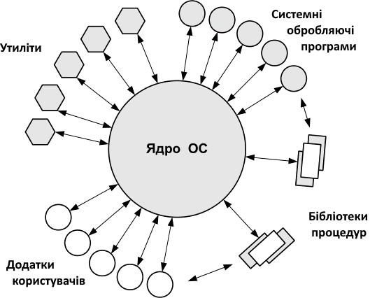
Для виконання своїх задач як звичайні додатки, так і утиліти, оброблювальні програми і бібліотеки ОС, звертаються до функцій ядра за допомогою системних викликів.
Модулі ОС, оформлені у вигляді утиліт, системних оброблювальних програм і бібліотек, завантажуються в оперативну пам’ять тільки на час виконання своїх функцій, тобто є транзитними. Постійно в оперативній пам’яті розташовуються тільки найнеобхідніші коди ОС, що становлять її ядро. Така організація ОС економить оперативну пам’ять комп’ютера.
Розділення операційної системи на ядро і модулі-додатки забезпечує легку розширюваність ОС. Щоб додати нову високорівневу функцію, досить розробити новий додаток, і при цьому не вимагається модифікувати основні функції, що утворюють ядро системи.
Ядро в привілейованому режимі
Для надійного управління ходом виконання додатків операційна система повинна мати певні привілеї стосовно додатків. Інакше некоректно працюючий додаток може втрутитися в роботу ОС і, наприклад, зруйнувати частину її коду. Усі зусилля розробників операційної системи виявляться марними, якщо їх рішення втілені в незахищені від додатків модулі системи, якими б елегантними і ефективними ці рішення не були.
Операційна система повинна мати виняткові повноваження також для того, щоб грати роль арбітра в суперечці додатків за ресурси комп’ютера в мультипрограмному режимі. Жодний додаток не повинен мати можливості без відома ОС отримувати додаткову область пам’яті, займати процесор довше дозволеного операційною системою періоду часу, безпосередньо управляти спільно використовуваними зовнішніми пристроями.
Забезпечити привілеї ОС неможливо без спеціальних засобів апаратної підтримки. Апаратура комп’ютера повинна підтримувати як мінімум два режими роботи – режим користувача (user mode) і привілейований режим, який також називають режимом ядра (kernel mode), або режимом супервізора (supervisor mode). Мається на увазі, що операційна система або деякі її частини працюють в привілейованому режимі, а додатки – в режимі користувача.
Оскільки ядро виконує всі основні функції ОС, то найчастіше саме ядро стає тією частиною ОС, яка працює в привілейованому режимі. Іноді ця властивість – робота в привілейованому режимі – служить основним визначенням поняття «ядро».
Підвищення стійкості операційної системи, що забезпечується переходом ядра в привілейований режим, досягається за рахунок деякого уповільнення виконання системних викликів. Системний виклик привілейованого ядра ініціює перемикання процесора з режиму користувача в привілейований, а при поверненні до додатку – перемикання з привілейованого режиму в режим користувача. В усіх типах процесорів із-за додаткової двократної затримки перемикання перехід на процедуру зі зміною режиму виконується повільніше, ніж виклик процедури без зміни режиму.
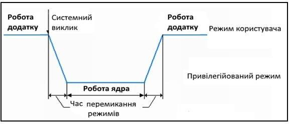
Перемикання процесора з режиму користувача в привілейований режим
Додатки ставляться в підпорядковане положення за рахунок заборони виконання в режимі користувача деяких критичних команд, пов’язаних з перемиканням процесора із завдання на завдання, управлінням пристроями введення-виведення, доступом до механізмів розподілу і захисту пам’яті. Виконання деяких інструкцій в режимі користувача забороняється безумовно, тоді як інші забороняється виконувати тільки за певних умов. Очевидно, що до таких інструкцій належить інструкція переходу в привілейований режим.
Наприклад, інструкції введення-виведення можуть бути заборонені додаткам при доступі до контролера жорсткого диска, який зберігає дані, загальні для ОС і усіх додатків, але дозволені при доступі до послідовного порту, який виділений в монопольне користування для певного додатку. Важливо, що умови дозволу виконання критичних інструкцій знаходяться під повним контролем ОС і цей контроль забезпечується за рахунок набору інструкцій, безумовно заборонених для режиму користувача.
Аналогічним чином забезпечуються привілеї ОС при доступі до пам’яті. Наприклад, виконання інструкції доступу до пам’яті для додатка дозволяється, якщо інструкція звертається до області пам’яті, відведеної цьому додатку операційною системою, і забороняється при зверненні до областей пам’яті, займаних ОС або іншими додатками. Повний контроль ОС над доступом до пам’яті досягається за рахунок того, що інструкція або інструкції конфігурації механізмів захисту пам’яті дозволяється виконувати тільки в привілейованому режимі. Механізми захисту пам’яті використовуються операційною системою не лише для захисту своїх областей пам’яті від додатків, але і для захисту областей пам’яті, виділених ОС якому-небудь додатку, від інших додатків. Говорять, що кожний додаток працює у своєму адресному просторі. Ця властивість дозволяє локалізувати некоректно працюючий додаток у власній області пам’яті, так що його помилки не роблять впливу на інші додатки і операційну систему.
Архітектура ОС, заснована на привілейованому ядрі і додатках, які виконуються в режимі користувача, стала, по суті, класичною. Її використовують багато популярних операційних систем, у тому числі численні версії UNIX, IBM OS/390, OS/2 і з певними модифікаціями – Windows.
У деяких випадках розробники ОС відступають від цього класичного варіанту архітектури, організовуючи роботу ядра і додатків в одному і тому ж режимі. Так, відома спеціалізована операційна система NetWare компанії Novell використовує привілейований режим процесорів Intel x86/Pentium як для роботи ядра, так і для роботи своїх специфічних додатків – завантажуваних модулів NLM. При такій побудові ОС звернення додатків до ядра виконуються швидше, оскільки немає перемикання режимів, проте при цьому відсутній надійний апаратний захист пам’яті, займаної модулями ОС, від некоректно працюючого додатку. Розробники NetWare пішли на таке потенційне зниження надійності своєї операційної системи, оскільки обмежений набір її спеціалізованих додатків дозволяє компенсувати цей архітектурний недолік за рахунок ретельної відладки кожного додатку.
В одному режимі працюють також ядро і додатки тих операційних систем, які розроблені для процесорів, що взагалі не підтримують привілейованого режиму роботи. Найпопулярнішим процесором такого типу був процесор Intel 8088/86, що послужив основою для персональних комп’ютерів компанії IBM. Операційна система MS-DOS, розроблена компанією Microsoft для цих комп’ютерів, складалася з двох модулів msdos.sys і io.sys, що складали ядро системи. До цих модулів з системними викликами зверталися командний інтерпретатор command.com, системні утиліти і додатки.
Поява в пізніших версіях процесорів Intel (починаючи з 80286) можливості роботи в привілейованому режимі не були використані розробниками MS-DOS. Ця ОС завжди працювала на процесорах цього типу в так званому реальному режимі, в якому емулюється процесор 8086/88. Не слід вважати, що реальний режим є синонімом режиму користувача, а привілейований режим – його альтернативою. Реальний режим був реалізований тільки для сумісності пізніх моделей процесорів з ранньою моделлю 8086/88 і альтернативою йому є захищений режим роботи процесора з доступними всіма особливостями процесорів пізніх моделей.
Монолітні системи
Відмітною особливістю більшості сучасних ОС є велике монолітне ядро. Ядро ОС забезпечує більшість її можливостей, включаючи планування, роботу з файловою системою, мережеві функції, роботу драйверів різних пристроїв, управління пам’яттю і багато що інше. Монолітне ядро реалізується як єдиний процес, усі елементи якого використовують один і той же адресний простір. Для побудови монолітної системи необхідно скомпілювати усі окремі процедури, а потім зв’язати їх в єдиний об’єктний файл. Тут повністю відсутнє приховування деталей реалізації – кожна процедура бачить будь-яку іншу процедуру.
У загальному випадку «структура» монолітної системи є відсутністю структури. ОС написана як набір процедур, кожна з яких може викликати інші, коли їй це треба. При використанні цієї техніки кожна процедура системи має певний інтерфейс у термінах параметрів і результатів, і кожна може викликати будь-яку іншу для виконання потрібної для неї корисної роботи.
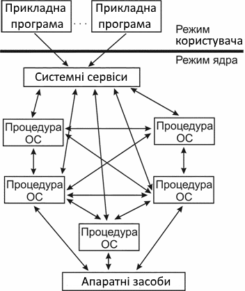
Монолітна структура ОС
Така відсутність структури була несумісна з розширенням ОС, до того ж такі ОС були дуже великими і складними. Так, перша версія OS/2 була створена колективом з 5000 програмістів за 5 років і містила близько 1 млн рядків коду. Розроблена пізніше ОС Multics містила вже 20 млн. рядків коду. Прикладами ОС з монолітним ядром можуть служити ранні версії ядра UNIX. Розмір програмного коду ядра Linux в 1995 році складав 250 тисяч рядків, а в 2010 році їх число збільшилось вже до 14 мільйонів.
Проте навіть такі монолітні системи можуть бути трохи структурованими. При зверненні до системних викликів, підтримуваних ОС, параметри поміщаються в строго певні місця, такі, як регістри або стек, а потім виконується спеціальна команда переривання, відома як виклик ядра або виклик супервізора. Ця команда перемикає машину з режиму користувача в режим ядра, що називається також режимом супервізора, і передає управління ОС. Потім ОС перевіряє параметри виклику для того, щоб визначити, який системний виклик має бути виконаний. Після цього ОС індексує таблицю, що містить посилання на процедури, і викликає відповідну процедуру. Така організація ОС припускає таку структуру:
- Головна програма, яка викликає необхідні сервісні процедури.
- Набір сервісних процедур, що реалізовують системні виклики.
- Набір утиліт, обслуговуючих сервісні процедури.
У цій моделі для кожного системного виклику є одна сервісна процедура. Утиліти виконують функції, які потрібні декільком сервісним процедурам.
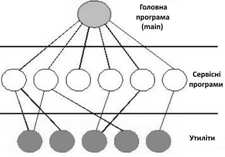
Проста структуризація монолітної ОС
Багаторівневі (багатошарові) системи
Узагальненням попереднього підходу є організація ОС як ієрархії рівнів. Рівні утворюються групами функцій ОС – файлова система, управління процесами і пристроями і тому подібне. Кожен рівень може взаємодіяти тільки зі своїм безпосереднім сусідом, який знаходиться вище або нижче.
Обчислювальну систему, працюючу під управлінням ОС на основі ядра, можна розглядати як систему, що складається з трьох основних ієрархічно розташованих шарів: нижній шар утворює апаратуру, проміжний – ядро, а утиліти, оброблювальні програми і додатки, складають верхній шар системи. Шарову структуру обчислювальної системи зручно зображати у вигляді системи концентричних кіл, ілюструючи той факт, що кожен шар може взаємодіяти тільки з суміжними шарами. При такій організації ОС додатки не можуть безпосередньо взаємодіяти з апаратурою, а тільки через шар ядра.
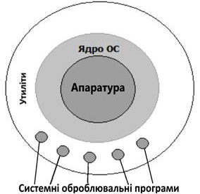
Тришарова схема обчислювальної системи
Багатошаровий підхід є універсальним і ефективним способом декомпозиції складних систем будь-якого типу, у тому числі і програмних. Відповідно до цього підходу система складається з ієрархії шарів. Кожен шар обслуговує вищерозміщений шар, виконуючи для нього деякий набір функцій, які утворюють міжшаровий інтерфейс. На основі функцій шару, що пролягає нижче, наступний (вгору за ієрархією) шар будує свої функції – складніші і потужніші, які, у свою чергу, виявляються примітивами для створення ще потужніших функцій вищерозміщеного шару. Суворі правила стосуються тільки взаємодії між шарами системи, а між модулями усередині шару зв’язки можуть бути довільними. Окремий модуль може виконати свою роботу або самостійно, або звернутися до іншого модуля свого шару, або звернутися за допомогою до шару, що пролягає нижче, через міжшаровий інтерфейс.
Першою системою, побудованою таким чином, була пакетна система THE (Technishe Hogeschool Eindhoven) Multiprogramming System, яку створив Е. Дейкстра і його студенти в 1968 році. Система мала 6 рівнів (шарів). Рівень 0 займався розподілом часу процесора, перемикаючи процеси за перериванням або після закінчення часу.
Рівень 1 управляв пам’яттю – розподіляв оперативну пам’ять і простір на магнітному барабані для тих частин процесів (сторінок), для яких не було місця в ОП, тобто шар 1 виконував функції віртуальної пам’яті.
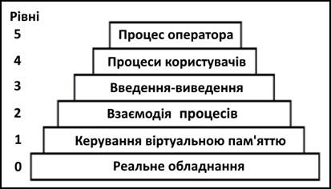
Багатошарова операційна система THE
Рівень 2 управляв зв’язком між консоллю оператора і процесами. За допомогою цього рівня кожен процес мав свою власну консоль оператора.
Рівень 3 управляв пристроями введення-виведення і буферизував потоки інформації до них і від них. За допомогою рівня 3 кожен процес замість того, щоб працювати з конкретними пристроями, з їх різноманітними особливостями, звертався до абстрактних пристроїв введення-виведення.
На рівні 4 працювали призначені для користувача програми, яким не потрібно було піклуватися ні про процеси, ні про пам’ять, ні про управління пристроями введення-виведення.
На рівні 5 розміщувався процес системного оператора.
Оскільки ядро є складним багатофункціональним комплексом, то багатошаровий підхід поширюється і на структуру ядра. Ядро може складатися з таких шарів.

Багатошарова структура ядра ОС
Засоби апаратної підтримки ОС. Досі про операційну систему говорилося як про комплекс програм, але, взагалі кажучи, частина функцій ОС може виконуватися і апаратними засобами. Тому іноді можна зустріти визначення операційної системи як сукупності програмних і апаратних засобів, що й показано на рис. 3.7. До операційної системи відносять не всі апаратні пристрої комп’ютера, а тільки засоби апаратної підтримки ОС, тобто ті, які прямо беруть участь в організації обчислювальних процесів: засоби підтримки привілейованого режиму, систему переривань, засоби перемикання контекстів процесів, засоби захисту областей пам’яті тощо.
Машинно-залежні компоненти ОС. Цей шар утворюють програмні модулі, в яких відбивається специфіка апаратної платформи комп’ютера. В ідеалі цей шар повністю екранує вищерозміщені шари ядра від особливостей апаратури. Це дозволяє розробляти вищерозміщені шари на основі машинно- незалежних модулів, існуючих в єдиному екземплярі для усіх типів апаратних платформ, підтримуваних цією ОС. Прикладом екрануючого шару може служити шар HAL операційної системи Windows NT.
Базові механізми ядра. Цей шар виконує найпримітивніші операції ядра, такі як програмне перемикання контекстів процесів, диспетчеризацію переривань, переміщення сторінок з пам’яті на диск і назад тощо. Модулі цього шару не приймають рішень про розподіл ресурсів – вони тільки відпрацьовують прийняті «вгорі» рішення, що і дає привід називати їх виконавчими механізмами для модулів верхніх шарів. Наприклад, рішення про те, що в даний момент треба перервати виконання поточного процесу А і почати виконання процесу В,
приймається менеджером процесів на вищерозміщеному шарі, а шару базових механізмів передається тільки директива про те, що треба виконати перемикання з контексту поточного процесу на контекст процесу В.
Менеджери ресурсів. Цей шар складається з потужних функціональних модулів, що реалізовують стратегічні завдання з управління основними ресурсами обчислювальної системи. На цьому шарі працюють менеджери (які називаються також диспетчерами) процесів, введення-виведення, файлової системи і оперативної пам’яті.
Розбиття на менеджери може бути і дещо іншим. Наприклад, менеджер файлової системи іноді об’єднують з менеджером введення-виведення, а функції управління доступом користувачів до системи в цілому і її окремим об’єктам доручають окремому менеджерові безпеки. Кожен з менеджерів веде облік вільних і використовуваних ресурсів певного типу і планує їх розподіл відповідно до запитів додатків.
Менеджер віртуальної пам’яті управляє переміщенням сторінок з оперативної пам’яті на диск і назад. Менеджер повинен відстежувати інтенсивність звернень до сторінок, час перебування їх в пам’яті, стану процесів, що використовують дані, і багато інших параметрів, на підставі яких він час від часу приймає рішення про те, які сторінки необхідно вивантажити і які – завантажити.
Для виконання прийнятих рішень менеджер звертається до шару базових механізмів, що пролягає нижче, із запитами про завантаження (вивантаженню) конкретних сторінок. Усередині шару менеджерів існують тісні взаємні зв’язки, що відбивають той факт, що для виконання процесу потрібний доступ одночасно до декількох ресурсів – процесора, області пам’яті, можливо, до певного файлу або пристроїв введення-виведення. Наприклад, при створенні процесу менеджер процесів звертається до менеджера пам’яті, який повинен виділити процесу певну область пам’яті для його кодів і даних.
Інтерфейс системних викликів. Цей шар є самим верхнім шаром ядра і взаємодіє безпосередньо з додатками і системними утилітами, утворюючи прикладний програмний інтерфейс операційної системи. Функції API, обслуговуючі системні виклики, надають доступ до ресурсів системи в зручній і компактній формі, без вказівки деталей їх фізичного розташування. Для здійснення таких комплексних дій системні виклики звертаються за допомогою до функцій шару менеджерів ресурсів, причому для виконання одного системного виклику може знадобитися декілька таких звернень.
Наведене розбиття ядра ОС на шари є досить умовним. У реальній системі кількість шарів і розподіл функцій між ними може бути і іншим. У системах, призначених для апаратних платформ одного типу, наприклад ОС NetWare, шар машинно-залежних модулів не виділяється, зливаючись з шаром базових механізмів і, частково, з шаром менеджерів ресурсів. Не завжди оформляються в окремий шар базові механізми. У цьому випадку менеджери ресурсів не лише планують використання ресурсів, але і самостійно реалізують свої плани.
Передусім це стосується до менеджера введення-виведення, нижній шар якого складають драйвери пристроїв, наприклад драйвер жорсткого диска або драйвер мережевого адаптера, а верхні шари – драйвери файлових систем або протоколів мережевих служб, що мають справу з логічною організацією інформації.
Спосіб взаємодії шарів в реальній ОС також може відхилятися від описаної вище схеми. Для прискорення роботи ядра в деяких випадках відбувається безпосереднє звернення з верхнього шару до функцій нижніх шарів, оминаючи проміжні. На багатьох апаратних платформах для реалізації системного виклику використовується інструкція програмного переривання. Цим додаток фактично викликає модуль первинної обробки переривань, який знаходиться в шарі базових механізмів, а вже цей модуль викликає потрібну функцію з шару системних викликів. Самі функції системних викликів також іноді порушують субординацію ієрархічних шарів, звертаючись прямо до базових механізмів ядра. Вибір кількості шарів ядра є відповідальною і складною справою.
Збільшення числа шарів веде до деякого уповільнення роботи ядра за рахунок додаткових накладних витрат на міжшарову взаємодію, а зменшення числа шарів погіршує розширюваність і логічність системи. ОС, що пройшли довгий шлях еволюційного розвитку, наприклад, багато версій UNIX, мають невпорядковане ядро з невеликим числом чітко виділених шарів.
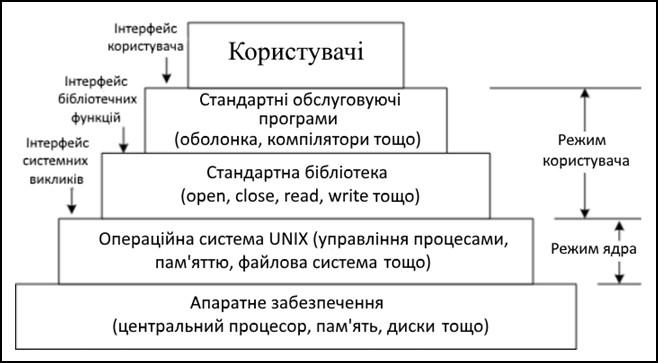
Структура ОС UNIX
У порівняно «молодих» операційних систем, таких як Windows NT, ядро розділене на більше число шарів і їх взаємодія формалізована набагато краще.

Структура Windows
Хоча такий структурний підхід на практиці працював непогано (висока продуктивність), сьогодні він все більше сприймається монолітним. У системах, що мають багаторівневу структуру, було нелегко видалити один шар і замінити його іншим в силу множинності і розмитості інтерфейсів між шарами. Додавання нових функцій і зміна існуючих вимагали хорошого знання операційної системи і багато часу (великий код ядра, і як наслідок великий вміст помилок).
Коли стало ясно, що операційні системи живуть довго і повинні мати можливості розвитку і розширення, монолітний і багатошаровий підходи стали давати тріщину, і на зміну їм прийшла модель клієнт-сервер і тісно пов’язана з нею концепція мікроядра.
Модель клієнт-сервер і мікроядро
Модель клієнт-сервер – це ще один підхід до структуризації ОС. У широкому сенсі модель клієнт-сервер припускає наявність програмного компонента-споживача якого-небудь сервісу – клієнта, і програмного компонента-постачальника цього сервісу – сервера. Взаємодія між клієнтом і сервером стандартизується, так що сервер може обслуговувати клієнтів, реалізованих різними способами і, можливо, різними виробниками. При цьому головною вимогою є те, щоб вони просили послуги сервера зрозумілим йому способом. Ініціатором обміну є клієнт, який посилає запит на обслуговування серверу, що знаходиться в стані очікування запиту.
Ще в деяких ранніх ОС частина функцій реалізувалася в режимі користувача, оскільки системний виклик не був потрібний. Системний виклик виконується повільніше, ніж виклик функції, реалізованої в режимі користувача, оскільки процесор двічі перемикається між режимами.
До складу мікроядра входять машинно-залежні модулі, а також модулі, що виконують базові (але не всі) функції ядра з управління процесами, обробки переривань, управління віртуальною пам’яттю, пересилання повідомлень і управління пристроями введення-виведення, пов’язані із завантаженням або читанням регістрів пристроїв. Набір функцій мікроядра відповідає функціям шару базових механізмів звичайного ядра. Такі функції операційної системи важко, якщо не неможливо, виконати в просторі користувача.
Усі інші більш високорівневі функції ядра оформляються у вигляді додатків (процеси-сервери), працюючих в режимі користувача. Такий підхід дозволяє розділити задачу розробки ОС на розробку ядра і розробку серверів. Сервери можна Налагоджувати для вимог конкретних додатків або середовища. Виділення в структурі системи мікроядра спрощує реалізацію системи, забезпечує її гнучкість.
Стосовно структуризації ОС ідея полягає в розбитті її на декілька процесів- серверів, кожен з яких виконує окремий набір сервісних функцій – наприклад, управління пам’яттю, створення або планування процесів. Кожен сервер виконується в призначеному для користувача режимі.

Перехід до мікроядерної архітектури
Клієнт, яким може бути або інший компонент ОС, або прикладна програма, просить сервіс, посилаючи повідомлення на сервер. Ядро ОС (що називається тут мікроядром), працюючи в привілейованому режимі, доставляє повідомлення потрібного сервера, сервер виконує операцію, після чого ядро повертає результати клієнтові за допомогою іншого повідомлення.
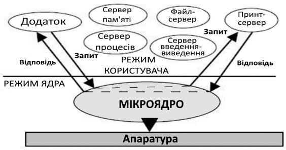
Мікроядерна архітектура є альтернативою класичному способу побудови операційної системи. Під класичною архітектурою в даному випадку розуміється розглянута вище структурна організація ОС, відповідно до якої всі основні функції операційної системи, що становлять багатошарове ядро, виконуються в привілейованому режимі.
Суть мікроядерної архітектури полягає в такому. У привілейованому режимі залишається працювати тільки дуже невелика частина ОС, що називається мікроядром. Мікроядро захищене від інших частин ОС і додатків.
Підхід з використанням мікроядра замінив вертикальний розподіл функцій операційної системи на горизонтальний. Компоненти, мікроядра, що лежать вище, хоча і використовують повідомлення, що пересилаються через мікроядро, взаємодіють один з одним безпосередньо. Мікроядро грає роль регулювальника. Воно перевіряє повідомлення, пересилає їх між серверами і клієнтами, і надає доступ до апаратури.
Схема зміни режимів при виконанні системного виклику в ОС з мікроядерною архітектурою виглядає, як показана на рис. 3.12. З рисунка видно, що при класичній організації ОС (рис. 3.12, а) виконання системного виклику супроводжується двома перемиканнями режимів (2 t). При мікроядерній організації (рис. 3.12, б) – чотирма (4 t). Отже, ОС з мікроядерною архітектурою за інших рівних умов завжди буде менш продуктивною, чим ОС з класичним ядром.
Мікроядро реалізує важливі функції, що лежать в основі операційної системи. Це базис для менш істотних системних служб і додатків. Саме питання про те, які з системних функцій вважати несуттєвими, і, відповідно, не включати їх до складу ядра, є предметом суперечки серед прибічників ідеї мікроядра. У загальному випадку, підсистеми, що були традиційно невід’ємними частинами ОС, – файлові системи, управління вікнами і забезпечення безпеки – стають периферійними модулями, що взаємодіють з ядром і один з одним, і працюють в режимі користувача.
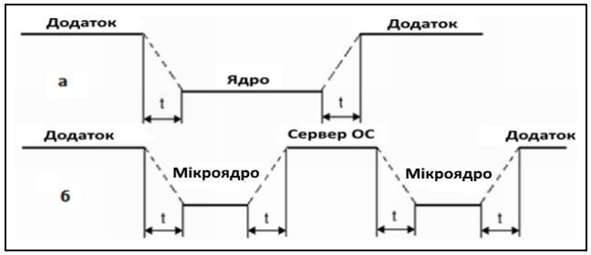
Обробка системного виклику в микроядерній архітектурі
Головний принцип розділення роботи між мікроядром і модулями, що оточують його, – включати в мікроядро тільки ті функції, яким абсолютно необхідно виконуватися в режимі супервізора і в привілейованому просторі. Під цим маються на увазі машинно-залежні програми, деякі функції управління процесами, обробка переривань, підтримка пересилки повідомлень, деякі функції управління пристроями введення-виведення, пов’язані із завантаженням команд в регістри пристроїв. Ці функції операційної системи важко, якщо не неможливо, виконати програмам, працюючим в просторі користувача.
Тут важливо зробити відмінність. Запуск процесу або потоку вимагає доступу до апаратури, так що за логікою – це функція ядра. Але ядру все одно, який з потоків запускати, тому рішення про пріоритети потоків і дисципліну постановки в чергу може приймати працюючий поза ядром планувальник.
Окрім вже представлених міркувань, переміщення планувальника на призначений для користувача рівень може знадобитися для чисто комерційних цілей. Деякі виробники ОС планують ліцензувати своє мікроядро іншим постачальникам, яким може потрібно замінити початковий планувальник на інший, такий, що підтримує, наприклад, планування в завданнях реального часу або що реалізовує якийсь спеціальний алгоритм планування.
Як і управління процесами, управління пам’яттю може розподілятися між мікроядром і сервером, працюючим в режимі користувача.
Драйвери пристроїв також можуть розташовуватися як усередині ядра, так і поза ним. При розміщенні драйверів пристроїв поза мікроядром для забезпечення можливості дозволу і заборони переривань, частина програми драйвера повинна виконуватися в просторі ядра. Відділення драйверів пристроїв від ядра робить можливою динамічну конфігурацію ОС.
Окрім динамічної конфігурації, є і інші причини розглядати драйвери пристроїв в якості процесів режиму користувача. СУБД, наприклад, може мати свій драйвер, оптимізований під конкретний вид доступу до диска, але його не можна буде підключити, якщо драйвери будуть розташовані в ядрі. Цей підхід також сприяє переносимості системи, оскільки функції драйверів пристроїв можуть бути в багатьох випадках абстраговані від апаратної частини.
Нині саме операційні системи, побудовані з використанням моделі клієнт- сервер і концепції мікроядра, найбільшою мірою задовольняють вимогам, що пред’являються до сучасних ОС.
Однаковий інтерфейс. Використання мікроядра припускає однаковий інтерфейс запитів, генерованих процесами. Процесам не треба відрізняти служби, що виконуються на рівні ядра і на призначеному для користувача рівні, оскільки доступ до усіх цих служб здійснюється тільки за допомогою передачі повідомлень.
Можливість розширення ОС. Архітектура мікроядра сприяє розширюваності ОС, дозволяючи додавати в них нові сервісні, а також забезпечувати нові множинні сервіси в одній і тій же функціональній області. Складність монолітних операційних систем, що збільшується, зробила важким, якщо взагалі можливим, внесення змін до ОС з гарантією надійності її подальшої роботи. Обмежений набір чітко певних інтерфейсів мікроядра відкриває шлях до впорядкованого зростання і еволюції ОС.
Переносимість. В архітектурі з мікроядром спеціально призначений для конкретного процесора код, або велика його частина, знаходиться в мікроядрі. Тому зміни, необхідні для перенесення системи на новий процесор, зводяться до мінімуму і мають тенденцію до розміщення в окремих логічних групах.
Надійність. Хоча модульність допомагає підвищити надійність роботи системи, архітектура з мікроядром дає ще вагоміші переваги. Маленьке мікроядро можна ретельно протестувати. Використання в ньому невеликої кількості інтерфейсів прикладного програмування підвищує шанси на те, що сервіси ОС, які працюють поза ядром, будуть реалізовані за допомогою якісного коду. Системний програміст має у своєму розпорядженні обмежену кількість інтерфейсів і обмежені способи організації взаємодії, тому він не зможе негативно вплинути на інші системні компоненти.
Кожен сервер виконується у вигляді окремого процесу у своїй власній області пам’яті, і таким чином захищений від інших процесів і від інших серверів операційної системи. Більше того, оскільки сервери виконуються в просторі користувача, вони не мають безпосереднього доступу до апаратури і не можуть модифікувати пам’ять, в якій зберігається управляюча програма. І якщо окремий сервер може потерпіти крах, то він може бути перезапущений без зупинки або ушкодження іншої частини ОС.
Обробка апаратних переривань. В архітектурі мікроядра є можливість обробляти апаратні переривання аналогічно повідомленням, а також включати в адресний простір порти введення-виведення. Таке мікроядро може розпізнавати переривання, але не обробляти їх. Замість цього воно генерує повідомлення процесу (сервісу), який виконується на рівні користувача і пов’язаному з цим перериванням. Таким чином, коли переривання дозволене, з ним зіставляється процес на рівні користувача, і таке відображення підтримується ядром.
Розподілення обчислень. Ця модель також добре підходить для розподілених обчислень, оскільки окремі сервери можуть працювати на різних процесорах мультипроцесорного комп’ютера або навіть на різних комп’ютерах, оскільки використовує механізми, аналогічні мережевим: взаємодія клієнтів і серверів шляхом обміну повідомленнями. При отриманні повідомлення від процесу мікроядро може обробити його самостійно або переслати іншому процесу, оскільки мікроядру все одно, чи прийшло повідомлення від локального або віддаленого процесу.
Прикладне середовище. Відповідно до мікроядерної архітектури всі функції ОС реалізуються мікроядром і серверами в режиме користувача. Важливо, що кожне прикладне середовище оформляється у вигляді окремого сервера і не включає базових механізмів.
Додатки, використовуючи API, поводяться з системними викликами до відповідного прикладного середовища через мікроядро. Прикладне середовище обробляє запит, виконує його (можливо, за допомогою базових функцій мікроядра) і посилає додатку результат. У ході виконання запиту прикладному середовищу доводиться, у свою чергу, звертатися до базових механізмів ОС, мікроядра та до інших серверів ОС.
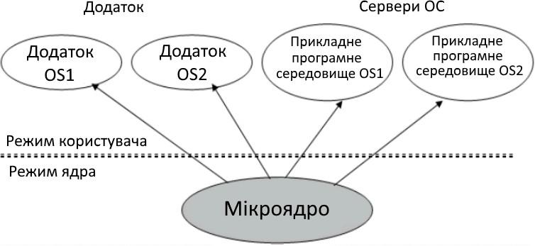
Мікроядерний підхід до реалізації багатьох прикладних середовищ
Головним недоліком мікроядерного підходу є зниження продуктивності. Системний виклик виконується повільніше, ніж виклик функції, реалізованої в режимі користувача, оскільки замість двох перемикань режиму процесора в разі системного виклику при класичній організації ОС здійснюється чотири (два – під час обміну між клієнтом і мікроядром, два – між сервером і ядром).
Але все таки цей недолік є більше теоретичним, оскільки на практиці продуктивність і надійність ядра залежить безпосередньо від якості його реалізації. Серйозність цього недоліку добре ілюструє історія розвитку Windows NT. У версіях 3.1 і 3.5 диспетчер вікон, графічна бібліотека і високорівневі драйвери графічних пристроїв входили до складу сервера призначеного для користувача режиму, і виклик функцій цих модулів здійснювався відповідно до мікроядерної схеми. Проте дуже скоро розробники Windows NT зрозуміли, що такий механізм звернень до часто використовуваних функцій графічного інтерфейсу істотно уповільнює роботу додатків і робить цю операційну систему уразливою в умовах гострої конкуренції. В результаті у версію Windows NT 4.0 були внесені істотні зміни – усі перелічені вище модулі були перенесені в ядро, що віддалило цю ОС від ідеальної мікроядерної архітектури, та зате різко підвищило її продуктивність.
Існує ще одна проблема, з якою стикаються розробники операційної системи, які вирішили застосувати мікроядерний підхід, – що включати в мікроядро, а що виносити в призначений для користувача простір. В ідеальному випадку мікроядро може складатися тільки із засобів передачі повідомлень, засобів взаємодії з апаратурою, у тому числі засобів доступу до механізмів привілейованого захисту. Проте багато розробників не завжди жорстко дотримуються принципу мінімізації функцій ядра, часто жертвуючи цим заради підвищення продуктивності.
Для можливості уявлення про розміри мікроядер операційних систем у ряді джерел наводяться такі дані:
- типове мікроядро першого покоління – 300 Кб коду і 140 інтерфейсів системних викликів;
- мікроядро ОС L4 (друге покоління) – 12 Кб коду і 7 інтерфейсів системних викликів;
- мікроядро UNIX-подібної POSIX-сумісної, 32-бітової, багатозадачної, розрахованої на багато користувачів, високопродуктивної операційної системи реального часу QNX фірми Quantum Software systems (Канада) займає декілька кілобайт пам’яті і забезпечує мінімальний набір функцій. У сучасних операційних системах відрізняють такі види ядер.
Наноядро. Украй спрощене і мінімальне ядро, виконує лише одне завдання – обробку апаратних переривань, генерованих облаштуваннями комп’ютера. Після обробки посилає інформацію про результати обробки вищерозміщеному програмному забезпеченню.
Мікроядро надає тільки елементарні функції управління процесами і мінімальний набір абстракцій для роботи з устаткуванням. Велика частина роботи здійснюється за допомогою спеціальних призначених для користувача процесів, що називаються сервісами.
Екзоядро надає лише набір сервісів для взаємодії між додатками, а також необхідний мінімум функцій, пов’язаних із захистом, виділенням і вивільненням ресурсів, контролем прав доступу тощо.
Монолітне ядро надає широкий набір абстракцій устаткування. Усі частини ядра працюють в одному адресному просторі. Монолітне ядро вимагає перекомпіляції при зміні складу устаткування. Компоненти операційної системи є не самостійними модулями, а складовими частинами однієї програми. Монолітне ядро продуктивніше, ніж мікроядро, оскільки працює як один великий процес.
Модульне ядро – сучасна, вдосконалена модифікація архітектури мікроядра. На відміну від «класичного» монолітного ядра, модульні ядра не вимагають повної перекомпіляції ядра при зміні складу апаратного забезпечення комп’ютера. Замість цього вони надають той або інший механізм підвантаження модулів, що підтримують те або інше апаратне забезпечення (наприклад, драйверів).
Гібридне ядро – це модифіковані мікроядра, що дозволяють для прискорення роботи запускати «несуттєві» частини в просторі ядра. Прикладом гібридного підходу може служити можливість запуску операційної системи з монолітним ядром під управлінням мікроядра. Так влаштовані 4.4BSD і MkLinux, засновані на мікроядрі Mach.
Ядро Windows NT. Найтісніше елементи мікроядерної архітектури і елементи монолітного ядра переплетені в ядрі Windows NT. Хоча Windows NT часто називають мікроядерною операційною системою, це не зовсім так. Мікроядро NT занадто велике (більше 1 Мб), щоб носити приставку «мікро». Компоненти ядра Windows NT розташовуються в пам’яті, що витісняється, і взаємодіють шляхом передачі повідомлень, як і належить в мікроядерних операційних системах. В той же час усі компоненти ядра працюють в одному адресному просторі і активно використовують загальні структури даних, що властиво операційним системам з монолітним ядром.
Об’єктно-орієнтований підхід
Хоча технологія мікроядер і заклала основи модульних систем, вона не змогла в повній мірі забезпечити можливості розширення систем. Нині цій меті найбільше відповідає об’єктно-орієнтований підхід, при якому кожен програмний компонент є функціонально ізольованим від інших.
Основним поняттям цього підходу є «об’єкт». Об’єкт – це одиниця програм і даних, що взаємодіє з іншими об’єктам за допомогою прийому і передачі повідомлень. Об’єкт може бути представленням як прикладної програми або документу, так і деяких абстракцій – процесу, події.
Програми (функції) об’єкта визначають перелік дій, які можуть бути виконані над даними цього об’єкта. Об’єкт-клієнт може звернутися до іншого об’єкта, пославши сполучення із запитом на виконання якої-небудь функції об’єкта-сервера.
Об’єкти можуть описувати сутності, які вони представляють, з різною мірою деталізації. Для забезпечення спадкоємності при переході до детальнішого опису розробникам пропонується механізм спадкоємства властивостей вже існуючих об’єктів, тобто механізм, що дозволяє породжувати конкретніші об’єкти із загальних. Наприклад, за наявності об’єкту «текстовий документ» розробник може легко створити об’єкт «текстовий документ у форматі Word», додавши відповідну властивість до базового об’єкта. Механізм спадкоємства дозволяє створити ієрархію об’єктів, в якій кожен об’єкт нижчого рівня набуває всіх властивостей свого предка (пробатька).
Внутрішня структура даних об’єкту прихована від спостереження. Не можна довільно змінювати дані об’єкта. Для того щоб отримати дані з об’єкта або помістити дані в об’єкт, необхідно викликати відповідні об’єктні функції. Це ізолює об’єкт від того коду, який використовує його. Розробник може звертатися до функцій інших об’єктів, або будувати нові об’єкти шляхом наслідування властивостей інших об’єктів, нічого не знаючи про те, як вони сконструйовані. Ця властивість називається інкапсуляцією.
Таким чином, об’єкт з’являється для зовнішнього світу у вигляді «чорного ящика» з певним інтерфейсом. З точки зору розробника, що використовує об’єкт, поки зовнішня реакція об’єкта залишається без змін, не мають значення ніякі зміни у внутрішній реалізації. Це дає можливість легко замінювати одну реалізацію об’єкта іншою. наприклад, у разі зміни апаратних засобів. З іншого боку, здатність об’єктів з’являтися у вигляді «чорного ящика» дозволяє упаковувати в них і представляти у вигляді об’єктів уже існуючі додатки, нічого в них не змінюючи.
Повністю об’єктно-орієнтовані операційні системи дуже привабливі для системних програмістів, оскільки, використовуючи об’єкти системного рівня, програмісти зможуть залізати вглиб операційних систем для пристосування їх до своїх потреб, не порушуючи цілісність системи. Об’єктно-орієнтований підхід є однією з найперспективніших тенденцій в конструюванні програмного забезпечення. Він був прийнятий на озброєння багатьма відомими фірмами, такими як Microsoft, Apple, IBM, Novell/USL (UNIX Systems Laboratories) і Sun Microsystems – усі вони розгорнули свої операційні системи в цьому напрямі.
Множинні прикладні середовища
При реалізації множинних прикладних середовищ розробники стикаються з суперечливими вимогами. З одного боку, завданням кожного прикладного середовища є виконання програми по можливості так, як коли б вона виконувалася на «рідній» ОС. Але потреби цих програм можуть входити в конфлікт з конструкцією сучасної операційної системи. Спеціалізовані драйвери пристроїв можуть суперечити вимогам безпеки. Можуть конфліктувати схеми управління пам’яттю і віконні системи. Але найбільшою потенційною проблемою є продуктивність – прикладне середовище повинне виконувати програми з прийнятною швидкістю.
Цій вимозі не відповідають системи емуляції. Для скорочення часу на виконання «чужих» програм прикладні середовища використовують імітацію програм на рівні бібліотек. Ефективність цього підходу пов’язана з тим, що більшість сьогоднішніх програм виконуються під управлінням GUI (графічних інтерфейсів користувача) типу Windows, Mac або UNIX Motif. При цьому додатки витрачають велику частину часу, роблячи деякі добре передбачувані речі. Вони безперервно виконують виклики бібліотек GUI для маніпулювання вікнами і для інших пов’язаних з GUI дій. І це те, що дозволяє прикладним середовищам відшкодувати час, витрачений на емуляцію команди за командою. Модульність операційних систем нового покоління дозволяє набагато легше реалізувати підтримку множинних прикладних середовищ. На відміну від старих операційних систем, що складаються з одного великого блоку для усіх практичних застосувань, розбитого довільним чином на частини, нові системи є модульними, з чітко певними інтерфейсами між складовими. Це робить створення додаткових модулів, що об’єднують емуляцію процесора і трансляцію бібліотек, значно простішим.
До вдосконалених операційних системам, що явно містять засоби множинних прикладних середовищ, належать: IBM OS/2 2.x, Microsoft Windows NT і версії UNIX від Sun Microsystems, IBM і Hewlett-Packard.
Концепція віртуальних машин
У системах віртуальних машин (ВМ) програмним шляхом створюються копії апаратного забезпечення (здійснюється його емуляція). Ці копії (віртуальні машини) працюють паралельно, на кожній з них функціонує програмне забезпечення, з яким взаємодіють прикладні програми і користувачі.
Уперше концепція ВМ була реалізована в 70-і роки в ОС VM фірми IBM. У СРСР варіант цієї системи (VM/370) був широко поширений в 80-і роки, і мав назву Системи Віртуальних Машин (СВМ) ЄС.
Ядро системи, що називається монітором віртуальних машин (МВМ, VM Monitor, MVM), виконується на фізичній машині, безпосередньо взаємодіючи з її апаратним забезпеченням. Кожна ВМ – це точна копія апаратного забезпечення, на якій запускалася будь-яка ОС, реалізована для цієї архітектури. Найчастіше на ВМ встановлювалася спеціально розрахована на одного користувача ОС (підсистема діалогової обробки – ПДО). На різних ВМ могли одночасно функціонувати різні ОС.
Коли програма, написана для ПДО, виконувала системний виклик, його перехоплювала копія ПДО, запущена на відповідній ВМ. Потім ПДО виконувала відповідні апаратні інструкції, наприклад інструкції введення-виведення. Ці інструкції перехоплював МВМ і переробляв їх на апаратні інструкції фізичної машини. Віртуальні машини спільно використовували ресурси реального комп’ютера. Наприклад, дисковий простір розподілявся на віртуальні диски, що називаються мінідисками.
Мережеві і розподілені ОС
Залежно від того, який віртуальний образ створює операційна система для того, щоб підмінити ним реальну апаратуру комп’ютерної мережі, відрізняють мережеві ОС і розподілені ОС. Мережева ОС надає користувачеві деяку віртуальну обчислювальну систему, працювати з якою набагато простіше, ніж з реальною мережевою апаратурою. В той же час ця віртуальна система не повністю приховує розподілену природу свого реального прототипу, тобто є віртуальною мережею.
При використанні ресурсів комп’ютерів мережі користувач мережевої ОС завжди пам’ятає, що він має справу з мережевими ресурсами. І для доступу до них треба виконати деякі особливі операції. Наприклад, відобразити віддалений каталог, що розділяється, на вигадану локальну букву дисковода або поставити перед ім’ям каталогу ще і ім’я комп’ютера, на якому той розташований. Користувачі мережевої ОС мають бути в курсі того, де зберігаються їх файли.
Працюючи в середовищі мережевої ОС, користувач хоча і може запустити завдання на будь-якій машині комп’ютерної мережі, завжди знає, на якій машині виконується його завдання. За умовчанням призначене для користувача завдання виконується на тій машині, на якій користувач зробив логічний вхід. Якщо ж він хоче виконати завдання на іншій машині, то йому треба або виконати логічний вхід в цю машину, або ввести спеціальну команду віддаленого виконання, в якій він повинен вказати інформацію, що ідентифікує віддалений комп’ютер.
Магістральним напрямом розвитку мережевих операційних систем є досягнення як можна вищогоступеня прозорості мережевих ресурсів. В ідеальному випадку мережева ОС повинна представити користувачеві мережеві ресурси у вигляді ресурсів єдиної централізованої віртуальної машини. Для такої операційної системи використовують спеціальну назву – розподілена ОС, або істинно розподілена ОС.
Розподілена ОС, динамічно і автоматично розподіляючи роботи по різних машинах системи для обробки, примушує набір мережевих машин працювати як віртуальний універсальний процесор. Користувач розподіленої ОС, взагалі кажучи, не має відомостей про те, на якій машині виконується його робота.
Розподілена ОС існує як єдина операційна система в масштабах обчислювальної системи. Кожен комп’ютер мережі, працюючої під управлінням розподіленої ОС, виконує частину функцій цієї глобальної ОС. Розподілена ОС об’єднує всі комп’ютери мережі в тому сенсі, що вони працюють в тісній кооперації один з одним для ефективного використання усіх ресурсів комп’ютерної мережі.
Мультипрограмування
Мультипрограмування, або багатозадачність (multitasking), – це спосіб організації обчислювального процесу, при якому на одному процесорі чередуючись виконуються відразу декілька програм. Ці програми спільно використовують не лише процесор, але і інші ресурси комп’ютера: оперативну і зовнішню пам’ять, пристрої введення-виведення, дані. Мультипрограмування підвищує ефективність використання обчислювальної системи, проте ефективність може розумітися по-різному. Найхарактернішими критеріями ефективності обчислювальних систем є:
- пропускна спроможність – кількість завдань, що виконуються обчислювальною системою за одиницю часу;
- зручність роботи користувачів, що полягає, зокрема, в тому, що вони мають можливість інтерактивно працювати одночасно з декількома додатками на одній машині;
- реактивність системи – здатність системи витримувати заздалегідь задані інтервали часу між запуском програми і отриманням результату. Залежно від вибраного критерію ефективності ОС діляться на системи пакетної обробки, системи розподілу часу і системи реального часу. Кожен тип ОС має специфічні внутрішні механізми і особливі сфери застосування. Деякі ОС можуть підтримувати одночасно декілька режимів.
Мультипрограмування в системах пакетної обробки
При використанні мультипрограмування для підвищення пропускної спроможності комп’ютера головною метою є мінімізація простоїв усіх пристроїв комп’ютера, і, перш за все, центрального процесора. Такі простої можуть виникати із-за призупинення завдання з його внутрішніх причин, пов’язаних, наприклад, з очікуванням введення даних для обробки. Дані можуть зберігатися на диску або ж поступати від користувача, працюючого за терміналом, а також від вимірювальної апаратури, встановленої на зовнішніх технічних об’єктах. При виникненні такого роду блокування виконуваного завдання природним рішенням, що веде до підвищення ефективності використання процесора, є перемикання процесора на виконання іншого завдання, в якого є дані для обробки. Така концепція мультипрограмування покладена в основу так званих пакетних систем.
Системи пакетної обробки призначалися для розв’язання задач в основному обчислювального характеру, що не вимагають швидкого отримання результатів. Головною їх метою і критерієм ефективності є максимальна пропускна спроможність, тобто розв’язання максимального числа завдань за одиницю часу.
Для досягнення цієї мети в системах пакетної обробки використовується така схема функціонування. На початку роботи формується пакет завдань, в якому кожне завдання містить вимогу до системних ресурсів. З цього пакету завдань формується мультипрограмна суміш, тобто певна кількість одночасно виконуваних завдань. Для одночасного виконання вибираються завдання, що пред’являють різні вимоги до ресурсів, так, щоб забезпечувалося збалансоване завантаження усіх пристроїв обчислювальної машини. Наприклад, в мультипрограмній суміші бажана одночасна присутність обчислювальних завдань і завдань з інтенсивним введенням-виведенням. Таким чином, вибір нового завдання з пакету завдань залежить від внутрішньої ситуації, що складається в системі, тобто вибирається «вигідне» завдання. Отже, в обчислювальних системах, працюючих під управлінням пакетних ОС, неможливо гарантувати виконання того або іншого завдання впродовж певного періоду часу.
Розглянемо детальніше поєднання в часі операцій введення-виведення і обчислень. Таке поєднання може досягатися різними способами. Один з них характерний, наприклад, для комп’ютерів, що мають спеціалізований процесор введення-виведення. У комп’ютерах класу мейнфреймів такі процесори називають каналами. У системі команд центрального процесора передбачається спеціальна інструкція, за допомогою якої каналу передаються параметри і вказівки на те, яку програму введення-виведення він повинен виконати. Починаючи з цього моменту центральний процесор і канал можуть працювати паралельно (рис. а).
Інший спосіб поєднання обчислень з операціями введення-виведення реалізується в комп’ютерах, в яких зовнішні пристрої управляються не процесором введення-виведення, а контролерами. Кожен зовнішній пристрій (чи група зовнішніх пристроїв одного типу) має свій власний контролер, який автономно відпрацьовує команди, що поступають від центрального процесора. При цьому контролер і центральний процесор працюють асинхронно. Оскільки багато зовнішніх пристроїв включають електромеханічні вузли, контролер виконує свої команди управління пристроями істотно повільніше, ніж центральний процесор – свої.
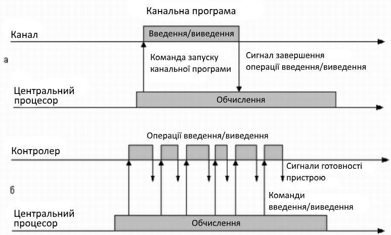
Паралельне виконання обчислень і операцій введення-виведення
Ця обставина використовується для організації паралельного виконання обчислень і операцій введення-виведення: в проміжку часу між передачею команд, контролеру центральний процесор може виконувати обчислення (див. рис. б). Контролер може повідомити центральний процесор про те, що він готовий прийняти наступну команду, сигналом переривання або центральний процесор дізнається про це, періодично опитуючи стан контролера.
Максимальний ефект прискорення досягається при найповнішому перекритті обчислень і введення-виведення. Розглянемо випадок, коли процесор виконує тільки одне завдання. У цій ситуації ступінь прискорення залежить від природи цього завдання і від того, наскільки ретельно був виявлений можливий паралелізм при її програмуванні. У завданнях, в яких переважають або обчислення, або введення-виведення, прискорення майже відсутнє. Паралелізм у рамках одного завдання неможливий також, коли для продовження обчислень потрібне повне завершення операції введення-виведення. У таких випадках неминучі простої центрального процесора або каналу.
Якщо ж в системі виконуються одночасно декілька завдань, з’являється можливість поєднання обчислень одного завдання з введенням-виведенням іншого. Поки одне завдання чекає якої-небудь події, процесор не простоює, як це відбувається при послідовному виконанні програм, а виконує інше завдання. Відмітимо, що такою подією в мультипрограмній системі може бути не лише завершення введення-виведення, але і, наприклад, настання певного моменту часу, розблокування файлу або завантаження сторінки з диска.
Загальний час виконання суміші завдань часто виявляється меншим, ніж їх сумарний час послідовного виконання (рис. а). Проте виконання окремого завдання в мультипрограмному режимі може зайняти більше часу, ніж при монопольному виділенні процесора цьому завданню.
Дійсно, при спільному використанні процесора в системі можуть виникати ситуації, коли завдання готове виконуватися, але процесор зайнятий виконанням іншого завдання. У таких випадках завдання, що завершило введення-виведення, готове виконуватися, але змушене чекати звільнення процесора, і це подовжує термін його виконання.
Так, з рис. видно, що в однопрограмному режимі завдання А виконується за 6 одиниць часу, а в мультипрограмному – за 7. Завдання В також замість 5 одиниць часу виконується за 6. Та зате час виконання обох завдань в мультипрограмному режимі складає всього 8 одиниць, що на 3 одиниці менше, ніж при послідовному виконанні.
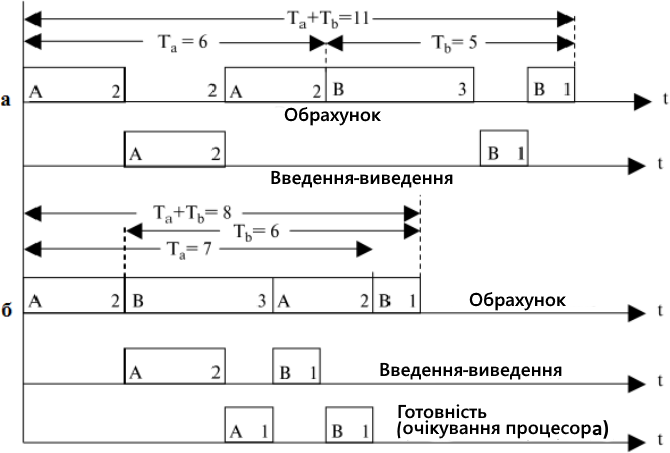
Час виконання двох завдань: в однопрограмній (а), та мультипрограмній (б) системах
У системах пакетної обробки перемикання процесора з виконання одного завдання на виконання іншого відбувається за ініціативою найактивнішого завдання, наприклад, коли завдання відмовляється від процесора із-за необхідності виконати операцію введення-виведення. Тому існує висока ймовірність того, що одне завдання може надовго зайняти процесор і виконання інтерактивних завдань стане неможливим.
Взаємодія користувача з обчислювальною машиною з системою пакетної обробки зводиться до того, що він приносить завдання, віддає його диспетчерові- операторові, а в кінці дня після виконання усього пакету завдань отримує результат. Очевидно, що такий порядок підвищує ефективність функціонування апаратури, але знижує ефективність роботи користувача.
Мультипрограмування в системах розподілу часу
Підвищення зручності і ефективності роботи користувача є метою іншого способу мультипрограмування – розподілу часу. У системах розподілу часу користувачам (чи одному користувачеві) надається можливість інтерактивної роботи відразу з декількома додатками. Для цього кожен додаток повинен регулярно одержувати можливість «спілкування» з користувачем. Зрозуміло, що в пакетних системах можливості діалогу користувача з додатком дуже обмежені. У системах розподілу часу ця проблема вирішується за рахунок того, що ОС примусово періодично призупиняє додатки, не чекаючи, коли вони добровільно звільнять процесор. Усім додаткам поперемінно виділяється квант процесорного часу, таким чином користувачі, що запустили програми на виконання, одержують можливість підтримувати з ними діалог.
Системи розподілу часу покликані виправити основний недолік систем пакетної обробки – ізоляцію користувача-програміста від процесу виконання його завдань. Кожному користувачеві в цьому випадку надається термінал, з якого він може вести діалог зі своєю програмою.
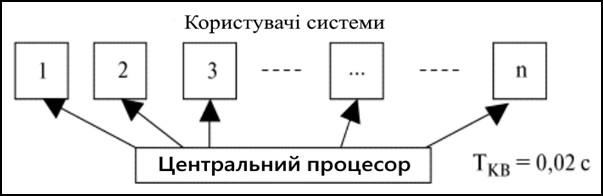
Система розподілу часу
Оскільки в системах розподілу часу кожному завданню виділяється тільки квант процесорного часу, жодне завдання не займає процесор надовго і час відповіді виявляється прийнятним. Якщо квант вибраний досить невеликим, то в усіх користувачів, одночасно працюючих на одній і тій же машині, складається враження, що кожен з них одноосібно використовує машину.
Ясно, що системи розподілу часу мають меншу пропускну спроможність, чим системи пакетної обробки, оскільки на виконання приймається кожне запущене користувачем завдання, а не те, яке «вигідне» системі.
Крім того, продуктивність системи знижується із-за збільшених накладних витрат обчислювальної потужності на частіше перемикання процесора із завдання на завдання. Це цілком відповідає тому, що критерієм ефективності систем розподілу часу є не максимальна пропускна спроможність, а зручність і ефективність роботи користувача. В той же час мультипрограмне виконання інтерактивних додатків підвищує і пропускну спроможність комп’ютера (хай і не в такому ступені, як пакетні системи). Апаратура завантажується краще, оскільки в той час, поки один додаток чекає повідомлення користувача, інші додатки можуть оброблятися процесором.
Мультипрограмування в системах реального часу
Ще один різновид мультипрограмування використовується в системах реального часу, призначених для управління від комп’ютера різними технічними об’єктами (наприклад, верстатом, супутником, науковою експериментальною установкою тощо) або технологічними процесами (наприклад, гальванічною лінією, доменним процесом тощо).
В усіх цих випадках існує гранично допустимий час, впродовж якого має бути виконана та або інша програма, що управляє об’єктом. Інакше може статися аварія: супутник вийде із зони видимості, експериментальні дані, що поступають з датчиків, будуть втрачені, товщина гальванічного покриття не відповідатиме нормі.
Таким чином, критерієм ефективності тут є здатність витримувати заздалегідь задані інтервали часу між запуском програми і отриманням результату (дії, що управляє). Цей час називається часом реакції системи, а відповідна властивість системи – реактивністю. Вимоги до часу реакції залежать від специфіки керованого процесу. Контролер робота може вимагати від вбудованого комп’ютера відповідь протягом 1 мс, тоді як при моделюванні польоту може бути прийнятна відповідь в 40 мс.
У системах реального часу мультипрограмна суміш є фіксованим набором заздалегідь розроблених програм, а вибір програми на виконання здійснюється за перериваннями (виходячи з поточного стану об’єкту) або відповідно до розкладу планових робіт.
Здатність апаратури комп’ютера і ОС до швидкої відповіді залежить в основному від швидкості перемикання з одного завдання на інше і, зокрема, від швидкості обробки сигналів переривання. Якщо при виникненні переривання процесор повинен опитати сотні потенційних джерел переривання, то реакція системи буде занадто повільною. Час обробки переривання в системах реального часу часто визначає вимоги до класу процесора навіть при невеликому його завантаженні.
У системах реального часу не прагнуть максимально завантажувати всі пристрої, навпаки, при проектуванні програмного комплексу, що управляє, закладається деякий «запас» обчислювальної потужності на випадок пікового навантаження. Статистичні аргументи про низьку ймовірність виникнення пікового навантаження, грунтуються на тому, що ймовірність одночасного виникнення великої кількості незалежних подій дуже мала, і не застосована до багатьох ситуацій в системах управління.
Багатопоточність
Однією з основних концепцій, що допомагають зрозуміти структуру ОС, є концепція процесів. Є багато визначень терміну «процес», у тому числі:
- програма, що виконується;
- об’єкт, який можна ідентифікувати і виконати на комп’ютері;
- одиниця активності, яку можна охарактеризувати поточним станом і пов’язаним з нею набором ресурсів.
Процес можна розділити на чотири компоненти:
- програма, що виконується;
- дані і ресурси, потрібні для її роботи;
- контекст виконання програми.
Багатопоточність (multithreading) – це технологія, при якій процес, що виконується додатком, розділяється на декілька одночасно виконуваних потоків. Багатопоточність виявляється дуже корисною для додатків, що виконують декілька незалежних завдань, які не вимагають послідовного виконання. Якщо в межах одного і того ж процесу обробляється декілька потоків, то при перемиканні між різними потоками непродуктивна витрата ресурсів процесора менша, ніж при перемиканні між різними процесами.
Симетрична багатопроцесорна обробка
До недавнього часу усі персональні комп’ютери, розраховані на одного користувача, і робочі станції містили один процесор загального призначення. В результаті постійного підвищення вимог до продуктивності і пониження вартості процесорів виробники перейшли до випуску комп’ютерів з декількома процесорами. Для підвищення ефективності і надійності використовується технологія симетричної багатопроцесорності (Symmetric MultiProcessing – SMP). Цей термін належить до архітектури апаратного забезпечення комп’ютера, а також до образу дій ОС, що відповідає цій архітектурній особливості. Симетричну багатопроцесорність можна визначити, як автономну комп’ютерну систему з такими характеристиками:
- У системі є декілька процесорів.
- Ці процесори, сполучені між собою комунікаційною шиною, спільно використовують одну і ту ж основну пам’ять і одні і ті ж пристрої введення- виведення.
- Усі процесори можуть виконувати одні і ті ж функції (звідси назва симетрична обробка). ОС, працююча в системі з симетричною багатопроцесорністю, розподіляє процеси або потоки між усіма процесорами. У багатопроцесорних систем є декілька потенційних переваг в порівнянні з однопроцесорними.
Продуктивність. Якщо завдання можна організувати так, що його певні частини виконуватимуться паралельно, це призведе до підвищення продуктивності порівняно з однопроцесорними системами.
Надійність. При симетричній мультипроцесорній обробці відмова одного процесора не призведе до зупинки машини.
Нарощування. Додаючи в систему додаткові процесори, можна підвищити продуктивність системи.
Масштабованість. Виробники можуть пропонувати свої продукти в різних конфігураціях, що відрізняються ціною і продуктивністю.
Архітектура симетричної багатопроцесорності
Найранішою і найвідомішою є класифікація архітектури обчислювальних систем, запропонована в 1966 році М. Флінном. Класифікація базується на понятті потоку, під яким розуміється послідовність елементів, команд або даних, що обробляється процесором. На основі числа потоків команд і потоків даних Флінн виділяє чотири класи архітектури: SISD, MISD, SIMD, MIMD (ми розглянемо два). Ці чотири класи архітектури схематично представляються у вигляді квадрата, що називається квадратом Флінна.
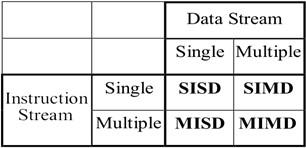
Класифікація Флінна
На рисунках, що ілюструють класифікацію М. Флінна, використані такі позначення:
- ПР – один або декілька процесорних елементів;
- ПУ – пристрій управління;
- ПД – пам’ять даних.
SISD (Single Instruction stream / Single Data stream) – одиночний потік команд і одиночний потік даних. До цього класу належать класичні послідовні машини, або інакше, машини фон-нейманівського типу, наприклад, PDP-11, IBM PC (рис. 3.18). У таких машинах один управляючий пристрій, він отправляє тільки один потік команд, усі команди обробляються послідовно одна за одною одним процесором, і кожна команда ініціює одну операцію з одним потоком даних. Не має значення той факт, що для збільшення швидкості обробки команд і швидкості виконання арифметичних операцій може застосовуватися конвеєрна обробка – як машина CDC 6600 із скалярними функціональними пристроями, так і CDC 7600 з конвеєрними пристроями потрапляють в цей клас.
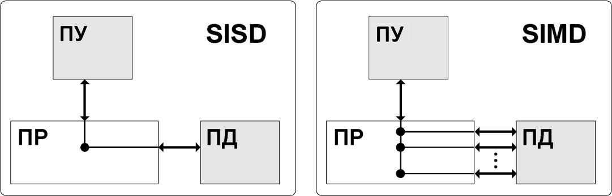
Архітектура SISD і SIMD
SIMD (Single Instruction stream / Multiple Data stream) – поодинокий потік команд і множинний потік даних. Ці системи мають один управляючий пристрій і велику кількість процесорів, які можуть виконувати одну і ту ж інструкцію щодо різних даних. Єдина інструкція паралельно виконується над багатьма елементами даних. Архітектура подібного роду включає, на відміну від попереднього класу, векторні команди. Це дозволяє виконувати одну арифметичну операцію відразу над багатьма даними – елементами вектору. Спосіб виконання векторних операцій не обмовляється, тому обробка елементів вектора може здійснюватися або процесорною матрицею, як в ILLIAC IV, або за допомогою конвеєра, як, наприклад, в машині CRAY-1.
Машини типу SIMD складаються з великого числа ідентичних процесорних елементів, що мають власну пам’ять. Усі процесорні елементи в такій машині виконують одну і ту ж програму. Очевидно, що така машина, складена з великого числа процесорів, може забезпечити дуже високу продуктивність тільки на тих задачах, при розв’язанні яких усі процесори можуть робити одну і ту ж роботу. Модель обчислень для машини SIMD дуже схожа на модель обчислень для векторного процесора: поодинока операція виконується над великим блоком даних. На відміну від обмеженого конвеєрного функціонування векторного процесора, матричний процесор (синонім для більшості SIMD-машин) може бути значно гнучкішим. Оброблювальні елементи таких процесорів – це універсальні програмовані ЕОМ, так що задачі, що розв’язуються паралельно, можуть бути досить складними і містити галуження. Кожен фіксований момент часу однакову команду і виконує її над своїми локальними даними. Для класичних процесорних матриць ніяких питань не виникає, проте в цей же клас можна включити і векторно-конвеєрні машини, наприклад, CRAY-1.
MISD (Multiple Iinstruction stream / Single Data stream) – множинний потік команд і поодинокий потік даних. Це архітектура багатьох процесорів, які оброблюють один і той же потік даних (рис. 3.19). Проте ні Флінн, ні інші фахівці в області архітектури комп’ютерів досі не змогли представити приклад реально існуючої обчислювальної системи, побудованої на цьому принципі. В більшості випадків декільком потокам команд потрібні декілька потоків даних, так що цей клас паралельних комп’ютерів застосовується дослідниками лише як теоретична модель, а не як реальний комп’ютер масового виробництва. Вважається, що дотепер цей клас порожній. Але не варто вважати це недоліком схеми. Така архітектура в майбутньому може стати надзвичайно корисною для розробки принципово нових обчислювальних систем.
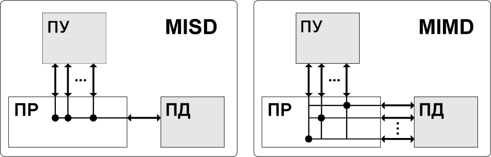
Архітектура MISD і MIMD
MIMD (multiple instruction stream / multiple data stream) – множинний потік команд і множинний потік даних. У цій архітектурі кожен процесор має свій управляючий пристрій і незалежно виконує різні набори команд, що обробляють різні набори даних (див. рис. 3.19). Системи в архітектурі MIMD діляться на системи з розподіленою пам’яттю (слабкозв’язані системи), до яких належать кластери, і системи з спільно використовуваною пам’яттю. До останніх належать симетричні мультипроцесорні системи. В наші дні це – найпопулярніший тип паралельного комп’ютера. Нові багатоядерні платформи (такі, як процесор Intel Core Duo) потрапляють саме в цю категорію.
Термін «мультипроцесор» покриває більшість машин типу MIMD і (подібно до того, як термін «матричний процесор» застосовується до машин типу SIMD) часто використовується як синонім для машин типу MIMD. У мультипроцесорній системі кожен процесорний елемент виконує свою програму досить незалежно від інших процесорних елементів. Процесорні елементи, звичайно, повинні якось зв’язуватися один з одним, що робить необхідним детальнішу класифікацію машин типу MIMD.
У мультипроцесорах із загальною пам’яттю (сильнозв’язанних мультипроцесорах) є пам’ять даних і команд, доступна усім процесорним елементам. Із загальною пам’яттю процесорні елементи зв’язуються за допомогою загальної шини або мережі обміну. В протилежність цьому варіанту в слабкозв’язаних багатопроцесорних системах (машинах з локальною пам’яттю) уся пам’ять ділиться між процесорними елементами і кожен блок пам’яті доступний тільки пов’язаному з ним процесору. Мережа обміну зв’язує процесорні елементи один з одним.
Базовою моделлю обчислень на MIMD-мультипроцесорі є сукупність незалежних процесів, які епізодично звертаються до даних, що розділяються. Існує велика кількість варіантів цієї моделі. На одному кінці спектру – модель розподілених обчислень, в якій програма ділиться на досить велике число паралельних завдань, що складаються з декількох підпрограм. На іншому кінці спектру – модель потокових обчислень, в яких кожна операція в програмі може розглядатися як окремий процес. Така операція чекає своїх вхідних даних (операндів), які мають бути передані їй іншими процесами. Після їх отримання операція виконується, і отримане значення передається тим процесам, які його потребують.
Клас MIMD надзвичайно широкий, оскільки включає всілякі мультипроцесорні системи: CRAY Y-MP, Intel Paragon, CRAY T3D і багато інших. Цікаве те, що якщо конвеєрну обробку розглядати як виконання декількох команд не над поодиноким векторним потоком даних, а над множинним скалярним потоком, то усі розглянуті вище векторно-конвеєрні комп’ютери можна розташувати і в цьому класі. Подальша класифікація обчислювальних систем з архітектурою MІMD може виконуватися відповідно до того, як в них здійснюється обмін даними між процесорами.
У системі MIMD процесори є універсальними, тому що вони повинні мати можливість обробляти усі команди, необхідні для відповідного перетворення даних. Якщо кожному процесору виділяється окрема ділянка пам’яті, то кожен такий елемент є самостійним комп’ютером. Вони обмінюються між собою інформацією або через спеціальні канали, або через деякі мережеві пристрої. Такі системи відомі як кластери, або мультикомп’ютери. Якщо процесори спільно використовують загальну пам’ять, то кожен з них має доступ до програм і даних, які там зберігаються. Такі системи відомі під назвою багатопроцесорних систем із загальною пам’яттю.
Одна з класифікацій багатопроцесорних систем грунтується на тому, як процеси розподіляються між процесорами. Існують два головні підходи – виділення основних і підпорядкованих процесорів і симетрична багатопроцесорна обробка. В архітектурі з ведучим і веденими процесорами ядро ОС завжди виконується на спеціально виділеному процесорі. На інших процесорах можуть виконуватися тільки програми користувача і, можливо, утиліти ОС.
Провідний процесор відповідає за планування процесів або потоків. Якщо процесу, що виконується на веденому процесорі, знадобиться який-небудь системний сервіс, він повинен послати запит основному процесору і потім чекати, поки сервісна програма не закінчить свою роботу. Для реалізації такого підходу досить удосконалити ОС, призначену для однопроцесорних багатозадачних систем. Вирішення конфліктів спрощується, завдяки тому, що усією пам’яттю і усіма ресурсами введення-виведення управляє один процесор. Цей підхід має ряд недоліків:
- Збій в роботі основного процесора призводить до відмови усієї системи.
- Основний процесор може гальмувати роботу усієї системи, оскільки тільки на ньому повинні виконуватися усі дії з планування і управління процесами.
У симетричній багатопроцесорній системі ядро ОС може виконуватися на будь-якому процесорі. Як правило, кожен процесор сам планує свою роботу. Ядро може бути виконане у вигляді багатьох процесів або багатьох потоків, при цьому різні його частини здатні працювати паралельно. Симетричний підхід дещо ускладнює архітектуру ОС. Потрібно вжити запобіжні заходи, щоб два процесори не вибрали один і той же процес, або щоб процес яким-небудь чином не випав з черги. Необхідно застосувати спеціальні методи для дозволу запитів одного і того ж ресурсу різними процесами і синхронізації запитів.
Організація симетричної багатопроцесорної системи
Архітектура SMP-системи має декілька процесорів, кожен з яких містить свій власний управляючий модуль, арифметично-логічний пристрій і свої регістри. Кожен з процесорів має доступ до загальної основної пам’яті і до пристроїв уведення-виведення. Цей доступ здійснюється за допомогою деякого механізму взаємодії. Традиційно в такій ролі виступає загальна шина. Процесори можуть обмінюватися між собою інформацією через загальну пам’ять. Крім того, процесори можуть мати можливість безпосереднього обміну сигналами.
Як правило, в сучасних машинах процесори мають, принаймні, один рівень власного кеша. Це вносить деякі нюанси в архітектуру ОС. Оскільки в кожному локальному кеші зберігається образ якоїсь частини основної пам’яті, то в результаті зміни слова в одному кеші відповідне слово в іншому кеші може виявитися невірним. Для запобігання цьому усі процесори, кеш яких містить це слово, мають бути сповіщені про необхідність змінити його. Ця проблема відома як когерентності кешів (від лат. cohaerens – що знаходиться в зв’язку) і вирішується на апаратному рівні.
Архітектура багатопроцесорних ОС
Архітектура багатопроцесорних ОС, призначена для симетричної багатопроцесорної системи, управляє процесорами і іншими ресурсами комп’ютера так, щоб з точки зору користувача багатопроцесорна система виглядала так само, як і багатозадачна однопроцесорна. До числа особливостей архітектури багатопроцесорних ОС входять такі.
Одночасні паралельні процеси або потоки. Щоб декілька процесів могли одночасно виконувати один і той же код ядра, він має бути реєнтерабельним. При виконанні декількома процесорами одного і того ж коду ядра (чи різних його частин) потрібна організація управління таблицями і структурами ядра, щоб уникнути взаємоблокувань або неправильного виконання операції.
Планування. Планування може виконуватися на будь-якому з процесорів, тому необхідно передбачити механізм, що дозволяє уникнути конфліктів. При використанні багатопоточності на рівні ядра декілька потоків одного і того ж процесу можуть виконуватися на різних процесорах. Планування в багатопроцесорних системах розглядатиметься далі.
Синхронізація, синхронна і асинхронна взаємодія. За ситуації, коли декілька активних процесів мають можливість доступу до спільних адресних просторів або ресурсів введення-виведення, необхідного потурбуватись про їх ефективну синхронізацію.
Синхронізація – це засіб, який забезпечує реалізацію взаємовиключень і впорядкування подій. Загальноприйнятим механізмом синхронізації в багатопроцесорних ОС є блокування.
При описі взаємодії між елементами програмних систем ініціатор взаємодії, тобто компонент, що посилає запит на обробку, називається клієнтом, а компонент, що обробляє запит – сервером. У більшості випадків один і той же компонент може виступати в різних ролях – то клієнта, то сервера – в різних взаємодіях. Лише в невеликому класі систем ролі клієнта і сервера закріплюються за компонентами на увесь час їх існування.
Синхронною (блокуючою) називається така взаємодія між компонентами, при якій клієнт, відіславши запит, блокується і може продовжувати роботу тільки після отримання відповіді від сервера.
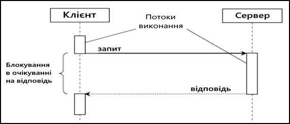 Синхронна взаємодія
Синхронну взаємодію досить просто організувати, і вона набагато простіша для розуміння. Людині простіше розуміти процеси, які розгортаються послідовно, оскільки не треба постійно перемикати увагу на різні події, що відбуваються одночасно. Код програми клієнтського компонента, що описує синхронну взаємодію, влаштований простіше.
В той же час синхронна взаємодія веде до значних витрат часу на очікування відповіді. Цей час часто можна використати кориснішим чином – чекаючи відповіді на один запит, клієнт міг би зайнятися іншою роботою.
У рамках асинхронної або неблокуючої взаємодії клієнт після відправки запиту серверу може продовжувати роботу, навіть якщо відповідь на запит ще не прийшла. Асинхронна взаємодія дозволяє отримати вищу продуктивність системи за рахунок використання часу між відправкою запиту і отриманням відповіді на нього для виконання інших задач (рис. 3.21). Інша важлива перевага асинхронної взаємодії – менша залежність клієнта від сервера, можливість продовжувати роботу, навіть якщо машина, на якій знаходиться сервер, стала недоступною.
В той же час асинхронну взаємодію набагато складніше організувати, розробляти і супроводжувати. Оскільки при такій взаємодії треба писати специфічний код для отримання і обробки результатів запитів.
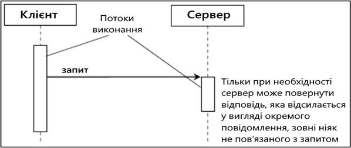 Асинхронна взаємодія
Управління пам’яттю. Система управління пам’яттю в багатопроцесорній системі має бути здатна вирішувати усі проблеми, які виникають в однопроцесорних комп’ютерах. Крім того, ОС повинна уміти використати можливості, що надаються апаратним забезпеченням. Механізми сторінкової організації пам’яті різних процесорів мають бути скоординовани, щоб забезпечити узгодженість дій за ситуації, коли декілька процесорів використовують одну і ту ж сторінку або один і той же сегмент.
Надійність і відмовостійкість. При відмові одного з процесорів ОС повинна забезпечити продовження роботи системи. Планувальник ОС (як і інші його частини) повинен отримати інформацію про втрату одного з процесорів і відповідним чином перебудувати свої управляючі таблиці.
Контрольні питання
- Які експлуатаційні і ринкові вимоги, окрім вимог функціональної повноти, пред’являються до операційних систем?
- За рахунок чого досягається розширюваність ОС?
- Написання переносимої ОС аналогічно написанню будь-якого переносимого коду. Яким правилам необхідно слідувати для написання переносимої ОС?
- На яких рівнях досягається сумісність ОС?
- У рамках якого проекту ведуться роботи по стандартизації інтерфейсу ОС?
- Які вбудовані інструменти загального призначення підтримують різні механізми захисту і безпеку ОС?
- Відповідно до вимог Помаранчевої Книги, до якого рівня безпеки належать ОС?
- На які групи розділяються модулі при загальному підході до структуризації операційної системи?
- Які функції виконуються модулями ядра?
- На які групи підрозділяються допоміжні модулі ОС?
- Як завантажуються в оперативну пам’ять модулі ОС, оформлені у вигляді утиліт, системних оброблювальних програм і бібліотек?
- Які режими роботи підтримує апаратура комп’ютера? 13.Назвіть синоніми терміну «привілейований режим»?
- Які популярні ОС використовують архітектуру ОС, засновану на привілейованому ядрі і додатках режиму користувача?
- Назвіть відмінні риси більшості сучасних ОС, працюючих на монолітному ядрі.
- Чи можуть бути монолітні системи трохи структурованими? 17.Що собою являють багаторівневі (багатошарові) системи?
- Де і коли була розроблена перша багатошарова операційна ситема? Скільки шарів (рівнів) було в цій системі?
- Які засоби апаратної підтримки ОС беруть участь в організації обчислювальних процесів?
- Які сервіси підтримує модель ОС типу клієнт-сервер? 21.Які модулі зазвичай входять до складу мікроядра?
- У чому суть мікроядерної архітектури ОС?
- Скільки відбувається перемикань режимів роботи при виконанні системного виклику при класичній організації ОС і при мікроядерній організації?
- Яким вимогам задовольняють сучасні операційні системи, побудовані з використанням моделі клієнт-сервер і концепції мікроядра?
- Який головний недолік мікроядерного підходу архітектури ОС?
- 26.Які види ядер застосовуються в сучасних операційних системах?
- Який підхід, прийнятий на озброєння багатьма відомими фірмами, є однією з найперспективніших в конструюванні сучасних ОС?
Тести
- Мультитермінальний режим роботи припускає поєднання:
- діалогового режиму роботи і режиму мультипрограмування;
- привілейованого режиму роботи і режиму користувача;
- багатопроцесорного режиму роботи і режиму введення-виведення.
- Ядро операційної системи на сучасних процесорах функціонує:
- у режимі реального часу;
- у режимі користувача;
- у привілейованому режимі;
- в інтерактивному режимі.
- Мікроядерна архітектура в порівнянні з монолітним ядром має такий недолік:
- менш продуктивна;
- менш гнучка;
- менш відмовостійка;
- вимогливіша до ресурсів.
- Резидентними називаються ті модулі ядра операційної системи, які:
- завантажуються в оперативну пам’ять тільки на час виконання своїх функцій;
- постійно знаходяться в оперативній пам’яті;
- зберігаються в зовнішній пам’яті.
- Класична архітектура операційної системи припускає, що в привілейованому режимі працюють:
- утиліти ОС;
- системні управлячі програми;
- стандартні додатки;
- ядро ОС.
- Розширюваність в ОС на основі мікроядра (в порівнянні з класичною архітектурою) досягається:
- складніше;
- рідше;
- так само;
- легше.
- У якому режимі працюють додатки?
- режимі супервізора;
- режимі ядра;
- режимі користувача;
- привілейованому режимі.
- До переваг мікроядерної архітектури можна віднести наступне:
- розширюваність, продуктивність;
- розширюваність, продуктивність, надійність;
- розширюваність, надійність, переносимість;
- продуктивність, надійність.
- У ОС на основі мікроядра при зверненні до функції ОС, оформленої у вигляді сервера, зміна режимів відбувається … рази.